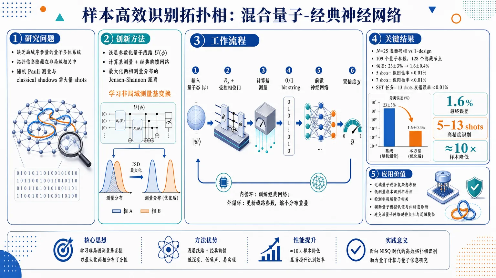
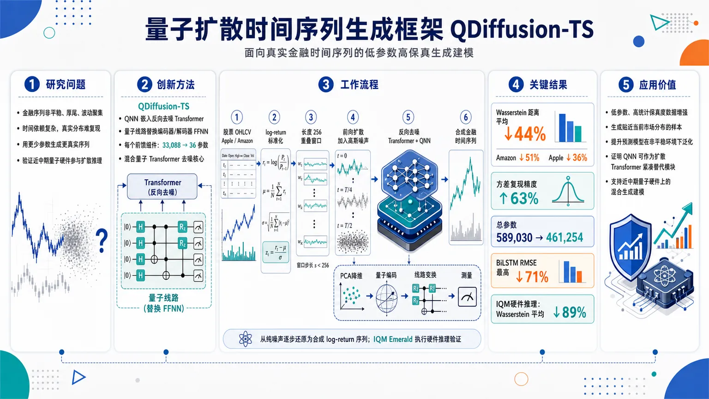
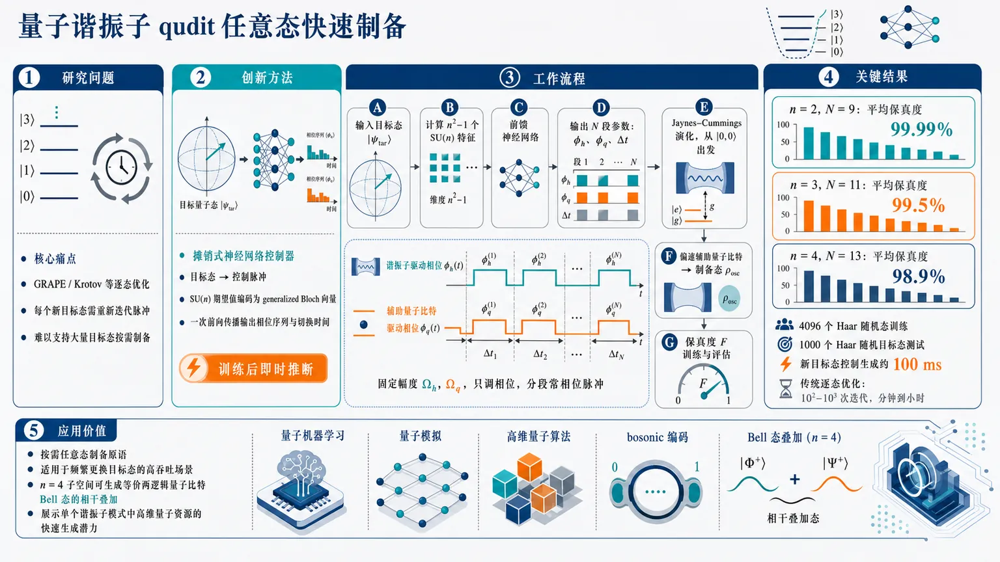
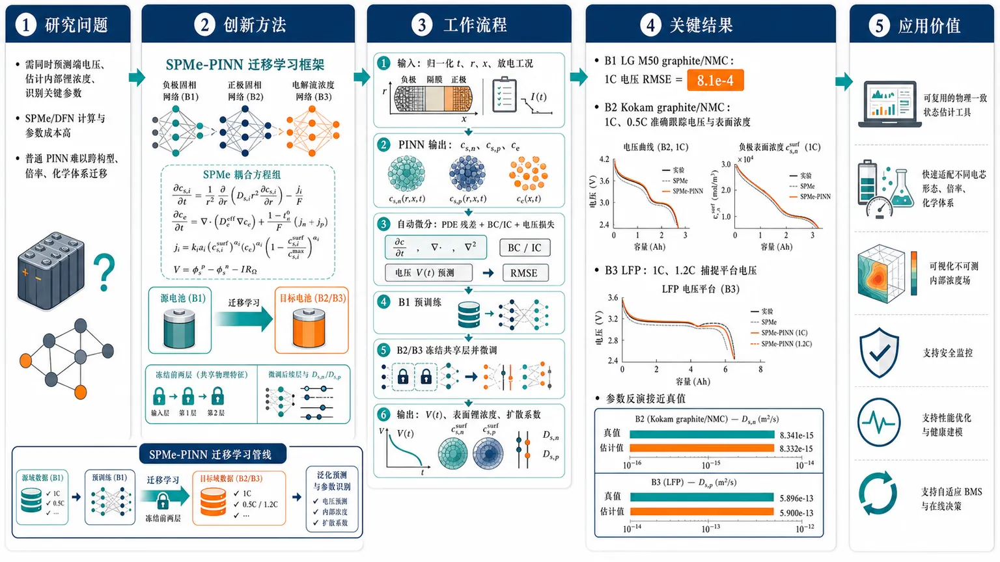
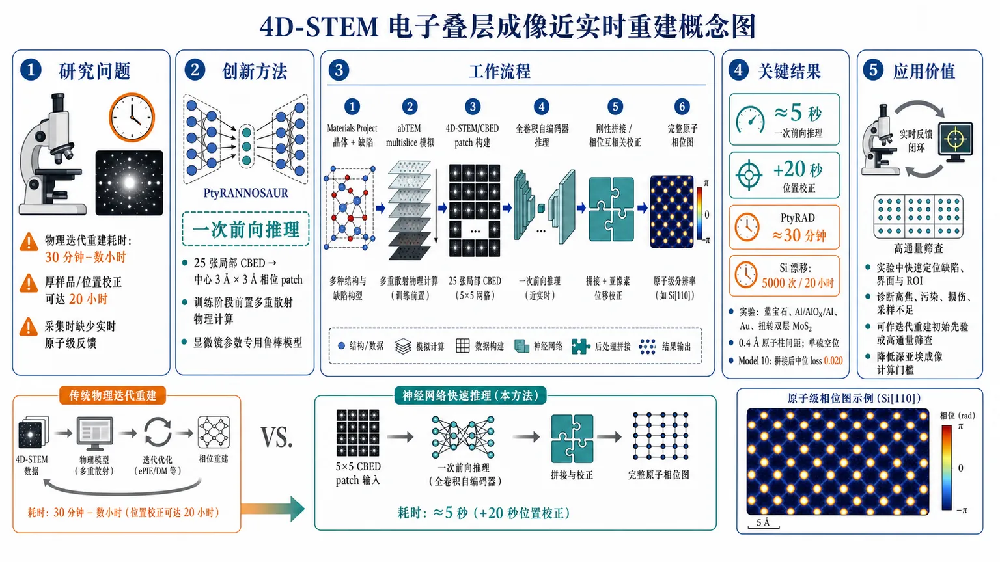
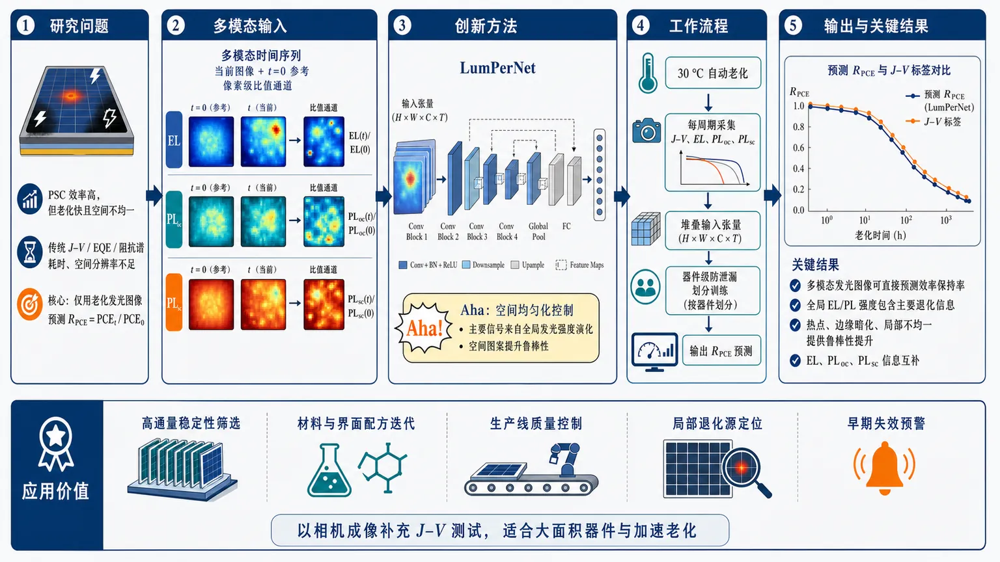

AI × Science 文献日报 2026/06/29
聚焦 AI × 物理 / 化学 / 材料交叉方向，自动过滤明显偏题的医学、教育与社会科学内容，并按主题重新排版，便于快速深读。
AI | 物理 | 化学 | 材料 | 交叉学科 | arXiv | 预印本追踪
原始候选 198 篇中，已剔除 0 篇明显偏离主线的内容，并从剩余 198 篇主线相关文献中精选 60 篇进入日报页，优先保留 AI × 物理 / 化学 / 材料交叉与关键计算方法工作。
核心关注（ML × ferro / 凝聚态）
8 篇今天的实质进展不在 NbOI2、CrI3、CrSBr、BaTiO3 等具体铁电/磁性材料的 DFT+U、equivariant GNN、MACE、NEP 势能面，而在实验/量子数据到物性判别的端到端模型。拓扑相识别采用浅层混合量子-经典网络提高测量样本效率；4D-STEM 叠层成像用卷积自编码器把晶体数据库训练迁移到亚埃相位重建。钙钛矿太阳能电池和介电电容器工作把多模态发光时序、材料成分设计接到效率、退化、热稳定指标；PINN 类论文把电池电化学 PDE 与 Calderón 电导率锐界面反演纳入物理约束学习。
-
01混合量子经典网络识别拓扑相Hybrid quantum-classical neural network for sample-efficient recognition of topological phases
📄 摘要：面向量子计算输出态的全局拓扑性质识别，构建混合量子-经典神经网络，目标是在较少测量次数下处理量子态，同时避免深量子神经网络对当前硬件不友好的深线路需求。摘要强调样本效率与可实现浅线路，用于区分拓扑相。
💡 亮点：混合量子-经典网络把拓扑相识别从大量测量后处理转向量子态直接处理。浅线路设计更贴近近期量子硬件，对量子多体相分类有方法学价值。
📐 方法要点：浅层量子线路提取态特征，经典网络判别拓扑相
🔗 相关工作关联：呼应拓扑相分类、量子态测量压缩、变分量子分类器
💡 对你方向的启示：给量子模拟和磁性拓扑材料读出提供低测量量判别范式
-
02亚埃精度超快叠层成像神经网络PtyRANNOSAUR: Ptychography with Robust Artificial Neural Networks Optimized for Sub-Angstrom Accuracy and Ultrafast Reconstruction
📄 摘要：PtyRANNOSAUR 用卷积自编码器把 4D 扫描透射电镜叠层数据映射为二维相位图像，重建原子分辨率数据仅需数秒，比标准方法快 10–100 倍。模型按加速电压、会聚角、离焦和样品厚度等实验参数，在大规模晶体结构数据库上训练。
💡 亮点：PtyRANNOSAUR 将电子叠层成像重建压缩到秒级，同时面向不同电镜参数训练专用模型。它把高通量 4D-STEM 原子结构解析推进到实时或近实时分析。
📐 方法要点：卷积自编码器将4D-STEM叠层数据秒级映射为相位图
🔗 相关工作关联：呼应电子叠层成像、神经重建、晶体结构数据库预训练
💡 对你方向的启示：可把铁电畴壁、极化位移和缺陷的原子级表征推向在线分析
-
03机器学习量化钙钛矿电池退化Quantifying Perovskite Solar Cell Degradation via Machine Learning from Spatially Resolved Multimodal Luminescence Time Series
📄 摘要：针对钙钛矿太阳能电池运行稳定性，利用空间分辨多模态发光时间序列训练深度学习框架，估计器件效率和健康状态。方法针对传统光照 J–V 扫描耗时且缺乏空间退化信息的问题，实现非侵入式、成像驱动的局域退化诊断。
💡 亮点：多模态发光时间序列被直接映射到钙钛矿电池效率与健康状态。相较整体 J–V 扫描，该方法保留空间退化信息，适合器件老化机理和在线质控。
📐 方法要点：多模态发光空间时序深度学习估计效率与健康状态
🔗 相关工作关联：呼应钙钛矿退化诊断、光致发光成像、时空序列学习
💡 对你方向的启示：提示凝聚态器件研究应从单点曲线转向局域退化动力学建模
-
04真实时间序列的量子扩散生成模型Quantum Generative Diffusion Model for Real-World Time Series
📄 摘要：QDiffusion-TS 将经典扩散时间序列生成框架中的前馈模块替换为量子机器学习组件，并在 IQM 量子处理器上验证。目标是用更紧凑的量子模型表示复杂时间序列分布，降低大规模生成模型的计算成本与参数规模。
💡 亮点：QDiffusion-TS 把扩散生成模型扩展到量子时间序列合成，并在 IQM 处理器上运行。它展示了量子生成模型处理真实序列数据的可行路径。
📐 方法要点：以量子机器学习模块替换扩散模型时间序列前馈网络
🔗 相关工作关联：呼应量子生成模型、扩散时间序列、参数高效生成建模
💡 对你方向的启示：为磁滞回线、相变噪声和泵浦探测时序生成提供量子压缩基线
-
05神经网络制备谐振子任意量子态Arbitrary state preparation in quantum harmonic oscillators using neural networks
📄 摘要：针对与辅助量子比特耦合的量子谐振子，提出任意目标态的制备方法。量子比特和谐振子由两束具有时间依赖相位调制的激光驱动，神经网络优化调制时间与相位，保证目标态在物理上可制备，面向高维量子算法和量子位操控。
💡 亮点：神经网络优化相位调制激光，实现谐振子任意态制备的通用控制方案。该框架适合连续变量量子信息和高维量子算法中的态初始化。
📐 方法要点：神经网络优化激光相位与时长，制备谐振子任意目标态
🔗 相关工作关联：呼应量子最优控制、连续变量量子态制备、神经脉冲设计
💡 对你方向的启示：可借鉴到声子、腔模和极化激元态的可达性约束优化
-
06迁移 PINN 估计锂离子电池状态Physics-Informed Neural Network with Transfer Learning for State Estimation in Lithium-Ion Batteries using the Single Particle Model with Electrolyte
📄 摘要：针对含电解质单颗粒模型的锂离子电池状态估计，采用带迁移学习的 PINN 求解非线性偏微分方程。物理守恒约束写入损失函数，以替代有限差分、有限体积和有限元等高成本离散数值法，目标是提升电化学模型求解的可扩展性。
💡 亮点：迁移学习 PINN 被用于含电解质单颗粒电池模型的状态估计。它把电化学守恒约束融入网络训练，可降低非线性电池模型反复求解成本。
📐 方法要点：迁移PINN求解含电解质单颗粒模型的非线性PDE
🔗 相关工作关联：呼应电化学模型降阶、物理约束学习、电池状态估计
💡 对你方向的启示：对铁电畴演化和离子迁移模型可复用守恒约束加迁移训练
-
07机器学习指导高效稳定介电储能Machine Learning‐Guided High‐Efficiency and Thermally Stable Capacitive Energy Storage in Dielectric Capacitors With a Simple Chemical Composition
📄 摘要：报道机器学习指导的介电电容器材料设计，目标是在简单化学组成中实现高效率和热稳定的电容储能性能。摘要仅给出题名与期刊早期在线信息，未披露具体化学体系、储能密度、效率或温度窗口等数值。
💡 亮点：机器学习被用于筛选简单组成的介电储能材料，目标同时优化效率与热稳定性。若具体实验指标成立，将有助于减少复杂多组元电容陶瓷的经验搜索。
📐 方法要点：机器学习筛选简单组成介电电容器的效率与热稳定性
🔗 相关工作关联：呼应介电储能材料发现、成分-性能映射、主动学习筛选
💡 对你方向的启示：缺少体系和数值时应重点追踪特征构造、实验闭环和失效样本
-
08PINN 恢复尖锐电导率特征Recovering Sharp Conductivity Features in the Finite-Data Calderón Problem with Physics-Informed Neural Networks
📄 摘要：面向有限边界数据的 Calderón 电导率反问题，引入随机小波函数构造多尺度边界激励，并考察傅里叶特征编码对尖锐电导率变化的表示能力。未知电导率及电势族由物理约束网络共同表征，用于改善有限数据条件下的锐界面重建。
💡 亮点：随机小波边界激励与傅里叶特征编码结合，提升 PINN 对尖锐电导率结构的恢复能力。该框架对有限数据电阻抗成像和材料无损反演具有直接关联。
📐 方法要点：随机小波边界激励加傅里叶特征PINN重建锐电导率
🔗 相关工作关联：呼应Calderón反问题、多尺度表示、有限数据物理反演
💡 对你方向的启示：适合迁移到畴壁、相界和导电细丝等锐界面场反演问题
今日摘要
总览：今日文献主轴集中在物理约束机器学习与磁性拓扑输运：物理信息神经网络用于含电解质单粒子锂电模型状态估计、有限数据卡尔德隆电导率反演与李群对称偏微分方程学习，神经网络还进入亚埃级叠层衍射成像、钙钛矿太阳能电池多模态发光退化诊断、量子谐振子态制备和变分量子线路参数学习。凝聚态部分由交替磁体强势占据，体系横跨氟化亚铁、碲化锰、二维五角晶格交替磁体与约瑟夫森结，现象包括非相对论电荷－自旋转换、磁振子劈裂、多光子自旋劈裂指纹、体相g波交替磁性光学响应、自旋分流磁阻和无外场横向约瑟夫森二极管效应。
热点：交替磁体自旋电子学 → 用磁群对称性、多极矩定量序参量、应变选择规则和非线性光谱解析动量依赖自旋劈裂 → 典型工作为氟化亚铁磁振子劈裂争议、碲化锰体相g波交替磁性光学信号、二维五角交替磁体应变调控自旋－动量锁定以及交替磁体巨型无场横向约瑟夫森二极管效应。物理约束人工智能 → 将守恒律、单粒子含电解质电池模型、卡尔德隆逆问题和李群对称性写入神经网络损失或迁移学习流程 → 典型工作为锂离子电池状态估计、尖锐电导率特征恢复、初边值问题李对称求解、钙钛矿太阳能电池空间分辨发光时序退化量化和亚埃叠层衍射快速重构。强关联与低维量子物态 → 围绕莫尔伊辛双层、超曲率二维晶格、费米－哈伯德梯子、s=1 kagome晶格和铈铑锗量子临界铁磁体，利用矩阵乘积态、有效自旋模型和临界散射分析液态无序、有限温长程序、近藤效应与受挫梯子中自旋1/自旋2竞争。非互易与超导量子器件 → 谷极化体系电流诱导再入超导、极端超导二极管效应、环境磁场下超导电路磁通俘获消除、非线性响应测量本征弛豫率和自由空间光量子网络，共同指向低温量子器件中对称性破缺、耗散与可扩展互连的联合控制。
今日文献
60 篇 · 6 含图深析-
01
📊 含图深析
📄 摘要：面向量子计算输出态的全局拓扑性质识别，构建混合量子-经典神经网络，目标是在较少测量次数下处理量子态，同时避免深量子神经网络对当前硬件不友好的深线路需求。摘要强调样本效率与可实现浅线路，用于区分拓扑相。
💡 亮点：混合量子-经典网络把拓扑相识别从大量测量后处理转向量子态直接处理。浅线路设计更贴近近期量子硬件，对量子多体相分类有方法学价值。
📖 展开分析 + 配图

研究问题如何在缺乏局域序参量的量子多体系统中，用尽可能少的测量 shots 识别拓扑相；核心瓶颈是表面码相、对称性富集拓扑相等全局拓扑信息隐藏在非局域相关里，随机 Pauli 测量和 classical shadows 需要大量样本才能把这些全局特征从 bit string 中分辨出来。创新方法提出“浅层参数化量子线路 + 计算基测量 + 经典前馈神经网络”的混合架构；Aha 点是让量子线路先学习一个非局域测量基变换，把原本重叠的两类测量分布拉开，再由经典网络近似 Bayes 最优分类器。外循环优化量子线路以最大化两相测量分布的 Jensen-Shannon 距离，内循环训练经典网络分类 bit strings。工作流程输入待识别量子态；浅层量子线路 U(φ) 由 Ry 旋转和受控相位门组成，对态执行可训练的非局域基变换；随后在计算基测量得到 0/1 bit string；经典前馈网络读取 bit string，输出属于目标拓扑相的置信度 y；训练时先固定量子线路优化经典网络，再根据残差损失更新量子线路参数，循环直到两类测量分布重叠区域缩小。关键结果在 N=25 表面码相 vs 1-design 任务中，量子线路含 109 个参数、经典网络含 128 个隐藏节点；联合训练后分类误差从随机量子线路下的 23±3% 降至 1.6±0.4%。多 shot 推理中，5 shots 使拓扑态假阴性率低于 0.01%，7 shots 使随机积态假阳性率低于 0.01%。在表面码相 vs 对称性富集拓扑相任务中，13 shots 即可使假阳性和假阴性率均低于 0.01%。整体训练与推理样本复杂度相比随机 Pauli 测量经典网络约降低一个数量级。应用价值为近端量子设备上的复杂量子态表征提供浅线路方案，可用于低测量成本识别拓扑相、检测非局域量子相关、辅助量子模拟输出认证和量子纠错相关态诊断；它避免深量子神经网络的硬件负担，也避免只依赖局域序参量的“容易分类”捷径。第一部分：核心概览 (Overview)
提出一种浅层量子线路 + 测量 + 经典前馈神经网络的混合模型，用可训练非局域测量基变换提升拓扑相识别的统计可分性。模型在表面码拓扑相、对称性富集拓扑相、随机积态 1-design 之间实现低样本分类，相比基于随机 Pauli 测量的经典网络，将训练与推理样本复杂度约降低一个数量级。其关键地位在于把原本依赖深量子神经网络或高测量成本经典后处理的拓扑相识别，推进到可在近端量子设备上执行的浅线路范式。
---
第二部分：结构化快速回顾
《Hybrid quantum-classical neural network for sample-efficient recognition of topological phases》（None，）
背景
量子计算机已能生成经典计算难以完整描述的多体量子态，复杂量子态的全局性质表征成为瓶颈。拓扑相缺乏局域序参量，传统随机测量和 classical shadows 在全局观测量上样本复杂度过高。
方法
构建混合量子-经典神经网络：先用浅层参数化量子线路 (U(φ)) 对输入态进行非局域测量基变换，再在计算基测量，最后用经典前馈网络对 bit string 分类。训练采用双循环：内循环优化经典网络，外循环用 evolution strategy 优化量子线路参数，使不同相的测量分布 Jensen-Shannon 距离增大。
结果
在 (N=25) 表面码任务中，训练态为 (h=0,0.1,0.2)，量子线路含 (K=109) 参数，经典网络含 (n=128) 隐藏节点。训练后误差从随机量子线路下的 ((23±3)%) 降至 ((1.6±0.4)%)。多 shot 推理中，5 shots 即使拓扑态假阴性率低于 (0.01%)，7 shots 使随机积态假阳性率低于 (0.01%)。
讨论
经典网络近似 Bayes 最优分类器，性能受测量分布重叠限制；量子线路通过学习非局域基变换降低分布重叠，从而降低 Bayes error。该机制尤其适用于拓扑相，因为拓扑信息通常编码在非局域相关中。
局限
数值实验规模为 (N=24,25)，训练依赖监督标注态；量子线路优化存在局部极小，20 个随机初始化之间有波动；在对称性富集拓扑相任务中，训练线路尚未达到已知逆制备线路的最优成本。
结论
浅层可训练量子线路与经典网络联合训练可实现样本高效拓扑相识别，避免深量子神经网络的硬件负担，并在缺乏局域序参量的数据集上显示出优于随机 Pauli 测量经典方案的样本效率。
---
第三部分：逐章节冷凝解析 (Section-by-Section Condensing)
Abstract
- Measurement bottleneck for global quantum-state characterization
量子计算机成熟后，直接测量加经典后处理在表征输出量子态全局性质时变得不可行，核心障碍是测量成本随问题复杂度快速增长。摘要直接指出：*"standard methods for characterizing global properties of their output quantum states via direct measurements and classical post-processing are becoming increasingly impractical due to large measurement costs."*
- Hybrid architecture with shallow quantum circuit
方案由三部分组成：浅层参数化量子线路、测量、经典神经网络。关键不是用深量子网络端到端分类，而是让浅量子线路改变测量基，再让经典网络处理 bit strings。对应表述为：*"we introduce a hybrid quantum-classical neural network that consists of a shallow parameterized quantum circuit, measurements, and a classical neural network."*
- Trainable nonlocal measurement-basis transformation
参数化量子线路承担核心物理功能：执行非局域测量基变换，并与经典网络联合训练，使不同量子态测量数据的统计距离最大化。关键句为：*"The parameterized quantum circuit performs a nonlocal transformation of the measurement basis, which is jointly trained with the classical neural network to maximize the statistical distance between data obtained by measuring different quantum states."*
- Topological phase recognition with sample advantage
监督学习结果覆盖三类区分任务：表面码拓扑相、对称性富集拓扑相、随机积态。相对基于 randomized Pauli measurements 的经典神经网络，训练与推理样本复杂度约降低一个数量级：*"this hybrid neural network reduces both inference and training sample complexities of recognizing the topological phase by approximately one order of magnitude compared to a classical neural network trained on randomized Pauli measurements."*
---
I Introduction
- Quantum-state characterization has become a central near-term challenge
近期量子计算进展使设备能够生成经典计算机难以完整描述的量子态，复杂输出态的表征成为核心问题。关键依据是：*"quantum computers can now generate quantum states, which can no longer be fully described by classical computers, making the characterization of such complex quantum states a key challenge."* 这一定义了研究位置：不是单纯分类算法，而是面向量子设备输出态认证与表征。
- Classical shadows work locally but fail globally
Classical shadows 能高效表征许多局域性质，但对全局观测量样本复杂度不可行。原文明确区分局域与全局：*"many local properties of quantum states can be efficiently characterized via classical shadows based on randomized measurements, this approach faces an unfeasible sample complexity for global observables."* 拓扑相识别恰属于全局/非局域信息提取问题。
- Quantum processing before measurement is a promising alternative
在测量前继续用量子计算机处理态，可降低表征成本；相关方向包括 quantum principal component analysis、quantum autoencoders、Hamiltonian dynamics certification、quantum reservoir processing。原始句子为：*"An attractive alternative is to process prepared quantum states further on a quantum computer to enable a more efficient characterization."*
- Topological many-body states motivate the benchmark
量子多体态，尤其是凝聚态模拟输出，是近端量子计算的重要应用。二维及更高维系统经典数值方法困难，拓扑多体系统又是活跃研究对象。证据为：*"One often aims to analyze quantum many-body states generated as the output of condensed matter simulations, a promising near-term application for quantum computers, especially for two- and higher-dimensional systems that are hard to simulate using classical numerical methods."*
- Topological phases are hard because no local order parameter exists
拓扑相的关键难点是缺乏局域序参量，导致普通局域测量和经典机器学习很难低样本识别。原文直接指出：*"topological phases, which have already been realized on quantum computers, are especially difficult to characterize due to the absence of local order parameters."*
- Core proposal targets the open challenge with a shallow hybrid network
混合网络如 Fig. 1：浅层参数化量子线路、测量、经典前馈网络。功能是通过变分优化实现非局域测量基变换，提高相识别。关键描述：*"we address this open challenge by introducing a hybrid neural network, depicted in Fig. 1, that consists of a shallow parameterized quantum circuit, measurements and a classical feedforward neural network."*
- Two-loop optimization jointly trains quantum and classical parts
训练不是固定量子特征提取器，而是联合优化。内循环训练经典网络，外循环优化量子线路以降低 residual cost。Introduction 中概括为：*"To jointly train the parameterized quantum circuit and the classical neural network, we develop a two-loop optimization procedure."*
- Benchmark deliberately avoids locally easy datasets
很多量子神经网络此前在“局域容易”数据集上测试，即经典模型可利用局域序参量分类。该研究选择无局域序参量的任务，避免伪优势。原文批评为：*"quantum neural networks have been tested on ‘locally easy’ datasets that can be efficiently classified by classical models using information encoded in the local order parameters of topologically trivial phases."*
- Two hard datasets are used
第一个数据集：表面码拓扑基态 vs featureless 1-design 积态；第二个数据集：连接表面码相和对称性富集拓扑相的参数化态族。直接依据：*"we consider two datasets consisting solely of phases that lack local order parameters: the first comprises topological ground states of the surface code and the featureless 1-design of product states, while the second is formed by a parameterized family of states spanning the phase transition between the surface-code phase and the symmetry-enriched topological phase."*
- Hardware relevance comes from shallowness
相比量子卷积神经网络，混合模型量子线路更浅，因此更适合当前和近端设备。原文强调：*"Our hybrid neural network uses a much shallower quantum circuit than quantum convolutional neural networks."* 进一步指出深线路限制了已有研究：*"the deep circuits of the latter have limited their investigation mainly to classical numerical simulations."*
---
II Quantum-classical hybrid neural network
- Binary phase-recognition formulation
任务被形式化为两类量子相分类，标签 (L=0,1)。输入态 (|ψångle) 经 (U(φ)) 后全量子比特在计算基测量，得到 bit string (x=x₁ₓ₂łdots x_N)。关键句为：*"we consider the task of distinguishing two quantum phases with labels (L=0,1) from one another."*
- Classical network output is a confidence score
前馈网络将每个测量 bit string 映射到 (y(x)in[0,1])。(y(x)) 是属于 (L=1) 的置信度，(1-y(x)) 是属于 (L=0) 的置信度。原文为：*"The output (y(x)) corresponds to the confidence score of phase (L=1), whereas (1-y(x)) is the confidence score of phase (L=0)."*
- Parameterized circuit gate set is hardware-friendly
量子线路由单量子比特 (R_y(φⱼ₎₌exp(-ifracφⱼ2Y)) 和双量子比特 controlled phase gates (CZ(φⱼ₎) 组成，所有门独立参数化。原文细节为：*"The parameterized quantum circuit consists of single-qubit rotations (R_y(φⱼ₎₌exp(-ifracφⱼ2Y)) with angles (φⱼ) and Pauli operator (Y), and two-qubit controlled phase gates with phases (φⱼ)."* 硬件可行性由：*"These parameterized gates can be natively implemented on superconducting quantum processors."*
- Classical feedforward network architecture is minimal but nonlinear
经典网络包括：输入层 (N) 个节点、一个 fully-connected hidden layer、隐藏节点数 (n)、ReLU 激活、单输出 sigmoid。原文为：*"The classical feedforward neural network, in turn, comprises an input layer with (N) nodes, a hidden fully-connected layer with (n) nodes and rectified linear unit activation functions, and an output layer with a single node using a sigmoid activation function."*
- Training data are grouped by quantum states and labels
对每个相 (L=0,1)，训练集含 (M_L) 个量子态 (|ψ_L⁽m⁾ångle)，其中 (m=1,łdots,M_L)，且 (M₀≠ M₁) 允许存在。原文为：*"For each phase (L=0,1), the training data comprise (M_L) quantum states (|ψ_L⁽m⁾ångle), where (m=1,2,łdots,M_L) and (M₀≠ M₁) in general."*
- Loss function balances phases and states
训练目标是二元交叉熵 (C)，对不同相按 (1/(2M_L)) 加权，对每个态的测量集合 (D_L⁽m⁾) 平均，避免类别样本数不平衡直接主导 loss。核心公式对应：*"The hybrid neural network is trained by minimizing the binary cross-entropy cost function (C) ... with respect to (φ) and (w)."*
- Two-loop optimization separates classical fitting and quantum-basis optimization
Algorithm II：随机初始化 (φ⁽¹⁾,w⁽¹⁾)；每轮用 (U(φ⁽k⁾)) 处理训练态并测量；内循环训练经典网络得到 (C⁽k⁾ₘ̊ ᵣₑₛ=min_w C⁽k⁾)；外循环估计 (grad_φ Cₘ̊ ᵣₑₛ⁽k⁾)，用学习率 (α) 更新量子参数。原文概括：*"In the inner loop, we train the classical neural network on datasets of bit strings ... In the outer loop, we minimize the residual cost (Cₘ̊ ᵣₑₛ=min_w C) with respect to the parameters (φ) of the quantum circuit."*
- Simulation and optimization tools are specified
量子态处理数值模拟使用 QuTiP；量子线路外循环使用 evolution strategy optimizer；经典网络内循环使用 Keras API integrated in TensorFlow。精确证据包括：*"we use the QuTiP Python package"*、*"we choose the evolution strategy optimizer"*、*"we use the Keras API integrated in TensorFlow."*
- Mean network output corresponds to an observable expectation value
单个 bit string 到 (y(x)) 是非线性的，但平均输出 (bary) 在无限 shot 极限下等于某个量子观测量 (O) 的期望值：
(O=sumₓᵢₙ₀,₁^N y(x)U^dagger(φ)|xånglełangle x|U(φ))。
原文为：*"the mean output (bary) corresponds to an expectation value ... of the quantum observable (O)."* 这说明网络推理结果仍可理解为对一个由量子线路和经典后处理共同定义的观测量的估计。
---
III Working principles of the hybrid neural network
- Classical network approximates posterior probability
固定量子线路参数时，经典前馈网络学习 (yₘ̊ ₒₚₜ(x)=P₁₍ₓ₎/(P₀₍ₓ₎₊P₁₍ₓ₎₎)，即在两相均匀采样前提下，bit string (x) 来自 (L=1) 的后验概率。原文为：*"The feedforward neural network estimates the probability (y(x)approx yₘ̊ ₒₚₜ(x)=fracP₁₍ₓ₎P₀₍ₓ₎₊P₁₍ₓ₎) that the observed bit string (x) originates from phase (L=1)."*
- Measurement distributions are averaged over training states
(P_L(x)=frac1M_Lsumₘ₌₁M_LP_L⁽m⁾(x))，其中 (P_L⁽m⁾(x)=|łangle x|U(φ)|ψ_L⁽m⁾ångle|²)。原文给出：*"where (P_L(x)=frac1M_Lsumₘ₌₁M_LP_L⁽m⁾(x)), and (P_L⁽m⁾(x)=|łangle x|U(φ)|ψ_L⁽m⁾ångle|²)."*
- Residual cost equals log two minus Jensen-Shannon divergence
在网络足够表达、训练充分、shot 数趋于无穷时，残差成本接近 (Cₘ̊ ₒₚₜ=łn2-DJS[P₀,P₁])。关键句为：*"The residual cost (Cₘ̊ ᵣₑₛapprox Cₘ̊ ₒₚₜ=łn 2-DJS[P₀,P₁]) arises from the overlap between the probability distributions (P₀) and (P₁)."* 因此最小化 residual cost 等价于最大化两类测量分布的统计距离。
- Bayes error is controlled by total variation distance
最优分类误差为 (pₘ̊ ₒₚₜ=frac12(1-TV[P₀,P₁]))，其中 (TV[P₀,P₁]=frac12sumₓ|P₀₍ₓ₎₋P₁₍ₓ₎|)。原文为：*"The Bayes error rate (pₘ̊ ₒₚₜ=frac12(1-TV[P₀,P₁])) also stems from the overlap between the probability distributions (P₀) and (P₁)."*
- Topological data create large distribution overlap under naive measurement
拓扑相的非局域相关很难从普通测量结果直接估计，导致 (P₀) 与 (P₁) 高度重叠。原文指出：*"Large overlaps of probability distributions typically occur for topological phases whose characteristic nonlocal quantum correlations are hard to estimate from measurement outcomes (x)."*
- Quantum circuit’s role is to reduce Bayes limitation
参数化量子线路被训练来提高 (DJS[P₀,P₁])，从而降低 Bayes error。该机制用 Fig. 2 展示：随机初始化时与 featureless uniform distribution 重叠大，训练后灰色重叠区域显著缩小。原文总结为：*"the parameterized quantum circuit is trained to increase the statistical distance between the resulting measurement distributions, thereby reducing the Bayes error rate."*
- Division of labor is mathematically explicit
经典网络接近 Bayes 最优；量子线路改变数据生成分布本身。关键总结句为：*"the classical feedforward neural network estimates the probability (yₘ̊ ₒₚₜ(x)) and achieves an error rate close to the Bayes error rate, (pₘ̊ ₑᵣᵣapprox pₘ̊ ₒₚₜ), which is only limited by the statistical overlap of the measured data."*
---
IV Surface code in magnetic field
- Surface code Hamiltonian defines the topological target phase
表面码位于二维方格晶格，Hamiltonian 为
(Hₘ̊ SC=-sumₛ Aₛ₋sumₚ Bₚ)，
(Aₛ₌prodᵢᵢₙ ₛXᵢ)，(Bₚ₌prodᵢᵢₙ ₚZᵢ)。原文为：*"It is described by the Hamiltonian (Hₘ̊ SC=-sumₛ Aₛ₋sumₚ Bₚ), where (Aₛ₌prodᵢᵢₙ ₛXᵢ) and (Bₚ₌prodᵢᵢₙ ₚZᵢ)."*
- Open boundaries include weight-two stabilizers
除 bulk 中 weight-four operators 外，开放边界含 weight-two (Aₛ)、(Bₚ)。原文为：*"we consider open boundary conditions involving weight-two operators (Aₛ) and (Bₚ)."* 这与实际量子纠错码边界结构相关：*"such weight-two boundary operators are also common in quantum error correction codes."*
- Magnetic field drives second-order topological transition
加入 (Z) 向磁场：
(H=Hₘ̊ SC-hsumᵢ₌₁^N Zᵢ)。
系统从拓扑相进入拓扑平庸磁相。原文为：*"When perturbed by a magnetic field of strength (h), (H=Hₘ̊ SC-hsumᵢ₌₁NZᵢ), it undergoes a second-order phase transition from the topological phase to a topologically trivial magnetic phase."*
- Critical point for (N=25) is obtained by exact diagonalization
对经典可求解规模，通过基态能量二阶导数 (d²E/dh²) 的 dip 确定相边界。对 (N=25)，精确对角化给出 (h_c=0.3)。原文为：*"For (N=25), we find (h_c=0.3) via exact diagonalization."*
- Trivial magnetic phase is locally easy
(h>h_c) 的平庸相具有大磁化强度 (M=frac12Nsumᵢłangle Zᵢångle)，(h<h_c) 的拓扑相磁化小。由于磁化可被直接随机测量高效学习，这类任务不够困难。原文为：*"Since magnetization can be efficiently learned ... we expect that these ground states can be classified by classical machine learning models, similarly to locally easy datasets."*
- Hard benchmark replaces trivial magnetic phase with featureless 1-design
为避免局域捷径，分类任务设为表面码拓扑基态 (h<h_c) vs 1-design。1-design 满足
(frac1M₀sumₘ|ψ₀⁽m⁾ånglełangleψ₀⁽m⁾|=frac12^NI)。
原文为：*"we instead train it to distinguish the topological ground states ((h<h_c)) from a 1-design."*
- 1-design remains uniformly distributed under any unitary circuit
1-design 测量分布对任何 (U(φ)) 都是 (P₀₍ₓ₎₌₂⁻N)，因此模型必须学习表面码拓扑特征，而不能依赖 1-design 的某种可变换结构。原文为：*"the 1-design (|ψ₀⁽m⁾ångle) exhibits a featureless uniform distribution of measurement outcomes, (P₀₍ₓ₎₌₂⁻N) for all (x), after applying any parameterized circuit (U(φ))."*
- Product Pauli eigenstates provide the concrete 1-design
使用 (P_N={|0ångle,|1ångle,|+ångle,|-ångle,|+iångle,|-iångle}øtⁱmes N)，即 Pauli strings (X,Y,Zøtⁱmes N) 的本征态。原文为：*"The ensemble of product states (P_N=...), which are eigenstates of Pauli strings (X,Y,Zøtⁱmes N), is a prominent example of a 1-design."*
- 1-design data are sampled classically rather than processed quantumly
因为其输出分布始终均匀，1-design 态无需经量子线路处理；直接用伪随机数生成 (x)。原文为：*"these states do not need to be processed in the parameterized quantum circuit (U(φ)). Instead, we directly draw the measurement outcomes (x) from the uniform distribution (P₀₍ₓ₎) using a pseudorandom number generator."*
- Surface-code features are nonlocal and costly under classical shadows
拓扑纠缠熵和特征相关等非局域特征需要大量测量数据。原文指出：*"learning features of the surface-code phase, including the topological entanglement entropy and characteristic correlations, requires a large amount of measurement data, since these features are nonlocal."* 对 classical shadows，样本复杂度随相关长度指数增长：*"the sample complexity of learning the surface-code phase grows exponentially with the length of correlations in the system."*
- Inverse preparation circuit motivates learnable nonlocal basis
若有显式构造的逆制备线路，可变换到所有 (Aₛ,Bₚ) 的共同本征基，高效测量 Wilson loops。原文为：*"the non-trainable convolutional layer ... performs a transformation into the simultaneous eigenbasis of all (Aₛ) and (Bₚ) operators, enabling the efficient measurement of Wilson loops at all length scales."* 混合模型的目标是通过训练学习类似非局域基变换。
---
V Topological phase recognition
- Parameterized circuit is designed to include the inverse preparation circuit
量子线路结构被设计成在特定参数 (φₘ̊ ᵢₙᵥ) 下实现未扰动表面码 (h=0) 的逆制备线路，从而可与理想 stabilizer/Wilson-loop 测量基比较。原文为：*"We design the parameterized circuit such that, for a specific set of parameters (φₘ̊ ᵢₙᵥ), it implements the inverse of the preparation circuit for the unperturbed surface code ((h=0))."*
- Training set for surface-code phase is small but physically varied
表面码相训练数据 (L=1)：(N=25)，三个拓扑基态，(h=0,0.1,0.2)，即 (m=1,2,3)。原文为：*"The training data for the surface-code phase, (L=1), comprise three topological ground states ... for (N=25) qubits and field strengths (h=0,0.1,0.2)."*
- Quantum and classical model sizes are explicit
量子线路参数数 (K=109)，经典前馈网络隐藏节点数 (n=128)。原文为：*"The quantum circuit features (K=109) parameters."* 以及：*"We train the feedforward neural network with (n=128) hidden nodes."*
- Training uses large shot sets per state
每个表面码训练态测量 (|D₁⁽m⁾|=2¹⁶) bit strings，1-design 抽取 (3×2¹⁶) bit strings。经典网络第一轮训练 1000 epochs，后续每轮 10 epochs。原文为：*"for 1000 epochs in the first iteration ... and for 10 epochs in all subsequent iterations on (|D₁⁽m⁾|=2¹⁶) bit strings ... and (3×2¹⁶) bit strings drawn from the 1-design."*
- Outer-loop optimization converges within about 200 iterations
evolution strategy 外循环通常 200 次内收敛。20 个随机初始化下，残差成本为 (Cₘ̊ ᵣₑₛ=0.04±0.01)，变化来自 cost landscape 的局部极小。原文为：*"typically converges within 200 iterations to the residual cost (Cₘ̊ ᵣₑₛ=0.04±0.01) exhibiting variations across 20 random initializations ... due to local minima in the cost landscape."*
- Training sharply reduces distribution overlap and error
随机初始化量子线路仅训练经典网络时误差为 ((23±3)%)；联合训练后误差降至 ((1.6±0.4)%)。原文为：*"the error rate is reduced to (pₘ̊ ₑᵣᵣ=(1.6±0.4)%) from (pₘ̊ ₑᵣᵣ=(23±3)%)."* 这直接证明改变量子测量基是主要收益来源。
- Known inverse preparation circuit gives near-global optimum for (h=0)
若训练数据只含 (h=0) 基态，逆制备线路达到
(Cₘ̊ ₒₚₜ=fracłn22N2⁻N+O(2⁻N))，
(pₘ̊ ₒₚₜ=1/2N⁺¹)。对 (N=25)，(Cₘ̊ ₒₚₜ=3×10⁻⁷)，(pₘ̊ ₒₚₜ=10⁻⁸)。原文为：*"attain near-zero values (Cₘ̊ ₒₚₜ=3×10⁻⁷) and (pₘ̊ ₒₚₜ=10⁻⁸) for (N=25)."*
- For three-field training set, learned circuit is suboptimal but highly accurate
对 (h=0,0.1,0.2) 全训练集，逆制备线路达到 (Cₘ̊ ₒₚₜ=9×10⁻⁵)、(pₘ̊ ₒₚₜ=0.002%)；训练得到的线路最好 (Cₘ̊ ᵣₑₛ=0.02)、(pₘ̊ ₑᵣᵣ=0.7%)。原文为：*"both the inverse preparation circuit and the trained circuit facilitate the recognition of the surface-code phase with reduced error rates (pₘ̊ ₒₚₜ=0.002%) and (pₘ̊ ₑᵣᵣ=0.7%), respectively."*
- Generalization to unseen topological field strengths is strong
测试拓扑态为 (h=0.05,0.15,0.25)，训练未见。单 shot 假阴性率 (pₘ̊ fₙ=(1.6±0.4)%)，接近训练态 (pₘ̊ fₙ=(1.5±0.4)%)。原文为：*"showing that the trained hybrid neural network generalizes well to these topological test states."*
- Multi-shot inference needs only five shots for near-perfect topological classification
对具体随机初始化训练出的网络，使用 (Sₘ̊ ᵢₙf=|D₁⁽m⁾|) 个 shots 计算 (bary)。仅 (Sₘ̊ ᵢₙf=5) 即可使多 shot 假阴性率 (barpₘ̊ fₙ<0.01%)。原文为：*"As few as (Sₘ̊ ᵢₙf=5) shots are sufficient to achieve near-perfect classification, with (barpₘ̊ fₙ<0.01%)."*
- Random product states test whether genuine topological features were learned
测试 (10⁶) 个从 (P_N) 随机选取的积态。这些态拓扑平庸，且多数 (Aₛ,Bₚ) 乘积期望值为零。原文为：*"Next, we classify (10⁶) product states that are randomly chosen from the ensemble (P_N)."* 目的为：*"they enable us to test whether the hybrid neural network learned genuine features of the surface-code phase."*
- False positives on product states are low with few shots
随机积态单 shot 假阳性率 (pₘ̊ fₚ=2.4%)。多 shot 时仅需 (Sₘ̊ ᵢₙf=7) 即有 (barpₘ̊ fₚ<0.01%)。(Sₘ̊ ᵢₙf=10⁴) 时，(10⁶) 个随机积态中仅 2 个误分类。原文为：*"We achieve (barpₘ̊ fₚ<0.01%) with only moderately larger shot number (Sₘ̊ ᵢₙf=7)."* 以及：*"For (Sₘ̊ ᵢₙf=10⁴) shots, only two of the random product states are misclassified."*
- Classical-only retraining can adapt to trivial ground states
对 (h>h_c) 的拓扑平庸基态，只需重新训练经典前馈网络，不必重训量子线路。原文为：*"the network can also classify topologically trivial ground states for (h>h_c) after retraining only the classical feedforward neural network."*
---
VI Symmetry-enriched topological phase
- Second benchmark compares two nonlocally ordered phases
任务变为区分两个都缺乏局域序参量的拓扑相：表面码相与对称性富集拓扑相。原文为：*"We now use the hybrid neural network to distinguish two topological phases, which both lack local order parameters and thus require the detection of genuine topological features."*
- Tensor-network state family spans the transition
态族为
[
|ψångle=sumₓᵢₙ₀,₁^NtTr[Tx₁,x₂(g),łdots,TxN₋₁,x_N(g)]|xångle,
]
其中 (gin[-1,1])，张量为 rank-6。原文为：*"We consider rank-6 tensors (Txᵢ,xᵢ₊₁(g)), parameterized by a common parameter (gin[-1,1])."*
- Anti-unitary symmetry enriches the topological order
态族保持反幺正 (Z₂^T) 对称性，由全局 spin flip (prodᵢXᵢ) 与复共轭组成。原文为：*"These states respect the anti-unitary (Z₂^T) symmetry composed of the global spin flip (prodᵢ₌₁^N Xᵢ) and complex conjugation."*
- (g=1) is surface code; (g<0) is symmetry-enriched topological phase
(g=1) 与表面码 Hamiltonian 基态一致，但开放边界条件不同；(g<0) 为对称性富集拓扑相 Hamiltonian 的基态。原文为：*"The state for (g=1) coincides with the ground state of the surface-code Hamiltonian."* 以及：*"For (g<0), the states are ground states of a Hamiltonian exhibiting the symmetry-enriched topological phase."*
- Both phases have intrinsic (Z₂) topological order, but one is symmetry enriched
对称性富集相不只是“另一个平庸相”，而是在内禀 (Z₂) 拓扑序上额外携带 (Z₂^T) 对称性结构。原文为：*"Similarly to the surface code, they feature intrinsic (Z₂) topological order but are additionally enriched by the (Z₂^T) symmetry."*
- Known distinguishing observable is global membrane order parameter
表面码相 (g>0) 与对称性富集拓扑相 (g<0) 可由 membrane order parameter 区分；它是作用在 bulk 所有量子比特上的 (Xᵢ) 全局观测量。原文为：*"can be distinguished by a membrane order parameter, which is a global observable consisting of the (Xᵢ) operator on all qubits in the bulk of the system."*
- Numerical simulation uses exact preparation circuits for (N=24)
张量网络态通过 Ref. [24] 的精确制备线路模拟，系统规模 (N=24)。原文为：*"we use the exact preparation circuits for (N=24) qubits."*
- Training set contains five states per phase sampled over (g)
表面码相 (L=1)：5 个 (gin(0,1]) 状态；对称性富集拓扑相 (L=0)：5 个 (gin[-1,0)) 状态。原文为：*"The training data ... comprise five states ... with (g) values drawn from uniform distributions on the intervals ((0,1]) and ([-1,0)), respectively."*
- Training hyperparameters differ only slightly from the surface-code/1-design task
经典网络仍为 (n=128) 隐藏节点；第一轮 1000 epochs；后续每轮 30 epochs；每个态测量 (|D_L⁽m⁾|=2¹⁶) bit strings。原文为：*"we train the feedforward neural network with (n=128) hidden nodes for 1000 epochs in the first iteration ... and 30 epochs in all subsequent iterations on (|D_L⁽m⁾|=2¹⁶) bit strings measured for each state."*
- Training reaches nonzero but useful cost and error
训练后 (Cₘ̊ ᵣₑₛ=0.23±0.01)，误差 (pₘ̊ ₑᵣᵣ=(8.9±0.6)%)。已知逆制备线路更优，(Cₘ̊ ₒₚₜ=0.12)，(pₘ̊ ₒₚₜ=4.8%)。原文为：*"we reach the residual cost (Cₘ̊ ᵣₑₛ=0.23±0.01) and error rate (pₘ̊ ₑᵣᵣ=(8.9±0.6)%) whereas the inverse preparation circuit ... achieves a smaller cost (Cₘ̊ ₒₚₜ=0.12) and error rate (pₘ̊ ₒₚₜ=4.8%)."*
- Mean output separates phases across unseen (g) values
Fig. 4 中 (bary) 随 (g) 变化，训练点和未见测试点均被正确分类，阈值 (t=0.5)。原文为：*"the hybrid neural network correctly classifies all states, including states for (g) values unseen during training."*
- Only 13 shots reach near-perfect classification
对该更难任务，训练后的混合网络仍以 13 shots 达到 (barpₘ̊ fₚ,barpₘ̊ fₙ<0.01%)。原文为：*"the trained hybrid neural network achieves near-perfect classification, with (barpₘ̊ fₚ,,barpₘ̊ fₙ<0.01%) with only 13 shots."*
---
VII Sample complexity of the topological phases
- Section content is truncated in the supplied manuscript text
可用内容只保留标题和开头：*"VII Sample complexity of the topological phases Finally, we benchmark the h"*。因此无法可靠提取该节的完整方法、数值、图表与结论。
- Sample-complexity claim is already stated in Abstract and Introduction
可确证的总括结论是：混合网络相对基于 randomized Pauli measurements 的经典前馈网络，将训练与推理样本复杂度约降低一个数量级。摘要表述为：*"reduces both inference and training sample complexities ... by approximately one order of magnitude compared to a classical neural network trained on randomized Pauli measurements."* Introduction 也给出：*"It thus outperforms existing approaches in these aspects."*
---
第四部分：深度理解与语言支持 (Understanding & Nuance)
1. 术语解析
- Sample-efficient recognition
字面是“样本高效识别”，在这里不是指模型参数少，而是指达到给定分类错误率所需的量子测量 shots 数和训练测量数据量更少。语境中与 randomized Pauli measurements 对比，强调测量成本下降约一个数量级。
- Nonlocal transformation of the measurement basis
指量子线路在测量前把原本难以从局域计算基读出的拓扑相关，转化为更容易在 bit strings 分布中显现的结构。这里的 nonlocal 不是说每个量子门都是长程门，而是整体线路实现的信息重排涉及多体相关。
- Featureless 1-design
1-design 是一组态的平均密度矩阵等于最大混合态。featureless 强调其测量分布在任意幺正变换后仍等效均匀，不能提供局域或非局域可利用结构。用它作为负类，可迫使分类器学习表面码相的真实拓扑特征。
- Residual cost
(Cₘ̊ ᵣₑₛ=min_w C)，即在固定量子线路参数 (φ) 后，把经典网络训练到最优时剩下的 cost。它反映的不是经典网络没训练好，而是当前测量基下两类分布 (P₀,P₁) 本身的重叠程度。
- Symmetry-enriched topological phase
与普通拓扑相一样具有内禀拓扑序，但额外受某个全局对称性保护或修饰。这里是 (Z₂^T) 反幺正对称性。两个相都没有局域序参量，所以比“拓扑相 vs 平庸相”更能检验模型是否学到全局拓扑结构。
2. 疑难查证
- 为什么经典神经网络接近 Bayes 最优仍然不够？
固定测量方式后，所有信息都压缩到 bit string 分布 (P₀₍ₓ₎,P₁₍ₓ₎)。即使经典网络无限强，也只能实现
[
yₘ̊ ₒₚₜ(x)=fracP₁₍ₓ₎P₀₍ₓ₎₊P₁₍ₓ₎.
]
如果两个分布高度重叠，同一个 (x) 可能同时常见于两类态，任何分类器都无法可靠判断来源。此时错误下限由 total variation distance 决定：
[
pₘ̊ ₒₚₜ=frac12(1-TV[P₀,P₁]).
]
所以真正突破点不在于把经典网络做大，而在于用量子线路改变测量分布，使拓扑信息显性化。
- 为什么浅层量子线路能帮助识别拓扑相？
拓扑信息通常表现为 Wilson loops、膜序参量、长程纠缠等非局域结构。直接计算这些量需要大量测量设置和 shots。若测量前施加一个近似“逆制备”或“稳定子本征基变换”的量子线路，这些非局域结构会转化为计算基 bit strings 中更容易识别的模式。经典网络随后只需学习这些模式对应的后验概率。
- 为什么 1-design 是严格的困难负类？
若负类是高磁化平庸相，模型可能只学 (łangle Zᵢångle) 这样的局域特征。1-design 的平均态是 (I/2^N)，任意量子线路后测量分布仍均匀。负类没有可利用结构，分类成功只能来自正类表面码态在训练后测量基中的非均匀拓扑特征。
- 为什么对称性富集拓扑相任务更强？
表面码相和对称性富集拓扑相都具有内禀 (Z₂) 拓扑序，二者都没有局域序参量。区分它们需要识别额外对称性结构或全局 membrane order parameter，而不是判断“有没有拓扑序”。因此该任务比“拓扑相 vs 随机积态”更接近真实凝聚态分类难题。
---
第五部分：创新评估与关联 (Synthesis & Novelty)
1. 创新性判断
- 从深量子神经网络转向浅量子特征变换
过去量子卷积神经网络常依赖较深线路，二维拓扑系统应用多停留在理论或经典模拟层面。该方案把量子部分压缩为浅层参数化线路，主要负责学习测量基变换，把复杂分类交给经典网络，显著提高硬件可执行性。
- 优化目标直接对应统计分布可分性
关键理论连接是
[
Cₘ̊ ᵣₑₛapprox łn2-DJS[P₀,P₁].
]
因而外循环训练量子线路不是黑箱调参，而是在最大化不同相测量分布的 Jensen-Shannon divergence。该解释把混合神经网络的作用机制与 Bayes error、total variation distance 明确联系起来。
- 避开“locally easy”基准的伪优势
近年许多量子机器学习相识别任务可由局域序参量解决，难以证明量子处理必要性。这里使用 1-design 随机积态和对称性富集拓扑相作为对照，二者均削弱局域捷径，迫使模型依赖非局域拓扑特征。
- 同时降低训练与推理样本复杂度
不只是单次推理 shots 少，也包括训练样本复杂度下降。相对 randomized Pauli measurements + classical neural network，降低约一个数量级。对于量子设备实验，训练数据采集成本往往比模型计算更昂贵，因此这一点具有实际实验意义。
- 提供可解释的量子-经典分工
经典网络学习 (P₁/(P₀₊P₁₎)，量子线路学习让 (P₀,P₁) 更分离。该分工比“量子神经网络可能更强”的泛泛说法更清晰，也更容易迁移到其他复杂量子态表征任务。
- 解决的前人未充分解决问题
前人方案常面临三类限制：
- classical shadows 或 randomized measurements 对全局拓扑观测量样本复杂度高；
- quantum convolutional neural networks 线路深，不适合当前二维量子设备；
- 许多 benchmark 存在局域序参量捷径。
该混合方案同时针对这三点：浅线路可运行、训练目标面向非局域分布分离、基准任务缺乏局域序参量。
-
02
📄 摘要：QDiffusion-TS 将经典扩散时间序列生成框架中的前馈模块替换为量子机器学习组件，并在 IQM 量子处理器上验证。目标是用更紧凑的量子模型表示复杂时间序列分布，降低大规模生成模型的计算成本与参数规模。
💡 亮点：QDiffusion-TS 把扩散生成模型扩展到量子时间序列合成，并在 IQM 处理器上运行。它展示了量子生成模型处理真实序列数据的可行路径。
📖 展开分析 + 配图

研究问题如何在真实金融时间序列这种非平稳、厚尾、波动聚集且时间依赖复杂的数据上，用更少参数生成统计分布更真实的合成序列，并验证近中期量子硬件是否能实际参与扩散模型推理。创新方法提出 QDiffusion-TS：把量子神经网络 QNN 嵌入扩散模型的反向去噪 Transformer，直接用参数化量子线路替换编码器和解码器中的经典 FFNN；每个前馈组件从 33,088 个参数压缩到 36 个量子可训练参数，形成“量子线路作为去噪器核心模块”的混合量子 Transformer。工作流程输入 Apple、Amazon 股票 open、close、high、low、volume 数据，转为 log-return 并标准化，切成长度 256 的重叠时间窗口；前向扩散逐步加入高斯噪声；反向阶段由含 QNN 的 Transformer 去噪，经典特征先降维/PCA，再经量子编码、量子线路变换和测量输出，最后逐步从纯噪声还原为合成金融时间序列；硬件验证在 IQM Emerald 上执行推理。关键结果QDiffusion-TS 在 Apple 和 Amazon 上生成的 log-return 分布更接近真实市场数据，平均 Wasserstein 距离相对经典 Diffusion-TS 降低约 44%；Amazon 降低约 51%，Apple 降低约 36%；方差复现精度平均提升约 63%；总参数从 589,030 降至 461,254；合成数据增强 BiLSTM 预测时，RMSE 最高改善约 71%；IQM 硬件推理中 Wasserstein 距离相对经典模型平均降低约 89%。应用价值为金融时间序列生成提供低参数、高统计保真度的数据增强工具，可生成更贴近当前市场分布的合成样本，帮助价格预测模型在非平稳环境下提升泛化能力；同时证明量子神经网络可作为现代扩散 Transformer 的紧凑替代模块，为近中期量子硬件上的混合量子-经典生成建模提供可行路径。第一部分：核心概览
QDiffusion-TS 将量子神经网络（QNN）嵌入时间序列扩散模型的反向去噪 Transformer，用 36 个量子可训练参数替代每个 33,088 参数的经典 FFNN，在 Apple、Amazon 金融时间序列上实现更低分布距离，平均 Wasserstein 距离相对经典模型下降约 44%，并在 IQM 量子硬件上完成推理验证。其领域地位在于首次把量子扩散模型推进到真实金融时间序列生成，并展示参数效率、统计保真度与下游预测增益可同时成立。
---
第二部分：结构化快速回顾
《Quantum Generative Diffusion Model for Real-World Time Series》（None，）
背景
生成模型在图像与时间序列合成中表现突出，但依赖超大规模参数，带来计算成本、能耗与扩展性问题。金融时间序列具有非平稳性、厚尾分布、波动聚集和复杂时间依赖，是生成建模的高难度场景。
方法
QDiffusion-TS 基于 Diffusion-TS，将 Transformer 编码器和解码器中的前馈神经网络（FFNN）完全替换为参数化量子线路（PQC）构成的 QNN，形成混合量子 Transformer 去噪器。经典模拟使用 9 量子比特、振幅编码、real amplitudes ansatz；硬件验证使用角度编码、Pauli-Z 期望测量和 128 shots。
结果
在 Apple 和 Amazon 数据上，QDiffusion-TS 相比经典 Diffusion-TS 更好复现金融 log-return 分布，Wasserstein 距离平均降低约 44%。Amazon 上降幅约 51%，Apple 上约 36%。每个替换组件参数从 33,088 降至 36，总参数从 589,030 降至 461,254。
讨论
量子模型的优势主要来自更准确估计方差，从而改善 log-return 分布整体形状。下游预测中，量子与经典合成数据都显著提升 BiLSTM 预测性能，最高 RMSE 改善约 71%，峰值精度相近。
局限
低数据量场景未显示独特量子优势；硬件实验仅执行推理而非完整硬件训练；硬件实验序列长度缩短至 32；金融数据仅正文报告 Apple、Amazon，Microsoft 和 Google 放在补充材料中。
结论
QDiffusion-TS 证明了在近中期量子硬件约束下，QNN 可有效嵌入现代扩散 Transformer，以显著更少参数达到甚至超过经典时间序列生成模型的统计保真度，并为可扩展混合量子-经典生成建模提供实证路径。
---
第三部分：逐章节冷凝解析
Abstract
First quantum diffusion model for time series
QDiffusion-TS 被定位为首个面向时间序列合成的量子生成扩散模型，并在真实量子处理器上验证；摘要明确给出核心贡献：*"we propose QDiffusion-TS, the first quantum generative diffusion model for time series synthesis, and validate it on the IQM quantum processor."* 研究对象不是玩具分布，而是 Apple 和 Amazon 金融时间序列，强调真实世界数据生成。
Hybrid quantum transformer with large parameter compression
架构创新在于用 QNN 替换去噪 Transformer 内的前馈组件，形成混合量子 Transformer；每个被替换组件的可训练参数减少近三位数量级：*"replacing feed-forward components within the denoising transformer with quantum neural networks"*，并且 *"reduces the number of trainable parameters in each replaced component by nearly three orders of magnitude."*
Better distributional fidelity than classical counterpart
在 Apple 和 Amazon 金融时间序列上，QDiffusion-TS 生成数据更接近真实分布，核心量化指标是 Wasserstein 距离约下降 44%；摘要给出：*"reducing Wasserstein distance by approximately 44% relative to its classical counterpart across both datasets."*
Downstream forecasting utility
合成数据不仅分布相似，而且能提高预测任务性能；用生成数据增强训练后，RMSE 相对仅真实数据训练基线最高改善约 71%：*"augmentation with the generated data improves predictive performance by up to 71% in RMSE over a baseline trained solely on real data."*
Practical claim of parameter-efficient generative modelling
整体结论不是单纯量子优越性，而是少参数、可匹配、常超越经典性能：*"quantum enhanced architectures can consistently match and frequently surpass classical performance with substantially fewer parameters."*
---
1 Introduction
Scaling-driven success creates efficiency pressure
生成模型近年快速发展，尤其 VAE、GAN、扩散模型在图像生成上达到高度真实效果；但性能提升主要依赖模型容量和训练数据规模扩大。文本指出：*"these gains have been driven in large part by the increasing scale of model capacity and training data."* 典型例子包括 DALL·E 3 和 Stable Diffusion，规模达到十亿级参数：*"comprise billions of parameters"*，引发计算成本、能耗与社会影响担忧：*"raising concerns regarding computational cost, energy consumption, and further societal implications."*
Time series generation is harder than simple sampling
时间序列生成要求捕捉时间依赖与统计结构，而不仅是从简单分布采样。金融时间序列尤其困难，需要复制 log-return 分布、风格化事实和整体统计结构：*"Financial time series provide a particularly demanding setting"*，因为模型必须 *"replicate the distribution of log-returns, preserve stylised facts, and maintain the broader statistical structure of real market data."*
Prior financial generative models cover autoencoders, GANs, VAEs, GMMNs and diffusion
既有金融生成路线包括去噪自编码器、GAN、VAE、GMMN、wavelet diffusion、score-based diffusion。文本列举 GAN 可捕捉波动结构与跨资产相关性：*"frameworks designed to capture volatility structure"* 和 *"cross-asset correlations."* 比较研究表明 VAE 往往更稳定可靠：*"VAE-based approaches tend to provide more stable and reliable results."* 近期扩散方法已用于 NASDAQ、日本市场和多时间分辨率数据生成：*"diffusion-based approaches have been introduced"*，以及 *"Score-based generative frameworks have further extended diffusion models by learning the data score function."*
QML offers compact expressive representations
量子机器学习通过 QNN 和 PQC 利用量子态空间与纠缠表达复杂分布。核心论据是量子系统状态空间指数扩展：*"leveraging the exponential space state of quantum systems and entanglement between qubits to better represent complex data distributions."* 这种机制可用显著更少参数实现高表达力：*"expressive representations that can be achieved with significantly fewer trainable parameters than classical counterparts."*
Quantum generative modelling already includes Born machines and QGANs
前期量子生成模型包括 Born machines、QGAN、量子生成器/判别器、量子态 fidelity 目标、浅层 PQC、金融衍生品定价中的分布加载，以及金融时间序列中的 quantum Wasserstein GAN。文本概括：*"A range of quantum generative architectures have been proposed, including Born machines"* 和 *"quantum generative adversarial networks (QGANs)."*
Quantum diffusion models remain mostly non-time-series before this work
量子扩散模型已有合成分布、图像生成、量子噪声前向过程、量子去噪器、量子 latent diffusion、条件图像生成、量子状态生成和 OQINN 等方向，但尚未用于时间序列生成。关键空白为：*"to our knowledge no study has applied a QDM to the synthesis of time series data."*
QDiffusion-TS integrates QNNs into reverse denoising for financial time series
QDiffusion-TS 将 QNN 嵌入 Diffusion-TS 的反向去噪过程，应用于具有非平稳性、厚尾分布、复杂时间依赖的真实金融序列。原文明确：*"The model is applied to real financial time series, which exhibit non-stationarity, heavy-tailed distributions, and complex temporal dependencies."*
Full FFNN replacement within transformer blocks is the architectural contribution
QNN 完全替换 Transformer 中的 FFNN，而不是附加一个小量子层。文本给出：*"QNNs ... fully replace the feed-forward neural network (FFNN) components within the classical transformer."* 这展示了 QNN 可在近中期硬件限制下嵌入现代深度架构：*"within the constraints of near-term quantum hardware."*
Main quantitative claims are 44% distributional improvement and 71% forecasting improvement
正文引言给出整体统计结果：QDiffusion-TS 在 Apple、Amazon 上平均 Wasserstein 距离下降约 44%，下游预测 RMSE 最高提升约 71%。关键句为：*"reducing Wasserstein distance by approximately 44% on average across features relative to its classical counterpart"*，以及 *"up to approximately 71% in RMSE in predictive performance relative to a baseline trained solely on real data."*
Hardware validation strengthens practical feasibility
IQM 量子硬件推理不仅可行，而且优于经典基线并略超模拟结果：*"validation on quantum hardware, which not only outperforms classical baselines but also marginally exceeds the results obtained in simulation."* 该结果支撑当前设备上混合量子生成架构的可行性。
---
2 Results
2.1 QNN Preliminaries
QNN replaces classical neurons with parameterised quantum circuits
QNN 结构类似经典神经网络，但基本计算单元从神经元变为 PQC。原文为：*"The structure of a QNN broadly resembles that of a classical neural network, with the key distinction that classical neurons are replaced with PQCs."* PQC 在量子比特上运行，量子比特可处于基态叠加：*"qubits, which can exist in a continuous superposition of their basis states."*
Trainable quantum gates act like neural weights
QNN 的模型状态编码在量子态中，通过参数化量子门序列变换；量子门参数像经典权重一样用梯度法优化。文本指出：*"Gate parameters are optimised analogously to the trainable weights of a classical neural network using gradient based methods."* 优化目标是最小化依赖线路输出的任务损失：*"minimising a task specific loss function defined over the circuit outputs."*
Exponential Hilbert-space scaling supports compact high-dimensional functions
n 个量子比特可表达维度随 2ⁿ 增长的状态空间，因此可用较少量子比特表达高维函数：*"The dimensionality of the state space of quantum systems scales exponentially with the number of qubits."* 结合纠缠后，可用少几个数量级的参数表达复杂分布：*"using several orders of magnitude fewer parameters than equivalent classical models."*
QDiffusion-TS directly exploits expressivity and compactness
QDiffusion-TS 的动机不是抽象量子优势，而是将 QNN 的高表达能力和参数效率直接嵌入扩散架构：*"QDiffusion-TS directly leverages these advantages through the integration of QNNs into the diffusion architecture."*
---
2.2 QDiffusion-TS: Quantum Generative Diffusion Model for Time Series
Diffusion model uses forward noising and reverse denoising
扩散模型由前向加噪与反向去噪组成，结构化数据逐渐变为噪声，再通过学习反向过程复原。原文描述为：*"Diffusion models consist of a forward noising process and a reverse denoising process."* 前向过程通常将数据变成标准高斯：*"typically a standard Gaussian."*
Forward process is a fixed analytical Markov chain
前向加噪不是训练得到，而是固定解析 Markov 链，每个状态仅依赖前一状态：*"This process is formulated as a fixed analytical Markov chain, in which each noisy state depends only on the preceding state."* 反向模型学习相邻状态间的条件噪声转移：*"learning the conditional noise transitions between successive states."*
Inference starts from pure noise
生成新样本时，从纯噪声初始化，通过学习到的去噪过程逐步细化，得到与底层数据统计一致的样本：*"a state is initialised from pure noise and refined iteratively through the learned denoising process."*
Base model Diffusion-TS uses encoder-decoder transformer
时间序列版本基于 Diffusion-TS，使用编码器-解码器 Transformer 执行迭代去噪，以捕捉短期动态和长期依赖：*"employs an encoder-decoder transformer architecture"*，并且能够 *"capture both short term dynamics and long range dependencies."*
Self-attention models temporal interactions across steps
Transformer 的 self-attention 动态加权不同时间步之间的交互，有利于学习复杂时间依赖：*"self-attention mechanism ... dynamically weight interactions between various time steps."*
Trend and Fourier synthetic layers target temporal structure
Diffusion-TS 还包含 trend synthetic layer 与 Fourier synthetic layer，前者捕捉全局时间模式，后者建模季节性和不规则成分。原文为：*"a trend synthetic layer, designed to capture global temporal patterns"*，以及 *"a Fourier synthetic layer, which models both seasonal components and irregular components."*
QNNs fully replace FFNNs in encoder and decoder blocks
QDiffusion-TS 的关键修改是系统性地把 QNN 纳入反向去噪过程，并完全替换 Transformer 编码器和解码器中的 FFNN：*"QNNs are systematically incorporated into the reverse denoising process, entirely replacing the feed-forward neural networks (FFNNs) within the transformer encoder and decoder blocks."*
Per-component parameters drop from 33,088 to 36
被替换模块的参数量从 33,088 降到 36，接近三位数量级压缩：*"reduces the number of parameters per component from 33,088 to just 36."* 这是论文最硬的参数效率证据。
Total parameters drop from 589,030 to 461,254
整个架构中替换 FFNN 后，总参数从 589,030 降至 461,254，整体减少约 20%：*"from 589,030 to 461,254, corresponding to an overall reduction of approximately 20%."*
Terminology distinguishes QDiffusion-TS from classical Diffusion-TS
后续结果中，QNN 增强模型称为 QDiffusion-TS，经典基线为原始 Diffusion-TS：*"we refer to the QNN enhanced variant as QDiffusion-TS, and compare it against the original classical Diffusion-TS framework."*
---
2.3 Statistical Properties of Financial Data
Financial generation target is statistical fidelity, not visual realism
模型任务是生成能够复现真实金融数据统计特征的合成时间序列：*"The model is tasked with generating synthetic time series that reproduce the statistical characteristics of real financial data."*
Stylised facts define evaluation criteria
金融时间序列具有跨市场和时期稳定出现的风格化事实：*"Financial time series exhibit a set of statistical regularities, commonly referred to as stylised facts."* 重点包括非高斯厚尾 log-return 分布与波动聚集：*"non-Gaussian log-return distributions with heavy tails, and volatility clustering."*
Distributional metrics include central moments, Wasserstein and KS
真实与合成 log-return 分布比较使用中心矩和统计相似性指标，包括 Wasserstein 距离与 Kolmogorov-Smirnov 统计量：*"using their central moments, in conjunction with quantitative similarity measures, including the Wasserstein distance and Kolmogorov-Smirnov (KS) statistic."*
Temporal dependence is assessed by autocorrelation functions
时间相关性和波动聚集通过自相关函数评估；原文指出：*"Temporal correlations, including volatility clustering, are evaluated via autocorrelation functions."* 具体完整结果在补充材料中，正文主要呈现分布指标。
---
2.4 Reproducing Financial Time Series Distributions
Evaluation uses 2001 generated and 1000 real sampled sequences
分布评估基于聚合 log-return 分布，生成序列数为 2001，真实数据采样序列数为 1000，每条序列 256 个时间步：*"Aggregate distributions ... were constructed from 2001 generated sequences and 1000 sampled sequences from the real datasets, each comprising of 256 timesteps."*
Central moments are compared for Apple and Amazon
Apple 和 Amazon 的生成 log-return 分布中心矩被评估，包括均值、方差、偏度、峰度；原文为：*"The central moments of the generated log-return distributions were evaluated for the Apple and Amazon datasets."*
QDiffusion-TS improves mean and variance most strongly
QDiffusion-TS 在多数价格变量上 MAE 低于经典模型，尤其方差平均复现精度提高 63%，均值也更接近真实数据：*"QDiffusion-TS generally yielded lower MAE than the classical model across the majority of price variables"*，以及 *"the variance reproduced 63% more accurately on average."*
Classical model is slightly better on kurtosis and skewness
经典模型对峰度通常更接近真实值，偏度也略好；但量子模型仍能有效捕捉厚尾特征：*"the classical model generally provides a closer approximation of the kurtosis"*，*"The classical model also showed marginally closer agreement in skewness"*，同时 *"the quantum model still captures this feature effectively."*
Both models reproduce empirical distribution shape, but QNN has lower distances
两种模型都能复现总体经验分布结构，但 QDiffusion-TS 在 Wasserstein 和 KS 两个指标上距离更低：*"Both classical and quantum models reproduce the overall structure of the empirical distributions"*，以及 *"QDiffusion-TS consistently achieves lower statistical distances across both metrics."*
Amazon shows stronger improvement than Apple
Amazon 数据集上量子模型 Wasserstein 距离平均降幅约 51%，Apple 约 36%：*"This improvement is more pronounced for the Amazon dataset, which exhibits a 51% average reduction in Wasserstein distance across features ... compared to approximately 36% for the Apple dataset."*
Training size analysis shows quantum advantage grows with more samples
训练序列数量变化实验显示，小样本时两模型性能相近；训练样本增多后，量子模型在多数情况下统计距离更低：*"At small numbers of training sequences, both models exhibit comparable performance."* 以及 *"As the number of training samples increases, the quantum model achieves lower statistical distances in most cases."*
---
2.5 Downstream Forecasting Task
BiLSTM evaluates practical utility of synthetic data
下游任务使用 BiLSTM 预测收盘价，lookback window 为 30 个交易日：*"A bidirectional long short-term memory (BiLSTM) model was employed"*，任务为 *"predict the closing price using a lookback window of 30 trading days."*
Synthetic augmentation uses 1:x ratios
训练集用真实金融数据生成的合成序列按 1:x 比例扩增，x 表示每条真实序列对应的合成序列数：*"augmented with synthetic sequences ... at varying ratios of 1:x, where x denotes the number of synthetic sequences per real sequence."*
Forecasting metrics are RMSE and R²
预测性能用 RMSE 和 R² 衡量，并与仅真实数据训练的 baseline 比较：*"Forecasting performance is assessed using the root mean squared error (RMSE) and coefficient of determination (R²)."*
Synthetic data improves RMSE by up to 71%
量子和经典生成数据均显著提升预测性能，RMSE 最高相对 baseline 改善约 71%：*"leads to a substantial improvement in forecasting performance relative to the baseline across both datasets by up to approximately 71% in RMSE."*
Apple improves immediately after adding synthetic data
Apple 数据集在刚加入合成数据时已获得大部分收益，继续增加合成比例只带来边际提升：*"For the Apple dataset the majority of this improvement is achieved as soon as synthetic data is introduced."*
Amazon improves more gradually
Amazon 数据集随合成数据比例增加逐步改善：*"the Amazon dataset exhibits a more gradual improvement with increasing synthetic data proportion."*
Performance saturates at 1:5 augmentation ratio
两个数据集的性能在 1:5 达到饱和，继续增加合成数据没有改善：*"performances saturates at a ratio 1:5, beyond which further addition of synthetic data yields no improvement."*
Quantum data helps more at smaller ratios, peaks similarly to classical
量子和经典模型峰值预测性能高度相近，但量子模型在较小增强比例下通常更好：*"The classical and quantum models achieve highly comparable predictive performance at peak performance, with the quantum model generally outperforming at smaller ratios."*
Adding more real historical data can degrade forecasting
用更多真实数据扩展训练集反而通常降低性能，原因与金融时间序列非平稳性相关：*"Rather than improving performance, this generally degraded it relative to the baseline."* 远期历史数据可能带来分布漂移而非有效信号：*"incorporating temporally distant samples introduces distributional shift rather than informative signal."*
---
2.6 Quantum Hardware Validation
Hardware validation uses IQM Emerald
量子硬件验证在 IQM Emerald 设备上进行，执行模型推理阶段以评估当前量子系统可行性：*"validated on quantum hardware using the IQM Emerald quantum device"*，并且 *"the inference stage of the model is executed."*
Architecture is reduced for hardware constraints
受硬件限制，QDiffusion-TS 容量降低，但保留核心结构；经典模型也相应调整以保证公平比较：*"QDiffusion-TS is reduced in capacity while retaining the essential architectural structure"*，*"the classical model adjusted accordingly to ensure a consistent basis for comparison."*
Hardware experiment uses 32 timesteps and smaller generated sample count
硬件实验的聚合分布使用 1224 条真实采样序列、136 条硬件生成序列，以及经典和模拟量子各 2001 条生成序列；序列长度均为 32：*"1224 sampled sequences from the real dataset, 136 sequences generated on quantum hardware, and 2001 sequences from both the classical and simulated quantum models"*，并且 *"the sequence length is reduced to 32 timesteps for all models."*
Hardware QNN matches simulation and beats classical model
量子硬件执行结果接近模拟量子模型，并在统计距离上持续优于经典模型：*"execution on quantum hardware closely matches the performance of the simulated quantum model"*，以及 *"both quantum approaches consistently outperforming the classical model across the statistical distance metrics."*
Hardware reduces Wasserstein distance by 89% relative to classical
硬件模型的生成分布更接近真实 Apple 数据，Wasserstein 距离相对经典模型平均下降约 89%：*"reducing Wasserstein distance by approximately 89% on average across features relative to the classical model."*
Hardware slightly outperforms simulated quantum model
硬件实现比模拟量子模型平均 Wasserstein 距离低约 8%：*"achieving approximately 8% lower Wasserstein distance on average across features."* 这暗示硬件噪声在该生成任务中未必有害。
---
3 Discussion
Quantum model better matches real financial distributions
QDiffusion-TS 生成的金融时间序列比等价经典扩散模型更接近真实分布。讨论开篇总结为：*"QDiffusion-TS generates synthetic financial time series that more closely match the real data distributions than the equivalent classical diffusion model."*
Improvement is strongest in variance and mean
中心矩改进主要体现在方差，其次是均值，说明量子模型更好表达分布扩散程度与整体形状：*"Improvements are observed in the central moments ... most notably in variance and, to a lesser extent, mean."*
Hardware performance supports feasibility and robustness
统计距离在量子模型上更低，硬件结果接近模拟结果，有时略超模拟：*"quantum hardware results closely matching simulated performance and, in some cases, marginally surpassing it."*
Forecasting gains are comparable despite parameter reduction
下游预测中，量子合成序列与经典序列达到相同级别的峰值预测提升，但量子模型需要更少可训练参数：*"quantum generated sequences achieve equivalent improvements in peak predictive accuracy ... while requiring significantly fewer trainable parameters."*
Parameter efficiency comes from FFNN-to-QNN replacement
参数压缩直接来自 Transformer 编码器与解码器 FFNN 被 QNN 替代：*"direct replacement of the FFNNs within the transformer encoder and decoder blocks with QNNs."* 每个替换组件参数减少近三位数量级：*"nearly three orders of magnitude fewer trainable parameters in each replaced component."*
Hilbert-space dimensionality explains compact expressivity
n 个量子比特编码 2ⁿ 维状态，使复杂特征相关性可用少参数表达：*"n qubits encode a state of dimension 2ⁿ."* 纠缠操作进一步表达强相关特征：*"Entangling operations between qubits further enable the efficient representation of strongly correlated features."*
Variance accuracy drives lower statistical distances
量子模型统计距离降低主要由更准确的方差估计驱动，因为方差对 log-return 分布整体形状影响最大：*"primarily driven by its more accurate estimation of variance, which exerts the greatest influence on the overall shape of the log-return distribution."*
No clear low-data quantum advantage appears
尽管一些量子模型可能有低数据泛化优势，本研究在最小训练集规模下未看到明显优势：*"the results do not indicate a distinct advantage specific to the low data regime."* 改进更可能来自捕捉统计结构，而非小样本效应：*"not primarily driven by small data effects."*
Hybrid nature may limit low-data quantum advantages
未出现低数据优势可能因为模型仍包含大量经典组件，限制了量子低数据效应释放：*"the hybrid nature of the model, in which classical components remain significant."*
Forecasting parity may reflect fidelity-diversity trade-off
量子模型更贴近真实数据，经典模型可能引入稍多样本多样性；两者对预测任务都有价值，导致下游峰值性能相近：*"the quantum model produces sequences that are highly accurate relative to the original data, while the classical model may introduce slightly greater diversity."*
Synthetic augmentation is better than more historical real data under non-stationarity
合成样本来自训练数据学习到的分布，而额外真实样本可能来自更早市场机制，造成分布漂移：*"generated sequences are drawn from the learned distribution of the training data, rather than from increasingly distant historical windows."* 因此真实扩展训练集常退化：*"Expanding the real training set was found to degrade performance in most cases."*
Hardware noise may be constructive
硬件模型和模拟模型训练相同，差异只在推理阶段的设备噪声；硬件略优说明噪声未造成退化，可能增加样本随机性并改善目标分布对齐：*"the only distinction arises during inference, where the hardware executed model is subject to noise inherent to the quantum device."* 以及 *"hardware noise does not degrade performance in this setting and may, in fact, have a beneficial effect."*
Near-term hardware noise robustness is a key implication
QDiffusion-TS 对近中期量子硬件噪声鲁棒，并暗示噪声在某些生成任务中可发挥建设性作用：*"QDiffusion-TS is robust to noise in near-term quantum hardware"*，以及 *"such noise may not solely represent a limitation but could also play a constructive role."*
---
4 Methods
4.1 Data
Datasets are major public equities from Yahoo Finance
实验使用 Apple 和 Amazon 正文数据，Microsoft 和 Google 在补充材料中；数据来自 Yahoo Finance：*"Historical price data for Apple and Amazon (with Microsoft and Google included in the Supplementary Information) were obtained from Yahoo Finance."*
Features and time period are explicit
每个数据集包含 open、close、high、low、volume 五个特征，日频时间范围为 12/02/2021–12/02/2026：*"Each dataset comprises open, close, high, and low price features, along with trading volume, over the period 12/02/2021-12/02/2026 at daily temporal resolution."*
Models train on log-returns
训练数据为 log-return，公式为 (rᵢ₌łn(yᵢ/yᵢ₋₁))：*"Models are trained on the log-returns of these time series"*，并定义 *"where (yᵢ) is the (i)th original data point, and (rᵢ) is the respective log-return."*
All features are standardised
训练前所有特征标准化：*"All features are standardised prior to training."*
Diffusion training uses overlapping length-256 sequences with stride 1
时间序列被切分为固定长度 256 的重叠序列，stride 为 1，以学习局部时间结构：*"partitioned into overlapping sequences of fixed length 256"*，*"with a stride of 1"*，并且 *"enabling the model to learn local temporal structure."*
Hardware experiments reduce sequence length to 32
量子硬件实验将序列长度降至 32，以适配数据编码容量限制：*"For experiments involving quantum hardware the sequence length is reduced to 32, to accommodate limitations in data encoding capacity."*
Weighted sampling mitigates overlap bias
由于重叠窗口会让中间时间点过度出现，采用加权采样；每条序列概率与其包含时间点被采样次数成反比：*"a weighted sampling strategy is employed"*，*"sampling probability inversely proportional to the number of times its constituent timesteps appear."*
Generative evaluation trains on full dataset, forecasting uses chronological split
生成任务目标是复现统计分布而非样本外预测，因此扩散模型在全数据上训练；预测任务则严格按时间顺序拆分，避免 look-ahead bias：*"it is trained on the full dataset"*，以及 *"For the predictive task, strict chronological splitting is applied."*
Forecasting split is 59.5:10.5:30
预测任务中训练、验证、测试比例为 59.5:10.5:30：*"The data are split in a 59.5:10.5:30 ratio for training, validation, and testing, respectively."*
---
4.2 Quantum Neural Network
Classical-to-quantum interface requires dimensionality reduction
为把 QNN 嵌入 QDiffusion-TS，需要在经典 Transformer 与量子线路之间传递特征；高维 Transformer 表征先投影到适合量子线路的低维潜空间：*"feature representations must be transferred between the classical transformer blocks and the quantum circuit"*，以及 *"a learnable dimensionality reduction stage is introduced."*
PCA further compresses while preserving structure
除可学习降维外，还使用 PCA 进一步压缩特征空间并保留数据结构：*"Principal component analysis (PCA) is additionally applied to further compress the feature space whilst preserving the structure of the data."*
Classical simulation uses amplitude encoding
压缩特征通过振幅编码嵌入量子态，归一化经典向量进入量子态振幅，可用 n 个量子比特表示 (2ⁿ) 个特征：*"using amplitude encoding, whereby a normalised classical vector is embedded into the amplitudes of the quantum state"*，以及 *"permitting the representation of (2ⁿ) features using (n) qubits."*
9 qubits encode 512 inputs for 256 timesteps and 2 PCA features
模拟中使用 9 量子比特，可编码 512 个输入，对应 256 长度序列 × 2 个 PCA 后特征；原文为：*"a 9-qubit system is employed, enabling the encoding of 512 inputs."* 以及 *"sequence length of 256 with two features, obtained by applying PCA to reduce the original five features."*
Ansatz is real amplitudes with Hadamard, Ry and CNOT
采用 real amplitudes ansatz，初始 Hadamard 层后接参数化 (R_y) 门和 CNOT 纠缠操作：*"The ansatz employed is the ‘real amplitudes’ circuit"*，并且 *"consists of an initial layer of Hadamard gates, followed by parameterised (R_y) gates ... and CNOT entangling operations."*
Variational block is repeated twice
变分块重复两次增强表达能力：*"The variational block is repeated twice in order to enhance the expressive capacity of the model."*
Simulation extracts full statevector amplitudes
经典模拟可直接访问量子态，因此把完整 statevector 振幅作为 QNN 输出：*"the full statevector amplitudes are extracted as the QNN output."* 随后再投影回 Transformer 原始维度：*"projected back to the original transformer dimensions."*
Pennylane is used for classical quantum simulation
所有经典量子模拟使用 Pennylane：*"All classical simulations are performed using the Pennylane Python library."*
Hardware cannot use amplitude encoding or full statevector readout
真实硬件无法直接进行振幅编码和完整 statevector 读出，因此修改编码、测量和 ansatz：*"direct amplitude encoding and full statevector readout are not accessible on hardware platforms."*
Hardware uses angle encoding
硬件使用角度编码，每个量子比特通过 y 轴旋转编码一个特征：*"classical data are encoded using angle encoding"*，其中 *"each qubit encodes a feature via rotations about the y-axis."*
Hardware measurement uses Pauli-Z expectations with 128 shots
硬件输出通过每个量子比特 Pauli-Z 期望值构成，测量使用 128 shots：*"measurement is performed by evaluating the expectation values of the Pauli-Z operators on each qubit using 128 measurement shots."*
Quantum hardware runs through Amazon Braket, training remains simulated
量子计算在 IQM Emerald 设备上通过 Amazon Braket 执行；由于当前硬件迭代训练成本高，真实硬件只执行推理，训练在量子设备模拟器上完成：*"Quantum computations are executed on the IQM Emerald device via Amazon Braket."* 以及 *"only the inference stage is performed on the real quantum hardware, while model training is conducted using the simulator."*
---
4.3 Quantum Generative Diffusion for Time Series
Forward process follows Diffusion-TS
前向扩散过程沿用 Diffusion-TS，将数据分布样本 (x₀sim q(x₀₎) 逐步加噪直到接近各向同性高斯 (x_Tsim N(0,I))：*"progressively corrupts a sample from the data distribution (x₀sim q(x₀₎)"*，直到 *"the state approaches an isotropic Gaussian distribution (x_TsimN(0,I))."*
Noise transition is Gaussian with variance schedule
单步加噪条件分布为
[
q(xₜ|xₜ₋₁)=N(xₜ;sqrt1-βₜxₜ₋₁,βₜ I)
]
原文给出：*"This transition is defined by the conditional distribution"*，其中 (βₜᵢₙ₍₀,1)) 控制每步噪声强度。
Forward process forms a Markov chain over T timesteps
完整前向链为
[
q(x₁:T|x₀₎₌prodₜ₌₁Tq(xₜ|xₜ₋₁)
]
原文描述为：*"which forms a Markov chain over T timesteps."*
Variance schedule increases gradually
(βₜ) 随 t 逐渐增大，以保证平滑从数据到噪声的过渡：*"(βₜᵢₙ₍₀,1)) defines the variance schedule controlling the magnitude of noise added at each timestep, chosen to increase gradually with (t)."*
Provided text ends before full reverse-process formulation
可核验材料在 *"Conventionally, diffusion models parameterise the reverse process (p_θ(xₜ₋₁|xₜ₎)"* 处中断；反向损失、采样步数 T、优化器、学习率、batch size 等具体训练超参数未在给定内容中完整出现。
---
第四部分：深度理解与语言支持
1. 术语解析
Quantum generative diffusion model
含义不是“用量子噪声做扩散”的单一形式，而是量子组件参与生成扩散框架。该论文采用的是量子去噪器路线：QNN 被放入反向 denoising process，而非主要改造前向 noising process。语境证据为 *"QNNs are systematically incorporated into the reverse denoising process."*
Statistical fidelity
通常译为“统计保真度”，不是视觉上像不像，而是合成数据是否复现真实数据的分布、中心矩、距离指标、时间相关性等。文中对应 *"reproduce the statistical characteristics of real financial data"* 和 *"statistical fidelity of the generated time series."*
Stylised facts
金融计量中的“风格化事实”，指跨市场、跨时期反复出现但不一定来自单一理论模型的经验规律，如厚尾、波动聚集。文中明确包括 *"non-Gaussian log-return distributions with heavy tails, and volatility clustering."*
Parameter efficiency
不是单纯总参数少，而是在保持或提升性能前提下显著减少可训练参数。本文关键证据是每个替换组件从 33,088 到 36，总参数从 589,030 到 461,254，同时 Wasserstein 距离下降。语境为 *"substantially fewer parameters"* 与 *"not only maintains the performance ... but in many cases ... surpasses it."*
Downstream forecasting task
指生成数据不只用分布指标评估，还放入实际预测任务检验实用性。这里的下游任务是用 BiLSTM 基于 30 天窗口预测 closing price，评价 RMSE 和 R²。语境为 *"To assess practical utility, the generated data is used to augment training datasets in a downstream forecasting task."*
---
2. 疑难查证
为什么 9 个量子比特能处理 512 个输入？
量子态的状态向量维度随量子比特数指数增长。9 个量子比特对应 (2⁹⁼⁵¹²) 个复振幅位置，因此在经典模拟中可以用振幅编码把一个 512 维归一化向量嵌入量子态。本文将原始 5 个金融特征经 PCA 压到 2 个特征，每条序列 256 个时间步，得到 (256×2=512) 个输入，正好匹配 9-qubit statevector。关键限制在于：真实硬件不能直接读出完整 statevector，因此硬件实验改用角度编码和 Pauli-Z 期望测量。
为什么量子硬件噪声可能提升生成效果？
生成模型需要适量随机性来覆盖目标分布。硬件模型训练与模拟模型相同，差异只发生在推理：真实量子设备存在门噪声、读出噪声等随机扰动。如果模拟输出过于集中，硬件噪声可能增加样本变异性，使合成分布更贴近真实厚尾金融分布。该机制不能简单等同于“量子噪声必然有益”，更准确表述是：在该架构、该数据、该硬件噪声强度下，噪声没有破坏推理，反而可能起到类似生成随机正则化的作用。
为什么合成数据比更多真实历史数据更能提升预测？
金融时间序列非平稳，较早历史窗口可能来自不同市场机制、波动水平或宏观环境。把这些真实但分布不一致的数据加入训练，可能引入 distributional shift。合成数据由训练窗口的学习分布生成，虽然不是真实历史观测，但更“锚定”目标训练分布，因此给预测模型提供更稳定的局部数据增强信号。
为什么分布距离更低不必然带来更高预测峰值？
预测任务关心可用于学习未来价格映射的训练信号，不完全等价于边际 log-return 分布拟合。量子模型更准确贴近真实分布，经典模型可能生成更多样化样本；高保真与适度多样性都可能帮助 BiLSTM 泛化。因此二者在 RMSE 峰值上接近并不矛盾。
---
第五部分：创新评估与关联
1. 创新性判断
首个面向真实时间序列的量子扩散生成模型
过去 2–5 年量子扩散模型主要集中在合成分布、图像生成、量子 latent diffusion、量子状态生成或 OQINN 图像合成。该工作把 QDM 从图像/玩具分布推进到真实金融时间序列，并直接处理非平稳、厚尾、波动聚集和时间依赖，填补 *"no study has applied a QDM to the synthesis of time series data"* 的空白。
把 QNN 作为 Transformer FFNN 的结构性替代，而非浅层附加模块
很多混合量子模型只在经典网络前后加入小型量子层。QDiffusion-TS 直接替换 Transformer encoder/decoder block 内的 FFNN，形成去噪用 hybrid quantum transformer。每个组件参数从 33,088 降至 36，属于明确的架构级压缩，而不是装饰性量子接口。
在参数减少下取得更好的金融分布拟合
经典扩散模型通常依赖大规模网络增强表达力。该研究显示，总参数减少约 20%、局部组件参数减少近三位数量级后，量子模型仍能在 Wasserstein/KS 指标上胜出，尤其平均 Wasserstein 距离降低约 44%。创新点在于把参数效率和统计保真度提升同时展示出来。
真实量子硬件推理验证增强可信度
许多 QML 生成工作停留在模拟器。该研究在 IQM Emerald 上执行推理，硬件 Wasserstein 距离相对经典模型下降约 89%，并比模拟量子模型低约 8%。这不等于完整端到端硬件训练成功，但足以证明当前设备上的推理可行性和噪声鲁棒性。
从生成评估扩展到下游预测效用
金融生成模型容易只报告分布相似度。该研究进一步用 BiLSTM 预测 closing price，显示合成数据增强可使 RMSE 最高改善约 71%，并比较了“加入更多真实历史数据”这一关键对照，说明合成数据在非平稳环境下可能优于简单扩大真实训练窗口。
尚未完全解决的问题
量子优势仍不是严格计算复杂度意义上的 quantum advantage；硬件实验未进行真实硬件训练；低数据量场景未显示清晰量子特异优势；正文核心数据集较少；部分重要超参数和补充实验细节依赖 Supplementary Information。更稳健的未来验证需要更多资产类别、更长市场周期、端到端硬件训练或噪声感知训练，以及与更多现代时间序列扩散/Transformer 生成基线比较。
-
03
📊 含图深析
📄 摘要：针对与辅助量子比特耦合的量子谐振子，提出任意目标态的制备方法。量子比特和谐振子由两束具有时间依赖相位调制的激光驱动，神经网络优化调制时间与相位，保证目标态在物理上可制备，面向高维量子算法和量子位操控。
💡 亮点：神经网络优化相位调制激光，实现谐振子任意态制备的通用控制方案。该框架适合连续变量量子信息和高维量子算法中的态初始化。
📖 展开分析 + 配图

研究问题如何在有限截断的量子谐振子能级子空间中，快速制备任意 qudit 目标态；核心痛点是传统 GRAPE/Krotov 等最优控制方法需要对每个新目标态重新迭代优化脉冲，难以支持大量目标态的按需、高吞吐制备。创新方法提出“目标态 → 控制脉冲”的摊销式神经网络控制器：用 SU(n) 生成元期望值把目标量子态编码成 generalized Bloch 向量，输入单个前馈神经网络；网络一次前向传播直接输出两路驱动的分段常相位序列和切换时间。Aha 点是把逐实例量子控制优化变成训练后即时推断，用固定幅度、只调相位的简洁硬件控制实现高保真任意态制备。工作流程输入有限 n 能级目标态；计算其 n²−1 个 SU(n) 基期望值作为实数特征；前馈神经网络输出 N 段控制参数，包括谐振子驱动相位、辅助量子比特驱动相位和共享切换时间；系统从 |0,0⟩ 出发，在截断 Jaynes–Cummings 型动力学下接受分段常相位驱动；演化后对辅助量子比特做偏迹，得到谐振子制备态；以目标态—制备态保真度评估并训练网络。关键结果在 4096 个 Haar 随机态上训练、1000 个 Haar 随机目标态上测试：n=2 qubit 使用 N=9 脉冲，平均保真度 99.99%；n=3 qutrit 使用 N=11 脉冲，平均保真度 99.5%；n=4 qudit 使用 N=13 脉冲，平均保真度 98.9%。训练后新目标态控制生成约 100 ms，而传统逐态优化通常需 10²–10³ 次迭代、分钟到小时。应用价值为谐振子 qudit 提供按需任意态制备原语，适合量子机器学习、量子模拟、高维量子算法和 bosonic 编码中频繁更换目标态的场景；n=4 子空间还能制备等价于两逻辑量子比特 Bell 态的非平凡相干叠加，展示单个谐振子模式中高维量子资源的快速生成潜力。第一部分：核心概览
该研究提出一种面向量子谐振子有限能级子空间的任意态制备框架：用单个前馈神经网络将目标态直接映射为谐振子与辅助量子比特的分段常相位驱动序列，避免传统最优控制对每个目标态重新迭代优化。物理模型基于截断 Jaynes–Cummings 型动力学，输入采用 SU(n) 基期望值表征目标态，输出为两路驱动相位与切换时间。数值结果显示，在 4096 个 Haar 随机训练态与 1000 个测试态上，n=2、3、4 分别达到 99.99%、99.5%、98.9% 平均保真度。其领域地位在于把高维谐振子态制备从“逐实例优化”推进到“训练后按需推断”的控制范式。
---
第二部分：结构化快速回顾
《Arbitrary state preparation in quantum harmonic oscillators using neural networks》（None，）
背景
量子态制备是量子算法、量子机器学习、量子模拟、量子化学、量子计量和量子通信的基础步骤。谐振子可承载 qudit，但有限控制下难以完全可控，因此引入辅助量子比特，通过近似可控的 Jaynes–Cummings 型系统在截断子空间内实现态制备。
方法
目标态先转换为 SU(n) 基的期望值向量，输入前馈神经网络。网络输出 N 段脉冲的参数：谐振子驱动相位、量子比特驱动相位和相位切换时间。系统从 (|0,0ångle) 出发，在共振、等幅驱动、分段常相位条件下演化；训练目标是最小化 Haar 随机目标态上的平均不保真度。
结果
训练集包含 4096 个 Haar 随机态，测试评估使用 1000 个 Haar 随机目标态。最优脉冲数随维度增加：n=2 时 N=9，平均不保真度 0.01%；n=3 时 N=11，不保真度 0.5%；n=4 时 N=13，不保真度 1.1%。对应平均保真度分别为 99.99%、99.5%、98.9%。
讨论
核心优势不是缩短实际物理脉冲时间，而是把在线控制生成降至单次神经网络前向传播，约 100 ms/目标态，显著区别于 GRAPE/Krotov 等每个目标态需 (10²)–(10³) 次迭代、分钟到小时级优化的方法。
局限
可扩展性受两类因素限制：一是网络容量与脉冲数需随 n 增大；二是训练数据生成需要经典模拟，矩阵指数计算每个脉冲段约按 (O(n_comp³⁾) 缩放。实验上还依赖纳秒级相位切换、低退相干、准确标定、有限带宽补偿和旋波近似有效性。
结论
神经网络辅助的相位调制控制可在截断谐振子空间中实现高保真、按需、无逐实例优化的任意 qudit 态制备，并能制备 n=4 子空间中等价于两逻辑量子比特 Bell 态的非平凡叠加态。
---
第三部分：逐章节冷凝解析
Abstract
- Neural-network state preparation removes per-instance control optimization
核心目标是用神经网络为量子谐振子制备任意目标态，直接替代传统量子控制中“每个目标态单独求解控制脉冲”的流程。摘要明确指出，量子态制备是算法基础，谐振子态制备对 qudit 操控和高维量子算法尤其关键：*"Preparing quantum states is a fundamental task in various quantum algorithms"*，并且 *"state preparation in quantum harmonic oscillators (HOs) is crucial for the manipulation of qudits and the implementation of high-dimensional algorithms."*
- Physical preparability is tied to an auxiliary qubit and driven Jaynes–Cummings-type dynamics
制备对象是一个谐振子 coupled to an auxiliary qubit，目标是保证有限截断空间中的任意目标态在物理模型内可制备。摘要给出总策略：*"we develop a general methodology for quantum state preparation in an HO coupled to an auxiliary qubit, guaranteeing that any target state is physically preparable."*
- Controls are two time-dependent phase-modulated laser drives
控制资源不是任意幅度整形，而是对谐振子和辅助量子比特分别施加两路具有时间依赖相位调制的驱动。摘要写明：*"Both the qubit and the HO are driven by two lasers with time-dependent phase modulation."* 这意味着控制自由度集中在相位值与切换时间，而非全波形连续优化。
- The network maps target states to pulse times and phases in one forward pass
神经网络输入是目标态，输出是调制时间和相位值。关键创新在于已训练模型对新目标态只需一次前向传播：*"The modulation times and phase values are generated by a neural network whose input is the desired target state"*；并且 *"the control parameters required to prepare an arbitrary quantum state of the HO are obtained directly from a single forward pass through the neural network."*
- Reported fidelities establish high-fidelity qubit, qutrit, and n=4 qudit preparation
数值性能覆盖 n=2、3、4。平均保真度分别为 99.99%、99.5%、98.9%：*"we present results for preparing arbitrary qubit, qutrit, and qudit (n=4) states in the HO, achieving average fidelities of 99.99%, 99.5%, and 98.9%, respectively, across random target states."*
---
1 Introduction
- State preparation is foundational across quantum technologies
量子态制备定义为通过一系列相互作用将系统从初态转移到目标态。其基础性覆盖量子算法、量子模拟、量子机器学习、方程求解、量子化学、量子计量、通信与存储。原文给出定义：*"State preparation refers to the process of transitioning a system from an initial state to a target state through a series of interactions applied to the system."* 其重要性由算法依赖性体现：*"Improperly preparing the initial states can significantly affect the algorithm’s behavior."*
- Existing methods often require target-specific optimization
既有方法包括 Krotov 方法、quantum steering、quantum circuits、reinforcement learning 等，但常见缺陷是每个目标态都需要构造并求解一个新的优化问题。原文明确指出：*"these methods require the construction of an optimization problem for each target state"*，导致其不适合需要大量目标态快速制备的应用：*"less suitable for applications requiring rapid or repeated state preparation across many different targets."*
- Analytical methods are not scalable for many target states
一些解析技术试图直接求解从初态到特定目标态的动力学，但通常会为每个目标态得到不同方程族。原文描述为：*"These methods often yield a separate family of equations for each target state, making them impractical for multiple applications."* 由此引出对“目标态输入—控制输出”即时映射模型的需求。
- The proposed practical requirement is on-demand target-to-control prediction
实用态制备技术应能“接收目标态并快速预测物理交互”。原文表述为：*"a truly practical solution demands a technique capable of rapidly receiving the target state on demand and predicting the interactions required in the physical system."* 该要求正是神经网络映射框架的动机。
- Qudits offer higher information density and robustness but are harder to manipulate
研究聚焦于 n 维系统，即 qudits。这些系统的吸引力来自更强编码能力、抗噪性和高维量子计算应用：*"These systems have attracted growing interest in recent years due to their enhanced capacity for encoding information, robustness to noise, and applications in high-dimensional quantum computing."* 主要挑战是操控复杂，尤其是态制备：*"The challenge of using these systems lies in the complexity of their manipulation, especially when it comes to state preparation."*
- Harmonic oscillators need an auxiliary system for finite-dimensional controllability
一般而言，谐振子在有限控制步骤下不能完全可控：*"HOs cannot be fully controllable under a finite set of steps."* 为解决该问题，加入辅助量子比特，使系统在旋波近似下形成 Jaynes–Cummings-type system，而该系统在截断 n 能级流形中近似可控：*"an auxiliary qubit is used to interact with the oscillator over a finite period"*；*"known to be approximately controllable within a truncated n-level manifold."*
- Circuit-QED platforms motivate nanosecond-scale phase switching
超导量子电动力学电路可实现该类系统，并具有几十纳秒量级 Rabi 振荡周期。原文指出：*"Superconducting quantum electrodynamics circuits can realize such systems"*，且 *"Rabi oscillation periods of tens of nanoseconds."* 两路微波控制线可在几纳秒或亚纳秒尺度调制相位：*"the phase can be modulated rapidly at a few nanoseconds or at the sub-nanosecond scale."* 因此单个 Rabi 周期内可执行多个相位切换。
- Piecewise time-independent Hamiltonians simplify simulation
在相邻相位切换之间，控制哈密顿量成为固定幅度、固定相位的共振驱动形式。原文称：*"between successive switches, the control Hamiltonian reduces to that of a resonant drive with fixed amplitude and phase."* 这使动力学可通过分段常哈密顿量积分：*"The resulting piecewise time-independent form of the Jaynes-Cummings-type Hamiltonian can be straightforwardly integrated."*
- The meaning of “arbitrary” is restricted to a finite truncated Hilbert space
“任意态”不是无限维谐振子全空间中的任意态，而是有限截断 Hilbert 空间内的任意目标态。原文特别澄清：*"The term “arbitrary” refers to target states within the finite, truncated Hilbert space considered in the model."* 其理论依据是 Pinna 和 Panati 的可控性结果：*"its use is justified by the controllability result of Pinna and Panati."*
- The paper’s evaluation emphasizes fidelity and pulse-number dependence
质量评估采用态保真度，并考察脉冲数如何提高制备精度。原文写道：*"The quality or precision of our model is evaluated using a state fidelity criterion"*，并且 *"we investigate how the number of pulses in the sequence enhances the precision with which the state can be prepared."*
---
2 Method
- The controlled system is an n-level truncated oscillator coupled to a qubit
系统基为 (|αångleøtimes|βångle)，其中谐振子截断到 (|0ångle,łdots,|n-1ångle)，辅助量子比特为 (|0ångle,|1ångle)。原文写明：*"The basis of the quantum states of this system is (|αångle øtimes |βångle), where (|αångle in |0ångle,ḑots,|n-1ångle) and (|βånglein|0ångle,|1ångle)."* 截断的计算原因是矩阵和向量表示：*"we truncate the HO levels up to n excitations to be able to represent states and operators in a computer as vectors and matrices."*
- The Hamiltonian combines Jaynes–Cummings coupling and two driven controls
哈密顿量含四类项：谐振子—量子比特耦合 (g(hat ahatσ₊ + hat a^daggerhatσ₋₎)，量子比特驱动，谐振子驱动，以及失谐项。原文给出：*"Modeling the HO-qubit interaction as a Jaynes-Cummings-type system, the Hamiltonian describing this system is..."* 变量含义包括：(hat a) 为湮灭算符，(hatσ_±) 为量子比特升降算符，(g) 为相互作用常数，(ζ,ξ) 为驱动幅度，(φ,ǎrphi) 为脉冲相位。
- The model assumes resonance and equal constant drive amplitudes
失谐设为零：(Δ_ømegaₑg=Δ_c=0)。两路驱动幅度恒定且相等：(ζ(t)=ξ(t)=Ømega/2)。原文明确：*"we assume resonance of the qubit and the HO with the laser"*，以及 *"we assume constant and equal amplitudes for both the HO and the qubit."* 因此控制学习集中在相位和时间切换上。
- Phase modulation is piecewise constant with shared switching times
相位采用 N 段分段常函数，每段 (tᵢ₋₁<t<tᵢ) 中相位固定。原文描述为：*"We model the phases of the drivings with a composition of pulses"*，并采用 *"piecewise constant functions"*。两路激光切换时间同步，但相位值独立：*"we assume synchronization of both lasers, so that the switch times are shared for both lasers, but the phase values for the HO are independent parameters."*
- The initial state is always the joint ground state (|0,0ångle)
初始态固定为谐振子与量子比特的未激发态 (|0,0ångle)，理由是低温下系统通常处于该态。原文写道：*"As the initial state, we always consider the state (|0,0ångle) because this is typically the state of the unexcited system at low temperatures."*
- The target is an oscillator state obtained after tracing out the qubit
联合系统经脉冲序列演化为纯态 (|ψ(Θ)ångle)，然后对辅助量子比特做偏迹得到谐振子态 (h̊o)。原文定义：*"(h̊o=Trq[|ψ(Θ)ånglełangleψ(Θ)|])"*，并说明 (Θ) 是全部脉冲参数集合：*"shorthand notation for the pulse parameters (φᵢᵢ₌₁^Nu̧pǎrphiᵢᵢ₌₁^Nu̧ptᵢᵢ₌₁^N)."*
- Fidelity is the central optimization criterion
对目标纯态 (h̊oₜₐᵣget=|ψₜₐᵣgetånglełangleψₜₐᵣget|)，优化目标是最大化
(F=Tr[|ψₜₐᵣgetånglełangleψₜₐᵣget|Tr_q(|ψ(Θ)ånglełangleψ(Θ)|)])。原文写道：*"To achieve high-fidelity preparation of target states in the HO, we maximize F."* 随后分析采用不保真度：*"we refer to the infidelity ((1-F)) for convenience."*
- A likely equation-level inconsistency appears in Eq. (4)
Eq. (4) 被写成 (1-F(ψₜₐᵣget,η)=łangleψₜₐᵣget|h̊oₚᵣₑₚₐᵣₑd(η)|ψₜₐᵣgetångle)，但右侧数学上是目标纯态与制备态的保真度 F，不是 (1-F)。原文为：*"(1-F(ψₜₐᵣgₑₜ,η)=łangle ψₜₐᵣgₑₜ|h̊oₚᵣₑₚₐᵣₑd(η)|ψₜₐᵣgₑₜångle)."* 按 Eq. (3) 与后续成本函数，合理形式应为 (F=łangleψₜₐᵣget|h̊oₚᵣₑₚₐᵣₑd|ψₜₐᵣgetångle)，或 (1-F=1-łangleψₜₐᵣget|h̊oₚᵣₑₚₐᵣₑd|ψₜₐᵣgetångle)。
- The network is a target-to-pulse function (f_η:R^d→R³N)
神经网络输入维度为 d，输出维度为 (3N)：N 个量子比特驱动相位、N 个谐振子驱动相位、N 个切换时间。原文定义：*"Our neural network is, thus, a parameterized function (f_η:R^d→R³N), where d real numbers characterize the information in (|ψₜₐᵣgₑₜångle) and (3N) real numbers specify the Hamiltonian parameters."*
- Target states are encoded by SU(n) expectation values
输入不是直接的复振幅，而是 (d=n²⁻¹) 个 SU(n) 基矩阵相对于目标态的期望值。原文写道：*"The target state is fed into the neural network by passing the expected values of the (d=n²⁻¹) matrices that form a complete basis of (SU(n))."* 这相当于用 generalized Bloch-vector 表示 n 维纯态。
- Training minimizes average infidelity over Haar-random target states
成本函数为 (C(η)=1-E[F(ψₜₐᵣget,η)])，期望对 Haar 随机态取样。原文给出：*"Training is done by minimizing the average infidelity over random target states"*，并说明：*"sampled from SU(n) according to the Haar measure."* 优化使用随机梯度下降：*"The neural network parameters are optimized using stochastic gradient descent."*
- Automatic differentiation enables gradient computation through quantum dynamics
随机梯度下降需要计算 (nabla_η C(η))。原文指出：*"In modern software, this can be easily achieved through automatic differentiation."* 这意味着神经网络输出的控制参数、矩阵指数演化、偏迹和保真度损失共同构成可微计算图。
---
3 Results
- The energy scale is fixed by setting (g=1)
数值实验使用无量纲单位，将耦合强度设为 1。原文写明：*"From this point on, we fix the energy scale by choosing (g=1)."* 因此 Rabi 时间尺度 later 可映射到实际硬件频率。
- Training uses 4096 Haar-random states
所有结果的训练数据集包含 4096 个 Haar 测度随机采样目标态。原文写道：*"The training datasets used in the results we present contain 4096 states, sampled using the Haar measure."* 该数量通过收敛性经验确定：*"This number was chosen by characterizing how many states are required for the infidelity to converge."*
- The oscillator simulation uses a larger computational cutoff (n_comp>n)
虽然目标态位于 n 维子空间，模拟中将谐振子截断到更大维度 (n_comp)，以捕捉脉冲过程中临时泄漏到更高能级的边界效应。原文写道：*"we truncate the HO Hilbert space to a finite dimension (ncₒₘₚ>n) and embed the desired n-level target state in this larger computational basis."*
- The computational cutoff is (n_comp=6) for n=2,3,4
具体模拟采用 (n_comp=6)。原文给出：*"We set (ncₒₘₚ=6), as previous convergence tests indicated that this cutoff is sufficient for state-preparation simulations with (n=2), (n=3), and (n=4)."*
---
3.1 Number of pulses
- Pulse count is systematically scanned from N=2 to N=14
为评估脉冲数对制备质量的影响，对每个 qudit 维度 n=2–4 和每个脉冲数 N=2–14 都训练独立模型。原文写道：*"we trained a separate model for each number of pulses ((N=2–14)) and qudit dimension ((n=2–4))."*
- Each setting is evaluated on 1000 Haar-random targets
测试评估使用 1000 个 Haar 随机目标态，并计算平均不保真度。原文说明：*"For each setting, we sampled 1000 target states from the Haar measure and computed the average infidelity of the prepared states."*
- More pulses generally reduce infidelity but saturation occurs
结果符合复合脉冲文献：增加脉冲数通常降低不保真度。原文表述：*"increasing the number of pulses (or laser phase shifts) reduces the infidelity, in agreement with the literature."* 但每个 n 存在最优点，超过后不再改善：*"for each n there is an optimal point, since increasing the number of pulses beyond that does not further reduce the preparation infidelity."*
- The qubit optimum is N=9 with 0.01% average infidelity
对 n=2，最优脉冲数为 N=9，平均不保真度 0.01%，即保真度约 99.99%。原文写道：*"In the qubit case, the lowest infidelity occurs at (N=9), achieving an average preparation infidelity of (0.01%)."* 并称该性能与先进技术相比有竞争力：*"This infidelity is highly competitive compared to different state-of-the-art techniques."*
- The qutrit optimum is N=11 with 0.5% average infidelity
对 n=3，最优脉冲数为 N=11，平均不保真度 0.5%。原文写道：*"For qutrits, the infidelity already starts to increase noticeably, reaching (0.5%) with a sequence of (N=11)."* 尽管高于 qubit 情形，仍被评价为较低不保真度：*"although it remains a low preparation infidelity."*
- The n=4 qudit optimum is N=13 with 1.1% average infidelity
对 n=4，最优脉冲数为 N=13，平均不保真度 1.1%，即保真度约 98.9%。原文写道：*"for qudits with (n=4), the infidelity increases slightly further, reaching (1.1%) at (N=13)."* 该结果被视为 n=4 qudit 制备的基线：*"there are not many techniques that report performance for qudit ((n=4)) preparation, so it provides an interesting starting baseline."*
- Performance degrades with Hilbert-space dimension but not abruptly from n=3 to n=4
维度增加导致 Hilbert 空间扩大，算法不保真度上升是预期现象。原文指出：*"the algorithm appears to exhibit a strong dependence on the number of qudit levels, which is expected because the Hilbert space increases in size."* 但 n=3 到 n=4 的下降不算突兀：*"given the relatively small increase from (n=3) to (n=4), the drop does not seem abrupt."*
---
3.2 Qubit performance
- The best qubit model uses N=9 pulses and reaches 0.01% infidelity
n=2 的最优设置是 N=9，1000 个 Haar 随机目标态平均不保真度 0.01%。原文写道：*"the best-performing model is obtained with a sequence of (N=9) pulses, reaching an average preparation infidelity of (0.01%) over 1000 Haar-random target states."*
- Representative qubit targets include (|+ångle), (|-ångle), and (|Tångle)
示例态包括两个 Hadamard 态和一个 magic state：*"three representative target states—the Hadamard states (|+ångle) and (|-ångle), and the magic state (|Tångle)."* 这些态对量子信息具有代表性，其中 (|Tångle) 是非稳定子资源态。
- Bloch-sphere trajectories are not monotonic toward the target
单个脉冲不会必然使状态逐步接近目标态，早期脉冲可能把系统带到中间方向，后期脉冲进行精细修正。原文写道：*"individual pulses do not necessarily move the state monotonically closer to the target"*，并解释：*"the early pulses can drive the system through intermediate directions in state space, while the final pulses perform the fine corrections."*
- Learned phase patterns are not expected to be human-interpretable
神经网络输出的相位切换模式没有简单可识别规律。原文指出：*"No simple, easily recognizable pattern is expected in these phases."* 这些相位是学习到的控制自由度：*"they emerge from the learned control strategy"*，用于补偿序列中的相位与布居误差：*"compensate accumulated phase and population errors along the sequence."*
- Purity dynamics reveal transient entanglement with the auxiliary qubit
制备过程中谐振子约化态纯度在中间步骤下降，表明谐振子与辅助量子比特存在瞬时纠缠；最后纯度回到接近 1，符合最终可分离态目标。原文写道：*"It typically decreases at intermediate steps, indicating transient entanglement between the qubit and the HO during the control process, and then returns close to unity at the end of the sequence."*
- Magic-state preparation supports competitiveness for quantum-information tasks
(|Tångle) 等非稳定子资源态通常更难制备，而该方法仍达到低不保真度。原文强调：*"particularly non-stabilizer resource states such as the magic state (|Tångle), which are often challenging for alternative preparation strategies"*，这凸显方法竞争力：*"highlights the competitiveness of the proposed approach."*
---
3.3 Qutrit performance
- The best qutrit model uses N=11 pulses and reaches 0.5% infidelity
n=3 的最优设置是 N=11，1000 个 Haar 随机目标态平均不保真度 0.5%。原文写道：*"the best-performing model is obtained with a sequence of (N=11) pulses, reaching an average preparation infidelity of (0.5%) over 1000 Haar-random target states."*
- Wigner functions replace Bloch-sphere visualization for qutrits
qutrit 动力学不能像 qubit 那样直接用 Bloch 球可视化，因此使用谐振子 Wigner 函数诊断制备质量。原文说明：*"the dynamics cannot be visualized as directly as in the qubit case using a Bloch-sphere representation; instead, we characterize the preparation quality through the HO Wigner function."*
- Two representative qutrit superpositions are tested
图示目标态为 (frac1sqrt3(|0ångle+|1ångle+|2ångle)) 和 (frac1sqrt3(|0ångle+|1ångle-|2ångle))。原文写道：*"Each row corresponds to a different target state, (frac1sqrt3(|0ångle+|1ångle+|2ångle)) and (frac1sqrt3(|0ångle+|1ångle-|2ångle)), respectively."*
- Pointwise Wigner-function differences are practically negligible
制备态与目标态 Wigner 函数逐点绝对差 (|Wₜₐᵣget(x,p)-Wₚᵣₑₚₐᵣₑd(x,p)|) 几乎不可见。原文指出：*"We evaluated the absolute pointwise difference ... but the differences are practically negligible."*
- The model reproduces both dominant support and nonclassical fine structure
qutrit 结果不仅匹配相空间主支撑区域，也匹配非经典细节结构。原文写道：*"the prepared and target Wigner functions show excellent agreement"*，并且 *"the model reproduces the dominant phase-space support as well as the finer nonclassical structure."*
- Residual errors are small and localized
剩余差异较小且局部化，与相较 qubit 增加的不保真度一致。原文写道：*"The remaining discrepancies are small and typically localized, consistent with the slight increase in average infidelity compared to the qubit case."*
---
3.4 Qudit (n=4) performance
- The best n=4 model uses N=13 pulses and reaches 1.1% infidelity
n=4 的最优设置是 N=13，1000 个 Haar 随机目标态平均不保真度 1.1%。原文写道：*"the best-performing model is obtained with (N=13) pulses, achieving an average preparation infidelity of (1.1%) over 1000 Haar-random target states."*
- The four oscillator levels are mapped to two logical qubits
n=4 子空间与两个逻辑量子比特同构，映射为 (|0ångleequiv|00ångle)、(|1ångleequiv|01ångle)、(|2ångleequiv|10ångle)、(|3ångleequiv|11ångle)。原文写道：*"The four-dimensional subspace spanned by the first oscillator levels is isomorphic to two logical qubits."*
- Entanglement is logical entanglement inside a single oscillator mode
这里的 Bell 态纠缠不是两个物理系统之间的空间纠缠，而是单个谐振子四维子空间中两个逻辑量子比特的张量积分解下定义的纠缠。原文说明：*"Under this tensor-product structure, entanglement is defined between the two logical qubits encoded in the oscillator subspace."*
- Bell states (|Φ⁺ångle) and (|Ψ⁻ångle) are used as benchmarks
目标态包括 (|Φ⁺ångle=frac1sqrt2(|0ångle+|3ångle)) 和 (|Ψ⁻ångle=frac1sqrt2(|1ångle-|2ångle))，分别对应两逻辑量子比特 Bell 态。原文写道：*"the oscillator states (|Φ⁺ångle=frac1sqrt2(|0ångle+|3ångle)) and (|Ψ⁻ångle=frac1sqrt2(|1ångle-|2ångle)) correspond to the Bell states..."*
- Wigner diagnostics show preservation of interference and negativity
即使在 n=4 情况下，学习到的脉冲序列也能捕捉相空间主结构，包括干涉图样和 Wigner 负值区域。原文写道：*"the learned pulse sequences are able to capture the main phase-space structure of the target states, including interference patterns and negative regions that signal nonclassicality."*
- Remaining errors reflect fine-feature resolution limits rather than global distortion
剩余不保真度主要来自小的空间局部偏差，而非整体 Wigner 分布失真。原文指出：*"The remaining infidelity is associated with small, spatially localized deviations rather than a global distortion of the Wigner distribution."* 这表明协议已接近目标，但高维细节分辨率成为限制：*"primarily limited by fine feature resolution as the Hilbert-space dimension increases."*
- Bell-state preparation demonstrates nontrivial encoded two-qubit resource generation
n=4 Bell 态制备证明该框架不仅能调控布居，还能维持相干相位关系，生成编码在单个谐振子模式中的两逻辑量子比特资源。原文写道：*"demonstrates the ability to prepare nontrivial two-qubit entangled states encoded within the oscillator subspace."*
- Bell benchmarks test both population transfer and phase coherence
Bell 态需要分离谐振子能级间的相干叠加和明确相对相位，因此比单纯布居转移更严格。原文解释：*"Their preparation therefore tests not only population transfer within the four-level manifold, but also the phase coherence needed to generate entanglement-like resources in a single bosonic mode."*
---
4 Discussion
4.1 Computational cost and practical advantages
- The practical comparison separates offline training, online inference, and physical pulse time
评估控制方法时必须区分三个时间尺度：离线训练成本、在线推断成本和真实硬件脉冲时间。原文强调：*"A meaningful assessment of the practical value of the proposed method requires distinguishing three time scales that are often conflated."*
- Offline training is one-time per Hilbert-space dimension
对固定 n，训练 4096 个 Haar 随机态的一次性优化产生通用控制器。原文写道：*"a one-time optimization of the neural-network parameters (η) for a fixed Hilbert-space dimension n, using the training set of 4096 Haar-random states."* 但每个 n 需要单独训练：*"this training cost is incurred separately for each Hilbert-space dimension n."*
- The trained model amortizes cost across many target states
一旦模型对某个 n 训练完成，即可作为该维度所有目标态的通用控制器。原文写道：*"once a model is trained for a given n, it serves as a universal controller for all target states in that dimension."* 因此当目标态数量很多时，单态摊销成本显著低于逐实例优化：*"for applications involving many different target states, the amortized cost per state of the neural-network approach is substantially lower."*
- Online control generation takes about 100 ms on a standard CPU
训练完成后，新目标态只需单次前向传播生成 (Θ)。原文写道：*"obtaining the pulse parameters (Θ) for a new target state requires only a single forward pass through the network."* 实现中约 100 ms：*"this on-demand generation of controls takes approximately (100~ms) on a standard CPU."*
- Krotov/GRAPE require repeated target-specific iterative optimization
与之相比，Krotov 或 GRAPE 对每个新目标态通常需要 (10²)–(10³) 次迭代，每次迭代包含完整动力学模拟，总运行时间可达分钟到小时。原文写道：*"each new target state requires a separate optimization loop that typically demands (10²–10³) iterations"*，并且 *"amounting to runtimes of the order of minutes to hours per target state."*
- Physical pulse duration is comparable to conventional optimal control
在无量纲 (g=1) 下，Rabi 周期 (T_Rabi=2π/gapprox6.28)，N=9–13 脉冲跨越几个 Rabi 周期。映射到 circuit-QED 的 (g/2πsim10)–100 MHz，对应 10–500 ns。原文写道：*"this corresponds to physical control times of order (10–500~ns)."* 该时间与常规最优控制同平台脉冲时间相当：*"comparable to pulse durations reported in conventional optimal-control implementations."*
- The main advantage is on-demand control generation, not shorter hardware pulses
该方法的首要收益不是更短物理控制时间，而是快速按需生成控制参数。原文明确：*"the primary advantage of the proposed method is not a reduction in physical pulse duration"*，而是 *"the ability to generate control parameters on demand for an arbitrary new target state in (sim100~ms)."*
- Quantum machine learning is a natural application scenario
需要为每个输入数据改变目标态的工作流特别适合该模型。原文指出：*"particularly suitable for applications requiring rapid or repeated state preparation, such as quantum machine-learning workflows where the target state changes with each input datum."*
---
4.2 Limitations and outlook
- Scalability is limited by network capacity and training-data generation
可扩展性有两个约束：神经网络表达能力和训练数据生成成本。原文写道：*"its scalability is constrained by two distinct factors."* 第一类是容量：*"The first is the capacity of the neural network itself."* 第二类更根本：*"The second, and more fundamental, constraint is the cost of generating training data."*
- Average infidelity increases with n because target-to-pulse mapping becomes more complex
n 从 2 增至 4 时平均不保真度上升，反映目标态到控制参数映射更复杂，需要更强模型。原文写道：*"the observed increase in average infidelity as n increases from 2 to 4 reflects the growing complexity of the mapping from target state to pulse parameters."*
- The network-capacity limitation is not claimed to be fundamental
依据通用逼近定理，足够宽或深的前馈网络可逼近紧域上的连续函数。原文写道：*"This is not a fundamental limitation of the framework"*，并引用：*"a feedforward neural network with sufficient width or depth can approximate any continuous function on a compact domain to arbitrary precision."*
- Architectures already grow with n
所用网络隐层宽度随 n 增加：n=2 为 [209, 173, 222, 347]，n=3 为 [197, 264, 304]，n=4 为 [321, 442, 425]。原文给出：*"hidden-layer widths of [209, 173, 222, 347] for (n=2), [197, 264, 304] for (n=3), and [321, 442, 425] for (n=4)."*
- Pulse number functions like an additional control capacity parameter
N 越大，不保真度通常越低；较大 n 需要更多脉冲达到接近最优性能。原文写道：*"The number of pulses N also plays a role analogous to network capacity."* 最优组合为 (N=9,11,13) 对应 (n=2,3,4)：*"larger n requires more pulses to reach near-optimal performance ((N=9,11,13) for (n=2,3,4) respectively)."*
- Training simulation cost scales cubically with computational cutoff per pulse segment
每个训练样本需模拟维度 (2n_comp) 的 HO-qubit 系统。由于矩阵指数，单脉冲段计算成本约 (O(n_comp³⁾)。原文写道：*"Each training sample requires simulating the full quantum dynamics of the HO-qubit system in a Hilbert space of dimension (2ncₒₘₚ)"*，并且 *"The cost of each simulation scales as (O(ncₒₘₚ³)) per pulse segment due to matrix exponentiation."*
- Larger bosonic-code subspaces will require methods beyond direct simulation
cat qubits、GKP codes、binomial codes 往往涉及几十到数百个谐振子能级，直接模拟会成为瓶颈。原文写道：*"bosonic-encoding applications—such as cat qubits, GKP codes, or binomial codes, which typically involve tens to hundreds of oscillator levels."* 未来可能需要张量网络、硬件在环训练或迁移学习：*"tensor-network-based state evolution, hardware-in-the-loop training, or transfer learning across dimensions."*
- Rapid and accurate phase updates are experimentally central
实验关键要求是快速准确更新驱动场相位。原文写道：*"A central experimental requirement of the proposed protocol is the ability to implement rapid and accurate phase updates of the driving fields."* 分段常相位模型要求切换时间和控制链带宽足以提供足够时间分辨率：*"the switching time (and the bandwidth of the control chain) sets the shortest achievable segment duration."*
- Circuit-QED is compatible with nanosecond phase switching
circuit-QED 中微波源、IQ mixer 和任意波形发生器可实现纳秒级相位切换。原文写道：*"microwave sources combined with IQ mixers and modern arbitrary-waveform generators can realize phase switches on the nanosecond scale."* 标准校准包括 IQ 不平衡、有限上升时间、静态相位偏移修正：*"correcting for IQ imbalance, finite rise times, and static phase offsets."*
- Ultrafast excitonic or polaritonic systems are unsuitable for this digitally switched protocol
如果系统动力学快于电子相位更新能力，分段常相位近似失效。原文写道：*"the technique becomes unsuitable in platforms where the required control timescales are substantially shorter than the achievable electronic phase-update time."* 示例包括半导体量子点激子动力学和超快激光驱动 polaritonic 系统：*"excitonic dynamics in semiconductor quantum dots"* 与 *"polaritonic systems driven by ultrafast lasers."*
- Noise and hardware imperfections make reported fidelities upper bounds
实验不理想因素包括退相干、有限带宽滤波导致的幅相畸变、耦合强度与失谐测量误差、高能级泄漏、旋波近似忽略项。原文列出：*"decoherence of both the HO and the ancilla"*，*"amplitude and phase distortions due to finite bandwidth and filtering"*，*"imperfect measurement of Hamiltonian coupling strengths and detunings"*，以及 *"leakage outside the truncated HO subspace."* 因此数值保真度应视为平台上限：*"the reported fidelities should be interpreted as an upper bound for a given hardware platform."*
- Future work requires open-system and robust-control training
下一步需要纳入开放系统动力学、退相干、相位和时间抖动等。原文写道：*"A more realistic treatment that includes open-system dynamics and imperfect control... will be the subject of future work."*
---
5 Conclusions
- A single feed-forward model provides arbitrary oscillator state preparation in a truncated manifold
结论明确为：一个前馈神经网络接收目标态，输出作用于 HO 和辅助量子比特的分段常相位驱动序列参数。原文写道：*"we introduced a neural-network-assisted strategy for arbitrary state preparation in a quantum harmonic oscillator (HO) coupled to an ancillary qubit."* 核心思想是：*"train a single feed-forward model that receives a desired target state as input and outputs, in a single forward pass, the parameters of a piecewise-constant phase-modulated driving sequence."*
- Physical reachability relies on truncated Jaynes–Cummings controllability
该方法建立在截断 n 能级流形中有效 Jaynes–Cummings 型动力学可控性之上。原文写道：*"By building on the controllability of the effective Jaynes–Cummings-type dynamics within a truncated n-level manifold."* 因此目标态可制备性是在模型与截断假设内成立：*"physically preparable target within the adopted model and truncation."*
- High-quality preparation is achieved without per-instance optimization
数值结果显示，Haar 随机目标态制备无需逐实例优化。原文写道：*"the method achieves high-quality preparation across Haar-random targets without per-instance optimization."*
- Final quantitative results are 99.99%, 99.5%, and 98.9% fidelity
n=2 使用 N=9 得到保真度 99.99%；n=3 使用 N=11 得到 99.5%；n=4 使用 N=13 得到 98.9%。原文写道：*"For qubit targets ((n=2)), we obtained an average fidelity of (99.99%)"*，*"for qutrit targets ((n=3)), we reached (99.5%)"*，以及 *"for qudit targets with (n=4), we achieved (98.9%)."*
- n=4 Bell examples show potential as an on-demand qudit primitive
n=4 Bell 态示例表明该方法可作为单 qudit 态制备的按需原语。原文结尾给出：*"These results, together with the (n=4) Bell-state examples, indicate that the method can serve as an on-demand primitive for single-qudit preparation."*
---
第四部分：深度理解与语言支持
1. 术语解析
- Arbitrary state preparation
学术含义不是“无限维 Hilbert 空间中任意态都能制备”，而是“给定截断 n 维子空间内的任意目标态”。文中明确限制为 *"target states within the finite, truncated Hilbert space considered in the model."* 微妙点在于 arbitrary 的范围由模型截断、可控性定理和训练分布共同限定。
- Approximately controllable
“近似可控”意味着可通过允许的控制把系统状态任意接近目标态，而不一定在有限时间、有限精度、有限脉冲数下精确到达。文中依赖 *"approximately controllable within a truncated n-level manifold."* 这为高保真制备提供理论可达性，但不自动保证某个固定 N、固定网络容量能达到任意精度。
- Per-instance optimization
指每一个新目标态都重新运行一次优化算法以寻找控制脉冲。该短语与“训练一次、推断多次”的神经网络方法形成对比。文中核心优势是 *"eliminates the need for per-instance optimization of the control protocol."*
- Haar-random target states
Haar 测度是酉群上的自然均匀测度，用于无偏采样量子态。这里的 Haar-random 不表示实验噪声随机，而是训练/测试目标态在 n 维纯态空间中均匀分布，原文为 *"sampled from SU(n) according to the Haar measure."*
- Piecewise-constant phase-modulated driving sequence
指驱动幅度固定、相位在每个时间段保持常数，并在预定时刻突变。关键不是连续任意波形，而是数字化相位切换。文中描述为 *"segments with constant amplitude and constant phase."*
2. 疑难查证与概念澄清
- 为什么需要辅助量子比特？
单个谐振子在常见有限控制资源下难以完全可控，因为谐振子能级结构和可用控制算符限制了可达状态集合。加入辅助量子比特后，Jaynes–Cummings 耦合 (aσ₊ + a^daggerσ₋) 能在谐振子能级与量子比特激发之间交换激发，相当于引入额外非平凡通道。控制过程中谐振子与量子比特可以临时纠缠，最后再回到近似可分离态，使谐振子约化态接近目标态。
- 为什么要对辅助量子比特做偏迹？
最终关心的是谐振子态，而非联合 HO-qubit 态。演化结束后联合态可能仍有微小纠缠或残余辅助量子比特信息，因此通过 (Tr_q) 得到谐振子的实际制备态。如果该约化态与目标纯态保真度接近 1，则说明辅助系统已基本解耦，谐振子成功承载目标态。
- 为什么 SU(n) 期望值能表示目标态？
n 维密度矩阵可用单位矩阵加上 (n²⁻¹) 个 SU(n) 生成元展开。对纯态 (|ψångle)，这些生成元的期望值构成 generalized Bloch vector，包含目标态的物理可观测信息。这样输入是实数向量，避免直接处理复振幅的全局相位冗余。
- 为什么 n=4 Bell 态可以说是“纠缠态”？
单个谐振子本身不是两个空间分离系统，但其四维子空间可以人为定义为两个逻辑量子比特的张量积空间。映射 (|0ångle→|00ångle)、(|1ångle→|01ångle)、(|2ångle→|10ångle)、(|3ångle→|11ångle) 后，((|0ångle+|3ångle)/sqrt2) 等价于 ((|00ångle+|11ångle)/sqrt2)。这种纠缠是编码子空间中的逻辑纠缠，不是两个物理振子之间的纠缠。
- 为什么保真度会随 n 增大下降？
n 增大后，目标态参数空间维度从 (n²⁻¹) 增加，目标态到控制脉冲的映射更复杂；同时更高能级带来更多泄漏路径和更细的相空间结构。固定网络容量、固定训练集规模、有限脉冲数下，学习和控制难度都会上升，因此 n=2 到 n=4 出现 0.01%、0.5%、1.1% 不保真度递增。
---
第五部分：创新评估与关联
1. 创新性判断
- 从逐目标优化转为摊销式控制生成
过去 2–5 年相关方向中，GRAPE、Krotov、量子强化学习、量子 steering、解析控制等方法通常需要为单个目标态求解控制，或者训练策略但仍面向特定任务族。该研究的新颖性在于把任意目标态制备表述为一个学习到的函数：
[
target statei̊ghtarrow φᵢ,ǎrphiᵢ,tᵢᵢ₌₁^N
]
训练完成后对新目标态只需一次前向传播，在线生成约 100 ms，而不是每个目标态 (10²)–(10³) 次动力学优化迭代。
- 目标态输入采用 SU(n) 可观测期望值，适配 qudit 结构
目标态并非以任意复数数组直接输入，而是通过 (n²⁻¹) 个 SU(n) 生成元期望值编码。这种表示规避全局相位冗余，天然对应 n 维量子态的 generalized Bloch 表示，适合 qubit、qutrit、qudit 统一处理。
- 控制资源极简：固定幅度 + 相位切换
许多最优控制方法优化完整连续波形或多参数幅相联合波形；该框架仅使用两路驱动的分段常相位和切换时间，同时保持较高保真度。这降低了硬件实现复杂度，并与 circuit-QED 中 IQ mixer/AWG 的相位更新能力高度匹配。
- 覆盖 n=2、3、4 并报告随机态平均性能
不少神经网络量子控制研究集中于少数固定目标态或低维系统。该研究对 Haar 随机目标态给出平均性能，并扩展到 n=4 qudit，同时展示编码 Bell 态制备，提供了比单态示例更强的泛化证据。
- 明确区分离线、在线与物理控制时间
控制论文中常混淆“计算控制参数的时间”和“硬件执行脉冲的时间”。该研究将 offline training、online inference、physical control time 分开比较，突出了神经网络方法真正优势在于在线控制参数生成，而非必然缩短物理演化时间。
2. 解决的前人问题
- 解决“多目标态快速制备”问题
传统最优控制对每个目标态重新优化，适合少量高精度任务，不适合量子机器学习中每个输入数据都对应不同态的高吞吐场景。该方法通过一次训练后反复调用，解决了 repeated/on-demand state preparation 的在线瓶颈。
- 解决谐振子 qudit 态制备的统一参数化问题
谐振子高维态制备常面临能级泄漏、相位相干和控制复杂度问题。该方法用辅助量子比特、分段相位控制和神经网络学习，把 qubit、qutrit、n=4 qudit 放进同一物理与算法框架。
- 解决 n=4 编码 Bell 态的高维相干制备展示不足问题
n=4 案例不仅是随机态平均保真度，还包括逻辑 Bell 态，测试了跨非相邻振子能级的相干叠加和相对相位控制。该点相对于只展示低维 qubit 或单一 Fock 态转移的控制方案更具量子信息意义。
- 仍未完全解决的大问题
大尺度 bosonic code 子空间、开放系统噪声、硬件带宽失真、相位抖动、退相干、训练模拟成本爆炸仍未解决。当前结果是无噪声或理想控制模型下的高保真上限，向 cat/GKP/binomial code 等几十到上百能级系统扩展仍需新模拟和训练策略。
-
04
📊 含图深析
📄 摘要：针对含电解质单颗粒模型的锂离子电池状态估计，采用带迁移学习的 PINN 求解非线性偏微分方程。物理守恒约束写入损失函数，以替代有限差分、有限体积和有限元等高成本离散数值法，目标是提升电化学模型求解的可扩展性。
💡 亮点：迁移学习 PINN 被用于含电解质单颗粒电池模型的状态估计。它把电化学守恒约束融入网络训练，可降低非线性电池模型反复求解成本。
📖 展开分析 + 配图

研究问题锂离子电池管理需要同时预测端电压、估计内部锂浓度状态和识别关键参数；但传统 SPMe/DFN 模型计算与参数成本高，普通 PINN 往往只能针对单一电池从零训练，难以跨圆柱/软包构型、不同倍率和 NMC/LFP 化学体系迁移。创新方法提出 SPMe-PINN 迁移学习框架：用 SPMe 方程作为物理骨架，三个神经网络分别描绘负极固相浓度、正极固相浓度和电解液浓度；先在源电池预训练，再将权重迁移到目标电池，冻结前两层保留通用电化学表示，微调后续层和两极固相扩散系数，实现“电压预测 + 内部状态估计 + 参数反演”的一体化迁移。工作流程输入归一化时间、电极颗粒径向坐标、电池厚度方向坐标和放电工况；三个 PINN 网络输出负极/正极固相锂浓度与电解液浓度；通过自动微分计算固相扩散、电解液传输 PDE 残差，并加入边界条件、初始条件和端电压损失；源电池 B1 完成预训练后，把参数复制到目标电池 B2/B3，冻结共享层，利用目标域 SPMe 约束和少量电压/状态数据微调；最终输出端电压曲线、两极表面锂浓度演化和固相扩散系数估计值。关键结果源电池 LG M50 graphite/NMC 圆柱电池在 1C 放电下端电压与 PyBaMM 高度吻合，RMSE 为 8.1e-4；迁移到 Kokam graphite/NMC 软包电池后，在 1C 和 0.5C 下仍能准确跟踪端电压和两极表面锂浓度；迁移到 LFP 电池后，在 1C 与 1.2C 下捕捉 LFP 平台电压特征；B2/B3 的负极和正极固相扩散系数估计接近真值，例如 B2 负极 8.332e-15 对 8.341e-15，B3 正极 5.900e-13 对 5.896e-13。应用价值为电池管理系统提供一种可复用的物理一致状态估计工具：同一个预训练电化学模型可快速适配不同电芯形态、倍率和化学体系，减少为每种电池重新建模的负担；不仅给出可测端电压，还能可视化不可直接测量的内部浓度场并识别扩散参数，有助于安全监控、性能优化、健康建模和未来自适应 BMS 部署。第一部分：核心概览 (Overview)
提出一种面向锂离子电池状态估计的 SPMe-PINN 迁移学习框架：先在源电池上预训练 物理约束神经网络，再通过权重迁移、部分层冻结与参数微调适配目标电池。核心贡献在于把 transfer learning 嵌入 single particle model with electrolyte，同时预测端电压、内部浓度状态并估计固相扩散系数。相较单电池训练的 PINN，该框架强调跨构型、跨倍率、跨化学体系泛化，验证覆盖 NMC 圆柱电池、NMC 软包电池与 LFP 电池。
---
第二部分：结构化快速回顾
《Physics-Informed Neural Network with Transfer Learning for State Estimation in Lithium-Ion Batteries using the Single Particle Model with Electrolyte》（None，）
背景
锂离子电池管理需要准确估计内部状态和端电压。传统 DFN/SPM/SPMe 物理模型具备可解释性，但参数依赖强、计算成本高；纯数据驱动模型能拟合非线性行为，但可解释性和泛化能力不足。PINN 通过把控制方程嵌入损失函数，兼顾物理一致性与学习能力，但现有电池 PINN 多针对单一电池训练，跨电池迁移能力有限。
方法
构建基于 SPMe 的 PINN，三个神经网络分别近似负极固相浓度、正极固相浓度和电解液浓度。训练损失包含 PDE residual loss、boundary condition loss、initial condition loss、voltage loss。迁移学习阶段将源电池预训练参数迁移到目标电池，冻结前两层，并微调剩余参数；负极和正极固相扩散系数作为可学习参数参与识别。
结果
源电池 B1 为 LG M50 graphite/NMC cylindrical cell，1C 放电下端电压 RMSE 为 8.1e-4。B2 为 Kokam graphite/NMC pouch cell，验证跨构型迁移，1C 和 0.5C 下端电压及两极表面固相锂浓度与 PyBaMM 参考结果吻合。B3 为 LFP cell，在 1C 和 1.2C 下仍能捕捉 LFP 电压响应特征。
讨论
迁移学习减少从零训练需求，并通过冻结共享层保留源电池中学习到的电化学表示。SPMe 方程使网络预测不只是端电压拟合，还包括内部状态演化和参数估计，因此比纯数据驱动模型更具物理一致性。
局限
验证主要基于 PyBaMM reference solutions，未使用真实实验数据；未纳入热效应、老化退化、温度相关动力学；结果缺少训练时间、收敛曲线、误差统计表和与 scratch training 的定量对比。
结论
SPMe-PINN 与迁移学习结合可在不同电池构型、倍率和化学体系间迁移电化学知识，实现端电压预测、内部状态估计和关键扩散参数识别，为可扩展电池管理建模提供了物理一致的机器学习路径。
---
第三部分：逐章节冷凝解析 (Section-by-Section Condensing)
Abstract
Physics-informed neural networks address nonlinear battery PDEs
PINN 被定位为求解非线性偏微分方程和电池电化学模型的工具，其核心机制是在损失函数中加入守恒律和控制方程，避免纯数据模型脱离物理约束。摘要明确指出：*"Physics-informed neural networks (PINNs) have emerged as a powerful tool for solving nonlinear partial differential equations (PDEs), including battery electrochemical models."* 其物理一致性来自损失函数中的约束：*"They typically enforce conservation laws within the loss function to ensure physically consistent solutions."*
Traditional numerical solvers are accurate but computationally costly
有限差分、有限体积、有限元等传统数值方法需要离散化空间和时间，对非线性电池系统计算负担较重。摘要以直接对比方式指出：*"Traditional numerical methods such as finite difference, finite volume, and finite element techniques, rely on discretization and can be computationally expensive for nonlinear systems."* 这构成引入 PINN 和降阶模型 SPMe 的动机。
SPMe provides a reduced-order but physics-rich battery model
SPMe 被用作 PINN 的物理骨架，因为它比 SPM 更完整，能描述电池中的固相扩散、电解液传输、反应动力学和端电压。摘要给出模型覆盖范围：*"The SPMe describes lithium-ion battery dynamics through coupled diffusion, transport, reaction kinetics, and voltage equations."* 因此，该框架不是单纯端电压回归，而是围绕可微分电化学方程进行状态估计。
Training SPMe-PINNs from scratch is the central bottleneck
尽管 PINN 对 SPMe 有可扩展性优势，但针对不同电池化学体系或工况重新训练代价高，且收敛慢。摘要明确提出关键问题：*"Despite these advantages, training SPMe-based PINNs from scratch for different battery chemistries or operating conditions is demanding and often leads to slow convergence."* 这一问题也是迁移学习设计的直接靶点。
Transfer learning is introduced into SPMe-PINNs
核心方法是源电池预训练、目标电池适配、权重迁移、层冻结和参数微调。摘要中完整概括为：*"The model is first pretrained to learn general electrochemical dynamics and then adapted to a target battery by transferring weights, freezing selected layers, and fine tuning the remaining parameters, including estimating key electrochemical variables."* 这表明迁移过程同时服务于预测和参数识别。
PyBaMM validation supports voltage accuracy and electrochemical consistency
验证平台为 PyBaMM，评估指标主要是端电压预测吻合程度。摘要指出：*"Validation using PyBaMM demonstrates accurate voltage prediction, indicating that the proposed approach preserves electrochemical consistency while reducing training time and enabling efficient generalization across batteries."* 但摘要未给出具体训练时间降低比例，后文也未提供系统训练效率表格。
---
1. Introduction
Lithium-ion batteries require accurate internal state estimation
锂离子电池因高能量密度、长循环寿命和高效率成为主流储能技术，应用覆盖便携电子、电动车和电网储能。引言描述其地位：*"Lithium-ion batteries have emerged as a dominant technology in modern energy storage, owing to their superior energy density, extended cycle life, and high operational efficiency."* 随着储能需求增长，电池管理系统需要准确建模和监测：*"accurate battery modeling and monitoring have become essential for ensuring operational safety, optimizing performance, and extending battery lifespan."* 关键任务包括内部状态估计和行为预测：*"accurate estimation of internal battery states and prediction of battery behavior are critical for effective battery management."*
Physics-based battery models offer interpretability but face deployment barriers
物理模型包括 Doyle–Fuller–Newman (DFN)、single particle model (SPM) 和 single particle model with electrolyte (SPMe)。这些模型基于电化学原理，通过耦合 PDE 描述锂离子传输、电荷守恒和反应动力学：*"These models characterize lithium-ion transport, charge conservation, and reaction kinetics through systems of coupled PDEs."* 优点是可解释性和跨工况预测一致性：*"they offer strong physical interpretability and predictive consistency across a wide range of operating conditions."* 局限在于材料参数需求和计算负担：*"their practical deployment is often hindered by the need for detailed knowledge of material-specific parameters, as well as significant computational demands that limit their suitability for real-time applications."*
Data-driven models capture nonlinear behavior but generalize poorly
深度学习能从数据中学习复杂非线性电池行为和退化模式：*"deep learning frameworks have demonstrated strong capability in capturing nonlinear battery behaviors and degradation patterns."* 但纯数据方法常受限于可解释性、数据量和未见工况泛化：*"these models often suffer from limited interpretability, high data requirements, and reduced generalization to unseen operating conditions."* 该缺陷使其难以独立承担安全关键的电池管理任务。
PINNs bridge physics-based and data-driven modeling
PINN 被定义为混合范式：在训练过程中直接嵌入物理方程，从而在保留数据驱动灵活性的同时强制物理一致性。引言表述为：*"PINNs have emerged as a promising hybrid framework that bridges the gap between physics-based and data-driven modeling."* 其机制为：*"They incorporate governing physical equations directly into the neural network training process in order to enforce physical consistency, while retaining the flexibility of data-driven learning."*
Prior battery PINNs improved state estimation and prognosis
已有工作包括 Singh et al. (2023) 的锂离子电池状态估计 PINN，通过把电化学约束嵌入损失函数提升精度：*"demonstrating improved accuracy over purely data-driven approaches by embedding electrochemical constraints into the loss function."* Nascimento et al. (2021) 提出健康预测混合 PINN，即使数据有限也可靠：*"demonstrating reliable prognosis performance even with limited data."*
Recent SPM-related PINNs addressed electrolyte dynamics and data-free solving
Xue et al. (2023) 提出 PINN SPM，使用 gated recurrent unit 求解电解液扩散方程，在高倍率下修正传统 SPM 电压预测：*"utilizes a gated recurrent unit to solve electrolyte diffusion equations, effectively correcting voltage predictions of traditional SPM at high C-rates."* Méndez-Corbacho et al. (2024) 展示纯物理驱动 PINN 可在宽参数范围内求解 SPM 且不依赖标签数据：*"a purely physics-driven PINN can solve the SPM across broad parameter ranges without any reliance on labeled experimental or simulation data."*
Transferability across batteries remains unresolved
核心未解决问题是现有 PINN 多按单电池训练，难以迁移到不同化学体系、老化历史和工况。引言直接指出：*"existing PINN-based approaches are predominantly trained on individual battery basis, limiting their transferability across batteries with differing chemistries, aging histories, and operating conditions."* 这一定义了论文的科学问题：不是单一 SPMe-PINN 求解，而是 跨电池迁移的 SPMe-PINN。
Four contributions define the paper’s novelty
贡献一是首次将迁移学习整合进物理信息 SPMe 框架：*"To the best of our knowledge, this is the first work to integrate transfer learning within a physics-informed SPMe framework for lithium-ion battery modeling."* 贡献二是开发 SPMe-PINN 统一学习固相扩散、电解液传输和反应动力学：*"A PINN based on the SPMe is developed to capture coupled solid-phase diffusion, electrolyte transport, and electrochemical reaction kinetics within a unified learning framework."* 贡献三是源电池预训练后适配目标电池：*"A transfer learning strategy is introduced, where a pretrained SPMe-PINN is adapted to a target battery to capture and adapt to battery-specific characteristics."* 贡献四是关键电化学变量作为可学习参数参与微调：*"Key electrochemical variables are incorporated as learnable parameters during fine-tuning, enabling adaptation to different chemistries and operating conditions with simultaneous parameter estimation."*
---
2. Fundamentals of the SPMe
SPMe extends SPM by adding electrolyte dynamics
SPMe 是在经典 SPM 基础上加入电解液浓度和电势变化的降阶电化学模型。SPM 将每个电极简化为一个球形颗粒：*"each electrode is represented as a single spherical particle, simplifying the complex porous electrode structure while capturing essential solid-phase lithium diffusion and intercalation kinetics."* SPMe 的增强在于电解液侧：*"The SPMe enhances this by adding electrolyte concentration and potential variations across the cell to account for ionic transport through the separator and electrolyte resistance."* 这些效应在高倍率下更重要：*"These effects are typically more significant at higher C-rates."*
---
2.1 Solid-Phase Diffusion
Solid lithium diffusion follows spherical Fickian dynamics
正极和负极活性材料颗粒内的锂离子扩散由球坐标下 Fick 第二定律描述。变量包括 solid-phase lithium concentration (cₛ,ₖ(r,t))、solid diffusivity (Dₛ,ₖ)、径向坐标 (r)，电极索引 (kinn,p)。原文定义为：*"lithium-ion diffusion within the active material particles of positive ... and negative ... electrodes is governed by Fick’s second law in spherical coordinates."* 方程为
[
fracpartial cₛ,ₖpartial t=fracDₛ,ₖrₖ²fracpartialpartial rₖłeft(r²fracpartial cₛ,ₖpartial rₖi̊ght),quad kinn,p.
]
Boundary conditions encode symmetry and interfacial reaction flux
颗粒中心采用对称边界条件，表面通量由界面反应通量 (jₖ) 决定。原文给出：*"The corresponding boundary conditions are"*
[
łeft.fracpartial cₛ,ₖpartial rₖi̊ght|ᵣ_ₖ₌₀=0,qquad
-Dₛ,ₖłeft.fracpartial cₛ,ₖpartial rₖi̊ght|ᵣ_ₖ₌R_ₖ=fracjₖF.
]
其中 (Rₖ) 是颗粒半径，(F) 是法拉第常数。该边界条件确保固相扩散与电极反应速率耦合。
---
2.2 Electrolyte Dynamics
Electrolyte concentration evolves across negative electrode, separator, and positive electrode
电解液浓度 (cₑ,ₖ) 在负极、隔膜和正极三个区域上演化。控制方程包含有效扩散项和反应源项：*"The electrolyte concentration dynamics are described across the negative electrode, separator, and positive electrode domains."* 方程为
[
ϵₑ,ₖfracpartial cₑ,ₖpartial t
=
fracpartialpartial x
łeft(Dₑ,ₖefffracpartial cₑ,ₖpartial xi̊ght)
+
begincases
dfrac1-t₊FLₖI(t),&kinn,p,
0,&k=s.
endcases
]
其中 (ϵₑ,ₖ) 是电解液体积分数，(Dₑ,ₖeff) 是有效电解液扩散系数，(t₊) 是锂离子迁移数，(Lₖ) 是区域厚度，(I(t)) 是外加电流密度。
Separator has no electrochemical source term
隔膜区域无电化学反应，因此源项为零。原文明确说明：*"The source term is zero in the separator region (k=s) because no electrochemical reactions occur within the separator."* 这体现了 SPMe 对电池三域结构的物理区分：电解液可在隔膜中扩散，但不发生嵌入/脱嵌反应。
Bruggeman correction accounts for porous-medium tortuosity
有效电解液扩散系数通过 Bruggeman relation 修正：*"The effective electrolyte diffusivity is corrected using the Bruggeman relation."*
[
Dₑeff=Dₑϵₑ^b.
]
其中 (b) 是 Bruggeman 系数。该关系把孔隙率对离子传输路径弯曲程度的影响压缩进经验指数。
Boundary and interface conditions enforce electrolyte conservation
集流体边界采用零通量条件：*"Zero-flux boundary conditions are imposed at the current collectors."*
[
łeft.fracpartial cₑpartial xi̊ght|ₓ₌₀=0,qquad
łeft.fracpartial cₑpartial xi̊ght|ₓ₌L=0.
]
同时，区域交界面满足通量和浓度连续：*"Flux and concentration continuity are also assumed at the boundaries."* 这些条件保证电解液浓度场在负极—隔膜—正极之间物理连续。
---
2.3 Electrochemical Kinetics
Butler–Volmer kinetics links concentration states to reaction rate
反应动力学采用 Butler–Volmer relation。原文表述为：*"The electrochemical reaction kinetics are modeled using the Butler–Volmer relation."* 交换电流密度为
[
i₀,ₖ=kₖ cₑ^α cₛ,ₖ^α(cₛ,ₖmax-cₛ,ₖ)^α.
]
其中 (kₖ) 是反应速率常数，(cₛ,ₖmax) 是最大固相浓度，(α) 是电荷转移系数。该式显示反应速率同时受电解液锂浓度、固相锂浓度和空位浓度控制。
Reaction overpotential is computed using inverse hyperbolic sine
反应过电势 (ηₖ) 通过交换电流密度和界面反应通量计算：*"The reaction overpotential is given by"*
[
ηₖ₌frac2RTFsinh⁻¹łeft(fracjₖ2i₀,ₖi̊ght).
]
其中 (R) 是气体常数，(T) 是温度。该形式是对称电荷转移系数条件下 Butler–Volmer 方程的显式反解。
Open-circuit potentials are nonlinear functions of stoichiometry
正负极开路电势由化学计量比决定：*"The open-circuit potentials of the electrodes are represented as nonlinear functions of stoichiometry."*
[
Uₙ₌Uₙ₍ₓₙ₎,qquad Uₚ₌Uₚ₍ₓₚ₎.
]
其中 (xₙ) 和 (xₚ) 分别表示负极和正极化学计量比。这是电压非线性的主要来源之一，尤其在 LFP 平台区和相变区域更显著。
---
2.4 Terminal Voltage
Terminal voltage combines equilibrium, kinetic, electrolyte, and ohmic terms
可测端电压由四类贡献组成：正负极开路电势差、反应过电势差、电解液电势降和固相欧姆损失。原文定义为：*"The measurable terminal voltage at the current collectors is obtained by combining the equilibrium potentials, reaction overpotentials, electrolyte potential drop, and solid-phase ohmic losses."*
[
V(t)=(Uₚ₋Uₙ₎₊₍ηₚ₋ηₙ₎₊Δφₑₗₑc+Δφₛₒₗᵢd.
]
Electrolyte potential drop includes ohmic and concentration-polarization components
电解液电势降包含由电解液电导率 (κ) 控制的欧姆项，以及由浓度梯度和非理想热力学因子导致的浓差项：*"The electrolyte potential drop ... is expressed as"*
[
Δφₑₗₑc
=
frac(Lₙ₊₂Lₛ₊Lₚ₎2κI(t)
+
frac2RTFk_f(1-t₊₎łnłeft(fraccₑ⁰cₑ^Li̊ght).
]
其中 (k_f) 是 electrolyte thermodynamic factor，用于表征非理想电解液行为：*"the electrolyte thermodynamic factor that accounts for non-ideal electrolyte behavior."*
Solid-phase ohmic drop depends on electrode conductivities and thicknesses
固相欧姆降为
[
Δφₛₒₗᵢd
=
-fracI(t)3
łeft(fracLₚσₚ+fracLₙσₙi̊ght).
]
其中 (σₙ) 和 (σₚ) 是负极和正极电导率。原文说明：*"with κ denoting electrolyte conductivity, σn and σp as the electrode conductivities."* 该项把集流路径中的电子传导损失纳入端电压预测。
---
3. Proposed Transfer Learning-based SPMe-PINN
The framework transfers electrochemical knowledge from source to target batteries
整体目标是把源电池学习到的电化学知识迁移到目标电池，同时保留 SPMe 控制方程带来的物理一致性。原文指出：*"The objective is to efficiently transfer electrochemical knowledge learned from a source battery to a target battery while preserving the electrochemical consistency imposed by the governing equations."* 框架包含两个阶段：*"The framework consists of two major stages ... (i) pretraining on a source battery and (ii) fine-tuning on a target battery."*
---
3.1 Pretraining on Source Battery
Pretraining uses normalized temporal and spatial coordinates
预训练阶段使用源电池生成的电化学数据。PINN 输入为归一化时间和空间坐标，输出表面电化学状态。原文写明：*"The PINN takes normalized temporal and spatial coordinates as inputs and predicts the electrochemical states (concentrations) of the battery at the surface."* 归一化变量为
[
hat t=fracttₘₐₓ,qquad
hat r=fracrRₖ,qquad
hat x=fracxL.
]
浓度归一化为
[
hat cₛ,ₖ=fraccₛ,ₖcₛ,ₖmax,qquad
hat cₑ₌fraccₑcₑ,₀.
]
Three neural networks approximate negative, positive, and electrolyte states
模型使用三个神经网络分别近似负极、正极和电解液状态。原文直接说明：*"Three neural networks are employed to approximate the electrochemical states for the negative electrode, positive electrode and electrolyte."* 这种拆分使不同物理域具有独立表示，同时通过 SPMe 电压方程和损失函数耦合。
PDE residuals are evaluated at collocation points
PDE residual loss 在归一化计算域内采样的 collocation points 上计算。原文表述为：*"The PDE residuals are evaluated at a set of collocation points sampled within the normalized computational domains."* 损失为
[
Lₚdₑ
=
frac1Nₚdₑ
sumⱼ₌₁Nₚdₑ
łeft(
|Rₛ,ₙ⁽j⁾|²⁺
|Rₛ,ₚ⁽j⁾|²⁺
|Rₑ⁽j⁾|²
i̊ght).
]
其中 (Rₛ,ₙ)、(Rₛ,ₚ)、(Rₑ) 分别为负极固相、正极固相和电解液 PDE 残差。
Boundary and initial conditions are enforced in normalized PINN formulation
除 PDE 残差外，PINN 还约束固相和电解液浓度的边界条件与初始条件。原文指出：*"the normalized PINN formulation also satisfies the corresponding boundary and initial conditions for the solid-phase and electrolyte concentration dynamics at selected points."* 对应损失为
[
Lbc
=
frac1Nbc
sumⱼ₌₁Nbc
|BCₚᵣₑd⁽j⁾-BCₜᵣᵤₑ⁽j⁾|²,
]
[
Lᵢc
=
frac1Nᵢc
sumⱼ₌₁Nᵢc
|ICₚᵣₑd⁽j⁾-ICₜᵣᵤₑ⁽j⁾|².
]
Voltage loss couples neural concentration fields to measurable outputs
PINN 预测固相和电解液浓度后，通过 SPMe 电压公式计算端电压。原文说明：*"After PINN predicts solid-phase and electrolyte concentrations, these states are used to compute the terminal voltage through the SPMe voltage formulation."* 表面浓度用于计算开路电势和交换电流密度，电解液浓度用于电解液极化：*"The predicted surface concentrations are used to evaluate the open-circuit potentials and exchange current densities, while the electrolyte concentration accounts for electrolyte polarization."* 电压损失为
[
L_V=
frac1N_V
sumⱼ₌₁N_V
|VPINN⁽j⁾-Vᵣₑf⁽j⁾|².
]
Composite loss integrates physics, constraints, and voltage data
预训练优化目标为
[
Θₛ^*
=
argmin_Θ
łeft(
wₚdₑLₚdₑ
+
wbcLbc
+
wᵢcLᵢc
+
w_VL_V
i̊ght).
]
原文概括为：*"The PINN is trained by minimizing a composite loss function consisting of PDE residual, boundary condition, initial condition, and voltage losses."* 其中 (Θₛ) 包括网络权重、偏置和可学习电化学动力学参数：*"the trainable parameters of the pretrained model, including the neural-network weights, biases, and learnable electrochemical kinetic parameters."*
Differentiable voltage computation enables simultaneous state and parameter learning
端电压计算保持完全可微，使电压损失能够通过 SPMe 电压方程反向传播到浓度场和电化学参数。原文给出关键机制：*"Since the voltage computation remains fully differentiable, the voltage loss is backpropagated through the SPMe voltage equations and subsequently through the predicted concentration fields, enabling the network parameters and learnable electrochemical parameters to be updated simultaneously during training."* 这使 PINN 不只是拟合电压，而是通过电压观测校正内部状态与参数。
Pretraining learns transferable electrochemical dynamics
预训练目标是学习可跨电池系统迁移的通用电化学动力学。原文总结为：*"Through this process, the PINN learns generalized electrochemical dynamics that can be transferred across different battery systems."* 这为后续跨构型和跨化学体系迁移奠定基础。
---
3.2 Fine-Tuning on Target Battery
Target adaptation begins with source parameter initialization
目标电池可能具有不同化学体系、工况或材料属性。原文指出：*"the pretrained SPMe-PINN is adapted to a target battery with potentially different chemistry, operating conditions, or material properties."* 参数初始化为
[
ΘₜłeftarrowΘₛ.
]
这意味着目标模型不是随机初始化，而是继承源模型表示。
Fine-tuning balances target data fidelity and SPMe physics
微调损失由目标域 PDE 约束和目标电池数据项组成：
[
Lfᵢₙₑ₋ₜᵤₙₑ
=
LPDE⁽t⁾
+
łambdaLdₐₜₐ⁽t⁾.
]
其中 (Ldₐₜₐ⁽t⁾=MSE(mathbf V,hatmathbf V))，(LPDE⁽t⁾) 保证目标域 SPMe 控制方程成立，(łambda) 是权重因子。原文定义为：*"the data fidelity term computed on target battery measurements"* 和 *"enforces the SPMe governing equations on the target domain."*
Layer freezing preserves shared electrochemical representations
为了保留源电池预训练得到的共享知识，微调时冻结部分层。原文明确说明：*"To preserve the shared electrochemical knowledge learned during pretraining, selected layers of the pretrained network are frozen during fine-tuning."* 该策略隐含假设：低层表示捕捉更通用的电化学模式，高层与部分参数负责目标电池特异性适配。
Solid-phase diffusivities are the fine-tuned electrochemical parameters
目标域微调更新与目标电池特异性相关的电化学参数，同时保持共享动态表示。原文指出：*"parameters associated with target-specific electrochemical properties are updated, while the shared electrochemical dynamics encoded within the pretrained model are preserved."* 具体可学习参数为两极固相扩散系数：*"In this work, the fine-tuned parameters are the solid-phase diffusivities of the negative and positive electrodes."*
---
3.4 Computational Efficiency and Model Benefits
Transfer learning is expected to reduce training time and improve convergence stability
相对从零训练，迁移学习被设定为更高效、更稳定。原文表述为：*"Compared with training from scratch, the proposed transfer learning can significantly reduce training time and enhance convergence stability."* 但结果部分未提供训练时间、迭代次数或收敛方差的定量表格，因此该优势在文本中属于方法性主张，缺少充分数值证据。
Pretrained electrochemical knowledge improves prediction under different data scenarios
框架通过复用源电池学习到的电化学知识，在不同数据情境下提升预测精度。原文指出：*"by leveraging pretrained electrochemical knowledge, the model achieves improved prediction accuracy under different data scenarios."* 该优势在后续 B2、B3 的跨域和跨化学体系预测中以图形对比方式呈现。
---
4. Results and Discussion
Evaluation targets accuracy, robustness, and generalization
实验通过多个案例评估准确性、鲁棒性和泛化能力。原文说明：*"the performance of the proposed framework is evaluated through a series of case studies designed to assess its accuracy, robustness, and generalization capability."* 验证从源电池 B1 开始，再迁移到 B2 和 B3。
Three datasets cover source validation, cross-domain transfer, and cross-chemistry transfer
B1 使用 Chen et al. (2020) 参数集，作为源电池：*"validation on a source battery using the Chen et al. (2020) parameter set (hereafter referred to as B1)."* B2 使用 Ecker et al. (2015) 数据集检验相近化学体系内跨域迁移：*"the Ecker et al. (2015) dataset ... is used to examine cross-domain transfer within similar chemistry."* B3 使用 Prada et al. (2013) 数据集检验跨化学体系泛化：*"the Prada et al. (2013) dataset ... is employed to evaluate cross-chemistry generalization."*
PINN architecture uses four hidden layers with 64 neurons per layer
网络结构为四个隐藏层，每层 64 个神经元。原文提供具体结构：*"The PINN architecture consists of four hidden layers with 64 neurons per layer."* 微调时冻结前两层：*"During fine-tuning, the first two layers of the pretrained network are frozen to preserve the learned electrochemical representations while adapting the remaining parameters to the target battery domain."*
Reference solutions are obtained from PyBaMM
结果比较对象包括端电压和内部状态，参考解来自 PyBaMM。原文说明：*"The results include comparisons of terminal voltage and internal state predictions against reference solutions obtained from PyBaMM."* 因此所有数值验证主要是仿真基准验证，而非实测实验验证。
---
4.1 Source Model Validation
B1 is an LG M50 graphite/NMC cylindrical cell under 1C discharge
源电池 B1 是 LG M50 石墨/NMC 圆柱电芯，工况为恒定 1C 放电。原文写明：*"The B1 dataset is based on the LG M50 graphite/NMC lithium-ion cylindrical cell."* 以及：*"We consider a constant 1C discharge condition."*
Source validation checks whether SPMe-PINN reproduces SPMe dynamics before transfer
该实验目的不是迁移，而是确认基础 SPMe-PINN 能在源域准确再现 SPMe 电化学动态。原文明确：*"The objective of this experiment is to verify that the proposed PINN architecture can accurately reproduce the electrochemical dynamics of the SPMe model prior to transfer learning."*
Voltage prediction closely matches PyBaMM with RMSE 8.1e-4
端电压预测与 PyBaMM SPMe 解比较，结果显示全放电窗口内高度一致。原文描述：*"the proposed model closely tracks the reference voltage profile across the entire discharge window."* 定量误差为：*"The prediction error remains consistently low (a root mean square error of 8.1e-4)."* 该 RMSE 是全文最明确的端电压误差数值。
Low error indicates capture of transient and steady-state electrochemical behavior
源模型不仅拟合稳态趋势，也捕捉瞬态过程。原文指出：*"indicating that the model successfully captures both transient and steady-state electrochemical behavior."* 这证明该模型适合作为后续迁移学习的预训练模型：*"thereby providing a reliable pretrained model for subsequent transfer learning tasks."*
---
4.2 Cross-Domain Transfer
B2 tests transfer from cylindrical LG M50 to pouch Kokam graphite/NMC
B2 是 Kokam 石墨/NMC 软包电池，与源电池同属 graphite/NMC 化学体系，但电芯格式不同。原文给出：*"we consider the B2 dataset, which is based on a Kokam cell with graphite/NMC chemistry and a pouch cell format."* 与源电池圆柱结构相比，B2 引入几何和电化学响应差异：*"In contrast to the source battery, which is cylindrical, this introduces variations in cell geometry and electrochemical response."*
Pretrained SPMe-PINN is adapted by freezing layers and fine-tuning remaining parameters
迁移过程采用部分冻结和剩余参数微调。原文概括为：*"the pretrained SPMe-PINN model is adapted to the target battery by freezing some layers and fine-tuning the remaining network parameters."* 结合结果总述，冻结的是前两层。
B2 voltage prediction under 1C shows strong agreement but higher error than source
B2 在 1C 放电下验证端电压。原文指出：*"The model is evaluated under a 1C discharge condition."* 图 4(a) 显示与 PyBaMM 强一致：*"The terminal voltage prediction ... demonstrates strong agreement with the PyBaMM reference solution."* 但相较源电池误差增大，原因是域偏移：*"although an increase in error is observed relative to the source case due to domain shift."* 文中未给出 B2 端电压 RMSE 数值。
Transferred model estimates internal surface lithium concentrations
除端电压外，模型用于估计两极表面固相锂浓度。原文说明：*"the model is used to estimate internal electrochemical states, specifically the surface lithium concentration at both electrodes."* 图 4(b) 和 4(c) 显示浓度剖面接近真值：*"the predicted concentration profiles closely match the ground truth."* 这证明迁移后仍能保留内部动力学建模能力：*"confirming that the model retains its ability to capture internal dynamics after transfer."*
B2 robustness is tested under 0.5C discharge for 1 hour
进一步鲁棒性测试采用同一 B2 数据集、0.5C 放电，持续 1 小时。原文提供工况细节：*"Specifically, a 0.5C discharge rate is applied for 1 hour."* 图 4(d) 表明端电压预测仍保持高精度：*"the proposed model maintains a high prediction accuracy for the terminal voltage."* 文中未提供 0.5C 条件下的具体误差值。
---
4.3 Cross-Chemistry Transfer
B3 tests transfer from NMC systems to LFP chemistry
B3 对应 LFP cell，用于评估跨化学体系泛化。原文说明：*"we consider the B3 dataset, which corresponds to an LFP cell."* 由于 LFP 与 NMC 电化学特征明显不同，该任务更困难：*"This represents a more challenging transfer scenario due to the distinct electrochemical characteristics of LFP compared to NMC systems."*
Same partial-freezing fine-tuning strategy is used for B3
B3 沿用相同迁移程序：部分冻结预训练网络，并在目标数据上微调。原文写明：*"The same transfer learning procedure is applied, with partial freezing of the pretrained network and fine-tuning on the target dataset."* 该设计使 B2 和 B3 的差异主要来自目标域，而非迁移策略改变。
B3 is evaluated under 1C and 1.2C discharge
跨化学体系测试包含两个倍率：1C 和 1.2C。原文给出：*"The model is evaluated under both 1C and 1.2C discharge conditions."* 图 5(a) 和 5(b) 展示两种倍率下的端电压预测：*"The predicted terminal voltage are shown in Fig. 5(a) and 5(b)."*
Transferred model captures key LFP voltage response features
尽管化学体系和工况变化显著，模型仍表现出良好端电压预测能力。原文表述为：*"Despite the significant change in chemistry and operating conditions, the model demonstrates strong predictive capability and successfully captures the key features of the LFP voltage response."* 该结果支持跨倍率泛化：*"indicating good generalization performance across different discharge rates."* 但未报告 B3 的 RMSE、MAE 或最大误差。
---
4.4 Parameter Estimation
Solid-phase diffusivities are treated as learnable parameters
参数识别能力通过把负极和正极固相扩散系数设为可学习参数来评估。原文指出：*"the solid-phase diffusivities are modeled as learnable parameters during training."* 这与方法部分中“微调参数为两极固相扩散系数”一致。
B2 diffusivity estimates nearly match ground truth
B2 负极真实扩散系数为 8.332e-15，预测为 8.341e-15；正极真实值为 2.981e-13，预测为 2.983e-13。原文表格说明：*"Comparison between true and predicted electrode diffusivities."* 这些数值显示 B2 参数识别相对误差很小，负极约 (0.108%)，正极约 (0.067%)。
B3 diffusivity estimates also closely match ground truth
B3 负极真实扩散系数为 3.000e-15，预测为 3.013e-15；正极真实值为 5.900e-13，预测为 5.896e-13。原文总结为：*"the predicted diffusivity values exhibit strong agreement with the corresponding ground-truth values."* 对应相对误差负极约 (0.433%)，正极约 (0.068%)。
Parameter agreement supports simultaneous state estimation and inverse modeling
扩散系数预测接近真值，证明框架不仅可预测端电压，也能估计关键电化学参数。原文结论为：*"demonstrating the effectiveness of the model in predicting key electrochemical parameters."* 这体现 PINN 的逆问题能力，即在物理方程约束下利用电压和状态数据反推参数。
---
5. Conclusion
SPMe-PINN supports lithium-ion battery modeling and state estimation
结论将框架定位为锂离子电池建模和状态估计工具。原文表述为：*"an SPMe-PINN framework was proposed for Lithium-ion battery modeling and state estimation."* 其价值在于面向电池健康建模和电池管理应用：*"This study highlights the potential of physics-informed machine learning for accurate and scalable battery health modeling and battery management applications."*
Transfer learning enables adaptation across battery chemistries with reduced training effort
迁移学习-PINN 能把预训练电化学知识适配到不同化学体系，并降低训练成本。原文指出：*"the proposed transfer learning-PINN method can effectively adapt pretrained electrochemical knowledge across different battery chemistries with reduced training effort."* 但结论未量化“reduced training effort”的具体比例。
Future work targets degradation, temperature, experimental data, and adaptive estimation
后续方向包括加入电池退化和温度相关动力学：*"Future work will focus on incorporating battery degradation and temperature-dependent dynamics to improve model realism."* 还包括真实实验数据和自适应参数估计：*"Additional studies will investigate the use of real experimental datasets and adaptive parameter estimation to address battery aging and improve model accuracy under varying operating conditions."* 这些方向直接回应当前验证基于 PyBaMM、未纳入老化热耦合的问题。
---
第四部分：深度理解与语言支持 (Understanding & Nuance)
1. 术语解析
Physics-informed neural network (PINN)
学术含义是把物理方程残差、边界条件和初始条件作为损失函数的一部分，而不是只用标签数据训练神经网络。语境中 PINN 不是“懂物理”的黑箱，而是通过 (Lₚdₑ)、(Lbc)、(Lᵢc)、(L_V) 约束输出满足 SPMe。微妙点在于 informed 表示“受物理约束指导”，不等于“完全物理模型替代”。
Transfer learning
语境中指从源电池 B1 学到的网络权重和电化学表示迁移到目标电池 B2/B3，而不是为每个电池从随机初始化训练。包括 (ΘₜłeftarrowΘₛ)、冻结前两层和微调剩余参数。微妙点在于这里迁移的不只是统计特征，还包括经 SPMe 方程塑形后的物理表示。
Single particle model with electrolyte (SPMe)
SPMe 是 SPM 的扩展版本。SPM 把每个电极近似成单个球形颗粒，只描述固相扩散和反应；SPMe 增加电解液浓度和电势变化，因此能更好处理高倍率下的电解液极化。微妙点是 SPMe 仍是降阶模型，不等同完整 DFN，但比 SPM 更物理完整。
Collocation points
在 PINN 中指用于计算 PDE 残差的采样点，不一定有实验标签。网络在这些点上被要求满足控制方程。微妙点在于 collocation points 是“物理约束点”，不是传统监督学习中的训练样本标签点。
Domain shift
B2 与 B1 都是 graphite/NMC，但圆柱电芯与软包电芯在几何结构、电化学响应和参数集上不同，这种源域到目标域的分布变化称为 domain shift。语境中 B2 的误差相较 B1 增大，被解释为 domain shift，而不是模型完全失效。
---
2. 疑难查证
为什么端电压损失能帮助学习内部浓度场？
端电压 (V(t)) 不是独立输出，而是由 (cₛ,ₙ)、(cₛ,ₚ)、(cₑ) 通过开路电势、交换电流密度、过电势和电解液极化项计算出来。只要这个计算链条可微，电压误差就能沿着
[
V i̊ghtarrow Uₚ,Uₙ,ηₚ,ηₙ,Δφₑₗₑc
i̊ghtarrow cₛ,ₚ,cₛ,ₙ,cₑ
]
反向传播。这样，即使直接观测的是端电压，也能约束内部浓度状态。PINN 的关键优势在于：内部状态不是任意隐变量，而必须同时满足 SPMe PDE 和边界/初始条件。
为什么冻结前两层可能保留“共享电化学知识”？
神经网络低层通常学习较通用的输入—状态映射结构，例如时间、空间坐标变化如何影响浓度场的基本形态；高层更容易适配目标域的具体参数、倍率和化学体系。冻结前两层相当于固定通用表征，避免目标数据较少时把源域中已经学到的稳定物理模式破坏掉。微调后层和扩散系数则允许模型适应 B2/B3 的特异动态。
跨化学体系迁移为什么比跨构型迁移更难？
B1 和 B2 都是 graphite/NMC，开路电势曲线、嵌锂反应特性和电压形态相对接近；B3 是 LFP，LFP 正极具有更平坦的平台电压和不同相变/嵌锂行为。因此，B3 不只是几何或参数变化，而是电压—化学计量比关系和动力学特征变化。能在 B3 上保持预测能力，说明 SPMe-PINN 学到的部分扩散—反应—电压耦合结构具有跨化学体系复用价值。
为什么固相扩散系数适合作为可学习参数？
固相扩散系数 (Dₛ,ₖ) 直接控制颗粒内浓度梯度建立和松弛速度，因此影响表面浓度、过电势和端电压动态。不同材料、粒径、老化状态会改变有效扩散行为。把 (Dₛ,ₙ)、(Dₛ,ₚ) 设为可学习参数，能让模型在保持 SPMe 结构不变的前提下适配目标电池动力学。
---
第五部分：创新评估与关联 (Synthesis & Novelty)
1. 创新性判断
Novelty in transfer learning for SPMe-PINNs
过去 2–5 年内，电池 PINN 研究主要集中在三类方向：
- 用 PINN 改善电池状态估计，如 Singh et al. (2023)；
- 用混合 PINN 做健康预测和寿命预测，如 Nascimento et al. (2021)；
- 用 PINN 求解或增强 SPM/SPMe，如 Xue et al. (2023)、Méndez-Corbacho et al. (2024)。
这些工作重点通常是“单一电池/单一参数集上如何让 PINN 更准或更物理一致”。当前框架的新颖性在于把问题推进到 跨电池迁移：源电池上学习到的 SPMe-PINN 不必在目标电池上从零训练，而是通过权重迁移、层冻结和参数微调适配新电池。
Unresolved problem addressed
前人没有充分解决的问题是：PINN 虽然物理一致，但每换一个电池化学体系、几何构型、老化状态或工况，往往需要重新训练，导致可扩展性不足。该框架直接针对这一瓶颈，把 generalized electrochemical dynamics 与 battery-specific parameters 分离：共享层保留通用电化学表示，微调层和扩散系数吸收目标电池差异。
Scientific contribution beyond engineering implementation
科学创新不只是把迁移学习套到 PINN 上，而是将迁移机制嵌入 SPMe 物理结构：
- 迁移对象不是纯数据特征，而是满足固相扩散、电解液传输、Butler–Volmer 动力学和端电压方程的表示；
- 微调过程仍保留目标域 PDE 约束，避免迁移后偏离物理；
- 固相扩散系数作为可学习参数，使迁移学习同时成为参数识别过程。
Empirical novelty and evidence
验证覆盖三个层次：
- B1：LG M50 graphite/NMC 圆柱电池，1C，RMSE 8.1e-4，证明源模型有效；
- B2：Kokam graphite/NMC 软包电池，1C 与 0.5C，证明相近化学体系跨构型迁移；
- B3：LFP 电池，1C 与 1.2C，证明跨化学体系迁移；
- 参数估计：B2 和 B3 的两极固相扩散系数预测值与真值高度一致，例如 B2 负极 8.332e-15 vs 8.341e-15，B3 正极 5.900e-13 vs 5.896e-13。
Main limitation of the novelty claim
“减少训练时间”和“提高收敛稳定性”是迁移学习框架的核心卖点，但文本中缺少从零训练对比、训练轮数、壁钟时间、不同随机种子方差等定量证据。因此，新颖性在方法结构和跨域验证上较强，但效率优势的实证支撑仍不充分。
Overall field position
该工作处在 物理信息机器学习 + 电化学电池模型 + 迁移学习 的交叉点。相较传统 SPMe 求解，它强调快速适配；相较普通深度学习电池模型，它保留 PDE 物理一致性；相较已有 PINN 电池研究，它突出跨构型和跨化学体系迁移。最有价值的推进是把电池 PINN 从“单模型单电池验证”推向“可复用、可微调、可参数识别”的建模范式。
-
05
📊 含图深析
📄 摘要：PtyRANNOSAUR 用卷积自编码器把 4D 扫描透射电镜叠层数据映射为二维相位图像，重建原子分辨率数据仅需数秒，比标准方法快 10–100 倍。模型按加速电压、会聚角、离焦和样品厚度等实验参数，在大规模晶体结构数据库上训练。
💡 亮点：PtyRANNOSAUR 将电子叠层成像重建压缩到秒级，同时面向不同电镜参数训练专用模型。它把高通量 4D-STEM 原子结构解析推进到实时或近实时分析。
📖 展开分析 + 配图

研究问题4D-STEM 电子叠层成像能恢复深亚埃相位图，但传统 PtyRAD 等物理迭代重建需要数百到数千次迭代，常耗时 30 分钟到数小时，厚样品和位置校正甚至可达 20 小时，无法在显微镜采集过程中提供实时原子级反馈。创新方法PtyRANNOSAUR 将叠层成像逆问题变成卷积自编码器的一次前向推理：输入中心周围 5×5 个 CBED 衍射图案，直接输出中心 3 Å×3 Å 二维相位 patch。Aha 点在于把耗时的多重散射物理计算前置到训练阶段，用 Materials Project 真实晶体库、abTEM multislice 模拟、厚度/离焦/部分空间相干性扰动训练显微镜参数专用模型，使网络无需重建时调超参数即可学习“衍射图案到原子相位”的快速映射。工作流程从 Materials Project 筛选真实稳定晶体并加入空位、替位、扭转等缺陷；用 abTEM 多层电子散射模拟生成含部分空间相干性、离焦、厚度变化的 4D-STEM/CBED 数据；构建 25 张局部 CBED 图案到 3 Å×3 Å 相位图的训练对；训练全卷积自编码器 Model 2/10/20；实验时将 4D-STEM 数据切成重叠局部 patch，经网络 5 秒级推理得到局部相位；再通过刚性拼接或相位互相关位置校正拼成完整原子分辨率相位图。关键结果PtyRANNOSAUR 在单张 NVIDIA A100 上约 5 秒完成神经网络重建，位置校正约额外 20 秒；对照 PtyRAD 常需 30 分钟，Si 漂移数据对照为 5000 次迭代、20 小时。实验蓝宝石、Al/AlOx/Al、多晶 Au、扭转双层 MoS₂ 均获得原子级图像；在 MoS₂ 中清晰分辨 0.4 Å 原子柱间距并识别单硫空位。模拟验证中 Model 10 patch 级中位 loss 为 0.053，拼接后材料级中位 loss 降至 0.020；Model 10 对约 8 nm 离焦、0.12 Å 扫描步长、10 nm 厚度和至少 2 mrad 会聚角变化保持鲁棒。应用价值该方法把高质量电子叠层成像从离线小时级计算推进到近实时显微反馈，可用于实验中快速寻找缺陷、界面和感兴趣区域，诊断离焦、污染、损伤和采样不足；也可作为迭代重建初始先验、高通量材料筛查工具，或在二维相位图足够时直接替代传统迭代重建，降低深亚埃成像的计算门槛。第一部分：核心概览 (Overview)
PtyRANNOSAUR 将 4D-STEM 电子叠层成像重建转化为由 卷积自编码器完成的单次前向推理任务，实现 5 秒级原子分辨率相位图重建，比标准迭代方法快 10–100 倍。其核心贡献在于：用来自 Materials Project 的大规模晶体结构、多层电子散射模拟、部分空间相干性与实验参数扰动训练专用模型，使神经网络在无需超参数微调的情况下达到接近或优于 PtyRAD 的重建质量，并在实验 MoS₂ 中解析 0.4 Å 原子柱间距。该工作处于电子叠层成像实时化、低门槛化和机器学习替代物理迭代求解的前沿位置。
---
第二部分：结构化快速回顾
《PtyRANNOSAUR: Ptychography with Robust Artificial Neural Networks Optimized for Sub-Angstrom Accuracy and Ultrafast Reconstruction》（None，）
背景
电子叠层成像可从 4D-STEM 数据恢复样品相位，实现深亚埃分辨率和高剂量效率，但主流迭代重建通常需要数百到数千次迭代、GPU 上耗时数十分钟至数小时，限制实时反馈和高通量实验。
方法
PtyRANNOSAUR 使用 卷积自编码器，将局部 5 × 5 CBED 图案映射为中心位置附近的 3 Å × 3 Å 二维相位图。训练数据由 Materials Project 晶体结构经 abTEM 多层电子散射模拟生成，并加入厚度、离焦、部分空间相干性等扰动。模型按实验条件专门训练，包括 Model 2、Model 10、Model 20。
结果
实验数据中，PtyRANNOSAUR 在 5 秒完成单次神经网络重建；可选位置校正约 20 秒。PtyRAD 对照重建为 30 分钟，Si 漂移数据对照甚至运行 5000 次迭代、20 小时。PtyRANNOSAUR 在蓝宝石、Al/AlOx/Al、多晶 Au、扭转双层 MoS₂ 中均得到原子级图像，并在 MoS₂ 中清晰分辨 0.4 Å 间距原子柱。
讨论
神经网络不仅学习晶体结构先验，还通过 多层前向模型包含多重散射，通过训练参数扰动提升对实验不确定性的鲁棒性。Model 10 对离焦约 8 nm、扫描步长 0.12 Å、厚度 10 nm、会聚角至少 2 mrad 的变化保持较好重建质量。
局限
性能依赖输入数据与训练分布的相似性。超出训练范围时可能出现强度错误、对比度下降或原子柱模糊。位置校正也可能误将真实结构变化解释为漂移，引入人工剪切。
结论
PtyRANNOSAUR 提供了一条将高质量电子叠层成像重建从小时级压缩到秒级的路径，可用于实时筛样、迭代重建先验、二维相位图替代重建，并支持为特定显微镜和采集流程训练个性化模型。
---
第三部分：逐章节冷凝解析 (Section-by-Section Condensing)
Abstract
Seconds-scale atomic-resolution ptychography reconstruction
PtyRANNOSAUR 的核心定位是一个数据驱动神经网络代码，目标是将原子分辨率电子叠层成像重建从传统迭代的分钟到小时级压缩到秒级。摘要明确给出速度优势：*"reconstructs atomic resolution electron ptychography data in seconds, 10-100x faster than standard methods."* 这一表述将贡献限定在 atomic resolution electron ptychography，不是一般图像增强或后处理。
Direct mapping from 4D-STEM to 2D phase images
方法本质是学习 4D-STEM 数据到二维相位图的逆映射。网络结构采用 convolutional autoencoders，输入为四维扫描透射电镜衍射数据，输出为二维相位图：*"uses convolutional autoencoders to map 4D-scanning transmission electron microscopy data to 2D phase images."* 这意味着重建过程绕过了每个样品单独进行物理前向模型迭代优化的流程。
Training tailored to microscope and specimen parameters
每个模型并非一个完全通用模型，而是针对特定实验参数范围训练。训练变量包括 accelerating voltage、convergence angle、defocus、sample thickness：*"Each model is trained on a large database of crystal structures and is tailored for a range of experimental parameters, such as accelerating voltage, convergence angle, defocus, and sample thickness."* 这种“参数域专用模型”是其鲁棒性来源之一。
No hyperparameter fine-tuning during reconstruction
PtyRANNOSAUR 的实际使用优势在于不需要用户像迭代重建那样反复调节超参数。摘要明确指出：*"This approach yields high quality reconstructions without requiring any fine-tuning of hyperparameters."* 对实验工作流而言，这直接降低了使用门槛和时间成本。
Physics effects included in learning target
网络训练并非仅基于简单投影近似，而是考虑了现代电子叠层成像中关键的物理误差源和复杂散射因素，包括 spatial partial coherence、multiple scattering、scan position errors：*"the code handles spatial partial coherence, multiple scattering, and scan position errors, which are critical for state-of-the-art electron ptychography reconstructions."* 这使其区别于早期单发 ML 方法。
Sub-angstrom performance comparable to iterative methods
性能指标达到深亚埃尺度。摘要给出高分辨率结果：*"can achieve high resolutions of < 0.5 Å, comparable to the best iterative reconstructions of the same data."* 这表明神经网络输出并非仅用于粗筛，而有潜力替代部分二维相位重建任务。
---
INTRODUCTION
Electron ptychography recovers missing phase from 4D-STEM
电子叠层成像的物理基础是从 4D-STEM 数据恢复样品相位。4D-STEM 中，埃尺度电子束逐点扫描，同时记录每个位置的 CBED 图案；利用重叠衍射盘的干涉信息和密集探针位置恢复相位：*"recovers phase images of 2D or 3D objects from 4D scanning transmission electron microscopy (STEM) datasets"*，以及 *"leveraging interference information from overlapping diffraction discs and densely sampled probe positions."*
Deep sub-angstrom resolution broadens access beyond high-end microscopes
电子叠层成像相较传统 TEM/STEM 的关键优势是可在高端像差校正显微镜和更普及的非校正 STEM 上实现深亚埃分辨率。引言给出明确量级：*"deep sub-angstrom resolution (< 0.5 Å) can be obtained in both high-end aberration-corrected electron microscopes and more accessible uncorrected STEMs."* 这使先进显微成像能力不再完全依赖最高端硬件。
Resolution can reach 20 pm and exceed conventional optical limits
领域内最高性能被描述为 20 pm 空间分辨率，超过传统光学极限：*"Electron ptychography can achieve spatial resolutions of 20 pm, beyond conventional optical limits."* 20 pm 即 0.2 Å，代表电子叠层成像在原子尺度精细结构解析中的极限潜力。
Higher dose efficiency enables sensitive-material applications
电子叠层成像还具有比 STEM 更高的剂量效率：*"while also having higher dose efficiency than STEM."* 这对 soft materials、light elements、point defects 等电子束敏感或弱散射对象尤其重要。应用场景包括：*"low-dose imaging of soft materials"*、*"mapping point defects"*、*"detecting light elements."*
Iterative solvers are accurate but computationally expensive
当前高质量重建依赖物理驱动的迭代求解器，使用自动微分优化电子散射前向模型：*"State-of-the-art approaches utilize powerful, iterative physics-based solvers"*，并且 *"leverage automatic differentiation to optimize a forward model of electron scattering in a material."* 代价是：*"hundreds to thousands of iterations spanning hours on modern GPUs (e.g. NVIDIA A100)."* 这直接限制实时反馈。
Multislice methods further increase computation time
多数 TEM 样品不能用单层近似处理，需要 multislice methods 以考虑样品厚度方向上的多重散射：*"The computation time increases for multislice methods, which are required to model most TEM samples and achieve more accurate reconstructions."* 因而厚样品或标准 TEM lamella 的高质量重建更慢。
Direct ptychography is fast but lower fidelity
单边带、Wigner 分布反卷积、倾斜校正明场等直接方法速度快，但存在分辨率和物理建模限制：*"direct ptychography methods, such as single side band, Wigner distribution deconvolution, or tilt-corrected bright field operate quickly"*，但 *"are limited in resolution and do not incorporate incoherence or multiple scattering effects."* 这构成速度与质量之间的传统权衡。
Real-time high-quality ptychography remains unavailable
高质量实时成像的缺口被清楚界定：现有挑战 *"severely limit the accessibility and experimental throughput of ptychography"*，并且 *"preclude real-time sample feedback during data acquisition with the high image quality and resolution of iterative methods."* PtyRANNOSAUR 正是针对这一空白。
Machine learning can front-load computation into training
机器学习的核心优势是将耗时计算转移到训练阶段，从而使单个样品重建快速廉价：*"ML can front-load computationally demanding steps to a separate training phase, making individual reconstructions fast and computationally inexpensive."* 这与电子叠层成像大量重复重建的实验需求高度匹配。
Prior ML ptychography has speed-accuracy-generalizability trade-offs
已有 ML 电子叠层成像分为 hybrid “ML + iterative” 和 single shot 两类，但在准确性、泛化性和速度之间存在权衡：*"These methods have so far come with trade-offs between accuracy, generalizability, and speed."* 单发方法快但忽略复杂散射、光学变化和扫描位置误差；混合方法更准确但仍慢：*"Hybrid approaches aim to achieve the accuracy and broad applicability of iterative methods while accelerating key computational steps using ML, but they are intrinsically slower than single shot ML reconstructions."*
Unsolved need is real-time, accurate, generalizable reconstruction
目标问题被定义为同时满足近实时、准确、泛化、跨材料和跨实验条件的电子叠层成像重建：*"Electron ptychography reconstruction methods that can operate at or near real-time while also being accurate and generalizable to a broad range of material types, thicknesses, and operating conditions without sacrificing image resolution and quality remain an outstanding need."*
---
RESULTS AND DISCUSSIONS
PtyRANNOSAUR runs in seconds on NVIDIA A100
PtyRANNOSAUR 被定义为 二维原子分辨率电子叠层成像重建代码，在 NVIDIA A100 GPU 上秒级运行：*"runs in seconds on an NVIDIA A100 GPU for live reconstructions at or near the speed of data acquisition."* 这将其定位为接近在线实验反馈的工具。
Specialized models achieve iterative-like quality across materials
通过在不同参数区间训练专用模型，PtyRANNOSAUR 可在多类材料上达到接近甚至超过迭代方法的质量：*"By training specialized models across different parameter regimes, PtyRANNOSAUR produces images with quality comparable to, and in some cases exceeding, state-of-the-art iterative ptychography methods across a broad range of materials systems."*
---
Performance on Experimental Data
Experimental comparison used PtyRAD as iterative benchmark
实验部分直接将 PtyRANNOSAUR 与 PtyRAD 对比。PtyRAD 是 GPU 加速、已充分验证且常用的迭代叠层成像代码：*"processed using either PtyRANNOSAUR or PtyRAD, a well-benchmarked and frequently used GPU-accelerated iterative ptychography reconstruction code."* 对照设计较强，因为比较对象不是简化算法，而是领域内强基线。
Single-shot neural reconstruction takes 5 seconds versus 30 minutes
核心速度数据十分明确：PtyRANNOSAUR 单次前向传播约 5 秒，PtyRAD 为 30 分钟：*"Each PtyRANNOSAUR reconstruction is produced in a single forward pass in approximately 5 seconds on a single NVIDIA A100 GPU, whereas the PtyRAD reconstructions were obtained at 30 minutes."* 图注还说明可选位置校正需额外 20 秒：*"5 seconds for the network + 20 seconds for optional position correction."*
Experimental samples cover broad material classes and thicknesses
四类实验样品包括 bulk sapphire [100]、Al/AlOx/Al 薄膜多层结构、无定形碳载体上的 Au 纳米颗粒、twisted bilayer MoS₂。厚度范围约 1–25 nm：*"These samples span a range of thicknesses (≈ 1-25 nm), material types, and geometries typical of TEM specimens."* 这不是单一晶体或理想样品测试。
Sapphire reconstruction resolves expected Al and O contrast
蓝宝石 α-Al₂O₃ 中，较重的 Al 原子柱亮于较轻的 O 原子柱，并与 PtyRAD 一致：*"heavier Al columns appearing brighter than the lighter O columns, and obtaining strong agreement with the iterative PtyRAD result."* 这说明网络输出不仅定位原子，还能保持定性强度关系。
Aperiodic and interface-containing samples are reconstructed
Al/AlOx/Al 多层结构和 Au 纳米颗粒属于非周期复杂结构，包含多个晶体、缺陷、界面和无定形区域。结果显示：*"The thin film multilayer and nanoparticles ... are aperiodic, containing multiple distinct crystals separated by amorphous regions."* PtyRANNOSAUR 仍获得与 PtyRAD 类似结构：*"image reconstructions from PtyRANNOSAUR obtain similar structures to PtyRAD."*
Generalization includes defects, interfaces, and off-zone crystals
实验图像说明网络不局限于完美晶体：*"PtyRANNOSAUR is able to successfully reconstruct crystalline structures with defects, interfaces, and crystals tilted off major zone-axes."* 这对真实 TEM 样品至关重要，因为真实样品常有厚度变化、晶粒取向偏差和界面。
Twisted MoS₂ provides direct resolution calibration
扭转二维材料因具有多种投影原子间距，可作为空间分辨率测试样品：*"Twisted 2D materials are valuable test specimens for electron microscopy because they provide a range of 2D projected spacings between atoms, enabling direct measurements of spatial resolution."* 因此 MoS₂ 结果不仅是展示图像质量，也提供分辨率证据。
0.4 Å atomic-column separation is clearly resolved
在扭转双层 MoS₂ 中，两个相距 0.4 Å 的原子柱在 PtyRAD 图中几乎不可分，而在 PtyRANNOSAUR 中清晰分开：*"The two atomic columns with peaks spaced 0.4 Å apart are barely separated in the PtyRAD image but clearly separated in the PtyRANNOSAUR reconstruction."* 这支持其 <0.5 Å 深亚埃分辨率能力：*"indicating our network’s ability to achieve deep sub-angstrom resolution of < 0.5 Å."*
Single sulfur vacancies are detected without material-specific training
PtyRANNOSAUR 能检测单个硫空位，白色箭头对应强度降低的单 S 空位，黄色箭头对应投影中两个 S 原子柱：*"the white arrows indicate single sulfur vacancies, which have reduced intensity compared to a column of two sulfur atoms in projection indicated by the yellow arrows."* 关键是无需针对 MoS₂ 单独训练：*"without requiring material-specific training."*
---
Data Simulation and Model Training
Local-patch learning uses 5 × 5 CBED input and centered phase output
训练和推理均基于局部 patch。输入为 5 × 5 网格的 25 个 CBED 图案，输出为中心探针位置对应的二维相位图：*"A 5 × 5 grid ... of 25 diffraction patterns form the input to the convolutional neural network (CNN), which outputs a 2D phase image centered at the central probe position."* 这种局部化设计使大视场可通过 patch 拼接完成。
Training database draws from 16,000 stable observed materials
训练数据来自 Materials Project 中 16,000 个稳定、实验观察到的材料：*"pulling 16,000 stable, experimentally observed materials from the Materials Project."* 该选择增强了晶体结构先验的真实性。
Large-scale input-target database contains 64 million pairs
结果部分写明生成 64 million 对输入势和衍射图案集合：*"generate a large database of 64 million pairs of input potentials and diffraction pattern sets."* 需要注意，Methods 中进一步给出未增强前的 6.4 million training pairs 和 1.2 million validation pairs，并通过 8 倍对称增强扩大有效规模；两处数值表述可能对应不同统计口径。
Targets are 3 Å × 3 Å projected phase images
每个训练目标是 3 Å × 3 Å 投影相位图，并配对对应的 5 × 5 CBED：*"3 Å × 3 Å projected phase images are paired with corresponding sets of simulated CBED patterns from a 5 × 5 grid."* 这使网络学习局部原子结构而非整幅周期图案。
Multislice abTEM simulations encode multiple scattering
CBED 图案由 abTEM 中的多层电子散射模拟生成：*"The CBED patterns are generated using multislice electron scattering simulations in abTEM."* 这使训练数据包含 multiple scattering，区别于只考虑薄样品弱相位近似的简化模型。
Fixed and variable microscope parameters define model regimes
每个模型包含固定参数如 accelerating voltage、convergence angle、scan step size，同时引入厚度和离焦等变量：*"simulated using a combination of fixed microscope parameters, including accelerating voltage, convergence angle, and scan step size, together with variable parameters such as sample thickness and defocus."* 参数扰动用于增强鲁棒性：*"Introducing variability in these parameters increases the robustness of the learned inverse mapping and reduces sensitivity to experimental uncertainty."*
Two differences from earlier ML ptychography are material realism and multislice physics
相对既有 ML 方法，差异之一是训练数据来自真实晶体数据库，而非网络图片：*"unlike models trained on stock internet images, our neural network can implicitly learn structural characteristics relevant to realistic crystalline materials."* 差异之二是显式包含多重散射：*"our method explicitly incorporates multiple scattering through the multislice forward model used to generate the training data."*
Three models target different thickness and voltage regimes
三个模型按训练平均厚度命名：Model 2、Model 10、Model 20。Model 2 面向二维材料，80 kV、厚度 2 ± 0.6 nm；Model 10 和 20 面向标准 TEM lamella，300 kV、厚度分别 10 ± 2 nm 和 20 ± 2 nm：*"Model 2 is designed for ultra-thin samples such as 2D materials"*，以及 *"Models 10 and 20 were trained to accommodate standard TEM lamella."*
Training parameter table fixes key acquisition values
三个模型均使用 25 mrad convergence angle 和 128 pixel detector。Model 2 的 reciprocal sampling 为 1.67 mrad/px、scan step 0.43 Å、defocus 7.5 ± 2 nm；Model 10/20 reciprocal sampling 0.86 mrad/px、scan step 0.5 Å、defocus 5.0 ± 2 nm。表注说明离焦定义：*"Defocus is defined as the distance of the crossover above the top of the sample."*
SSIM loss optimizes luminance, contrast, and structure
训练损失为 ℒ = 1 − SSIM。SSIM 衡量图像亮度、对比度和结构相似性：*"SSIM ... quantifies similarities in luminance, contrast, and structure between two images."* 完美重建对应 SSIM = 1、loss = 0：*"a perfect reconstruction yields an SSIM of 1 and a loss of 0."*
Each model trains for about 64 A100 GPU hours
训练成本为每个模型约 64 小时、单张 NVIDIA A100 GPU：*"Each model in this work was trained for roughly 64 hours on a single NVIDIA A100 GPU."* 训练完成后可无限次快速重建：*"once trained for a specific parameter set, the model can be used indefinitely for rapid reconstructions."*
---
Performance on Simulated Data
Validation uses 2,950 unseen materials
模拟性能测试使用 2,950 个训练集中排除的验证材料：*"a validation set of 2,950 materials excluded from the training set."* 参数与训练一致，目标是评估对未见晶体的泛化能力。
Patch-level median loss is 0.053
Model 10 的 patch 级损失分布中位数为 0.053，且有长尾：*"The patch-level loss distribution of Model 10 ... shows a median loss of 0.053 with a long decaying tail."* 这反映局部预测多数准确，但存在困难结构。
Material-level median loss drops to 0.020 after stitching
重叠 patch 拼接为完整图像后，中位材料级 loss 降至 0.020：*"After stitching overlapping patches into full reconstructions, the median material-level loss drops to 0.020."* 下降原因与 patch averaging 的误差抵消一致：*"consistent with expected error reductions from patch averaging."*
Representative percentiles span poorest to best reconstructions
可视化展示材料级 loss 的 5th、25th、50th、75th percentile 重建，示例包括 TeOF₂、NaBF₄、TiNiAs、Sr₃Fe₂Cu₂Se₂O₅。对应描述为：*"representative reconstructions at the 5th (poorest), 25th, 50th, and 75th (best) percentiles."*
Median and high-percentile reconstructions preserve lattice and intensities
在 50th 和 75th 百分位，网络忠实恢复周期晶格，捕捉原子位置和相对强度：*"the network faithfully reproduces periodic lattice structures, capturing both atomic positions and qualitative relative intensities."*
Very close projected columns increase loss
高 loss 通常来自投影原子柱极近的材料。25th percentile 示例中，0.4 Å 间距柱大多可解析，而 0.2 Å 间距柱不可解析：*"columns separated by 0.4 Å are mostly resolved, while the columns separated by 0.2 Å are not, elevating the loss."* 这说明模型失误集中在接近物理分辨极限的结构。
Off-zone and complex structures are hardest
最高 loss 出现在远离主晶带轴、结构更复杂的晶体：*"The highest losses are obtained for structures away from a major zone axis and of increased complexity."* 对这类样品，网络只能恢复粗略结构：*"the network recovers only the coarse structure."*
Failure modes align with intrinsic ptychography difficulty
较高 loss 出现在电子叠层成像本身困难的物理区间：*"higher losses occur in regimes that are intrinsically difficult for ptychography reconstructions."* 这支持网络学到的是物理逆问题表示，而非简单记忆训练集：*"the network has learned a physically meaningful representation of the inverse problem rather than overfitting to the training distribution."*
---
Robustness to Parameter Variations
Robustness tested across defocus, convergence angle, scan step, and thickness
鲁棒性测试改变 defocus、convergence angle、scan step size、sample thickness。图 4a–c 使用 140 个沿晶带轴验证材料，并额外展示加入 60 个轻微偏离晶带轴材料后的 IQR：*"median reconstruction loss and interquartile range (IQR) ... from 140 on zone validation materials"*，以及 *"addition of 60 off zone validation materials."*
Successful reconstruction cutoff is heuristically set at ℒ = 0.05
根据 loss 与视觉质量的对应关系，成功重建阈值被经验设为 ℒ = 0.05：*"heuristically defining a cutoff of successful reconstruction at ℒ = 0.05 by inspecting losses and their corresponding qualitative image quality."* 这不是统计显著性阈值，而是图像质量经验界限。
Model 10 tolerates about 8 nm defocus range
Model 10 在训练均值附近约 8 nm 离焦范围内保持高质量重建：*"Model 10 achieves high-quality reconstructions for defocus values in an approximately 8 nm range around the mean training value."* 该范围接近 PtyRAD 报道的离焦容忍度：*"comparable to the ± 5 nm range quoted for PtyRAD."*
Tolerance ranges include 0.12 Å scan step, 10 nm thickness, and at least 2 mrad convergence angle
同一模型对扫描步长、厚度和会聚角的容忍范围分别为 0.12 Å、10 nm、至少 2 mrad：*"we obtain tolerance ranges of 0.12 Å for scan step size, 10 nm for thickness, and at least 2 mrad for convergence angle."* 这说明在典型实验不确定性下无需精确调参。
Out-of-range defocus degrades intensity and close-column resolution
Lu₆Mn₂₃ 示例显示，离焦偏离范围后，loss 增加且图像质量下降。loss 0.09 时，最近 0.55 Å 投影原子间距仍可解析，但强度整体降低：*"with a loss of 0.09, the closest projected atomic distance of 0.55 Å is still resolved, but the image exhibits reduced intensity overall."* loss 0.12 时整体结构正确，但近邻原子柱不可分：*"with a loss of 0.12 shows the correct overall structure but no longer resolves these close atomic columns."*
Multiple models extend thickness coverage to 5–27 nm
Model 10 与 Model 20 组合可覆盖 5–27 nm 厚度范围：*"Their combined coverage enables accurate reconstructions over 5-27 nm."* 该范围接近无能量过滤条件下迭代叠层成像的典型厚度上限：*"approaching typical upper thickness limits accessible to iterative ptychographic reconstruction methods without energy filtering."*
Parallel model inference can span broad parameter space without major speed penalty
由于单模型推理极快，可以并行运行多个模型覆盖不同实验条件：*"users could run multiple models in parallel to span wide experimental regimes without a significant decrease in speed."* 这是一种用计算并行性替代人工调参的策略。
Neural reconstruction avoids iterative hyperparameter tuning
迭代求解质量依赖显微镜设置、样品厚度、算法超参数等精确初始化，而这些参数常常未知或近似：*"Reconstruction quality varies with the precise initialization of parameters including microscope settings ... sample properties ... and algorithmic hyperparameters."* 传统优化需要多次重建甚至贝叶斯优化：*"typically requires multiple runs to tune these parameters, compounding the computational costs."* PtyRANNOSAUR 通过已训练模型单次推理规避该流程。
---
Stitching Algorithms
Network outputs overlapping angstrom-scale patches
PtyRANNOSAUR 输出的是局部 angstrom-scale overlapping patches，必须拼接成完整相位图：*"Our ML architecture outputs angstrom-scale, overlapping patches which need to be assembled to form the full object."* 这也是位置校正模块可利用 patch 间一致性的原因。
Rigid stitching works only when drift is minimal
刚性网格拼接适合漂移小的数据，但在存在样品台漂移、时变电磁场或探针位置抖动时会造成模糊或剪切：*"Rigid grid stitching performs well on experimental datasets with minimal drift, but can create blurring or shear in experimental datasets that contain stage drift, time-varying electromagnetic fields, or jitter in the probe positions."*
Optional position correction runs in about 20 seconds on CPU
位置校正模块为可选后处理，典型 CPU 上约 20 秒：*"an optional position correction module that runs in approximately 20 seconds on a typical CPU."* 因此总流程仍远快于迭代重建。
Si [110] drift dataset tests correction under 1.5 nm/min drift
Si [110] 数据在大漂移条件下采集，漂移约 1.5 nm/minute：*"acquired under a large drift of ≈ 1.5 nm/minute."* 这是一个严格的实验位置误差测试。
Comparison includes 5000-iteration, 20-hour iterative reconstruction
图 5 对照的迭代重建运行 5000 iterations over 20 hours：*"iterative ptychography run for 5000 iterations over 20 hours."* 该对比凸显位置校正后的 PtyRANNOSAUR 在极短时间内达到接近高成本迭代结果的能力。
Position correction sharpens reconstruction and reduces shear
位置校正后的 PtyRANNOSAUR 比刚性拼接更清晰，并与 PtyRAD 内置位置校正结果相当：*"PtyRANNOSAUR’s position-corrected reconstruction is visibly sharper than the rigid-grid result and produces comparable results to PtyRAD."* 同时柱间角度更接近真实 90°：*"making the angle between columns closer to the true value of 90 degrees."*
Position errors were not included in training
值得注意的是，训练数据中没有加入位置误差，但 patch 一致性仍足以部分校正：*"These improvements are achieved even though position errors are not included during training, suggesting that patch consistency provides sufficient structure for partial correction."* 这说明位置校正能力来自拼接阶段，而非网络本体训练。
---
Uses and Limitations
Workflow has simulation, training, and inference stages
PtyRANNOSAUR 使用流程包括三步：生成模拟数据、训练模型、推理重建：*"There are three steps to using PtyRANNOSAUR: generating simulated data, training the model, and inference (or image reconstruction)."*
Pretrained models are available through Jupyter notebook and Google Colab
为降低门槛，训练好的模型通过 Jupyter notebook 提供，用户可在 Google Colab 等平台运行：*"the trained models used in this work are available through a user-friendly Jupyter notebook interface"*，并且 *"users can perform reconstructions using our existing models on platforms such as Google Colab."*
Custom training is computationally expensive but one-time
自定义训练所需资源较高：模拟训练数据需要近 500 GB 存储和约 700 CPU hours，训练模型需要约 64 NVIDIA A100 GPU hours：*"Simulating training data requires nearly 500 GB of storage space and takes approximately 700 CPU hours, while training a PtyRANNOSAUR model takes approximately 64 NVIDIA A100 GPU hours."* 但完成后每次重建仅 5 秒：*"each model produces reconstructions in 5 seconds on a NVIDIA A100 GPU."*
Performance depends on training-distribution similarity
关键限制是输入数据必须与训练分布相近：*"its performance ultimately depends on the similarity between the input data and the training distribution."* 超出训练范围会产生系统性错误：*"systematic errors in the reconstruction such as intensity errors, reduced contrast, or blurring between atomic columns."*
Model selection and cross-validation remain essential
实际使用必须选择合适模型并与其他方法交叉验证：*"it is critical to select an appropriate model and cross-validate results with other methods."* 这避免把神经网络幻觉或分布外错误误认为真实结构。
Poor outputs can diagnose data quality problems
重建失败并不总是模型失败，也可能反映实验数据本身有问题，如离焦校准错误、损伤、污染或采样不足：*"poor outputs from PtyRANNOSAUR should not always be interpreted as model failure, but rather as a rapid diagnostic of data quality issues—such as miscalibrated defocus, damage, contamination, or insufficient sampling."*
In-range failures often also fail iterative convergence
经验观察显示，训练范围内若 PtyRANNOSAUR 重建差，迭代方法也常难以收敛：*"in-range data that reconstruct poorly with PtyRANNOSAUR also fail to converge with iterative methods."* 因而秒级神经网络输出可作为高效数据质量筛查器。
Three main applications are priors, screening, and iterative replacement
PtyRANNOSAUR 的三类应用包括：作为迭代重建先验、快速筛样和数据评估、在二维相位图足够时替代迭代重建：*"to generate priors to speed iterative reconstructions, to rapidly screen samples and data, or as an alternative to iterative ptychography for obtaining 2D phase images."*
Near-live feedback can guide microscope operation
由于速度快于典型 4D-STEM 采集，可在仪器运行时提供近实时反馈：*"because PtyRANNOSAUR operates faster than typical 4D-STEM acquisitions, it can provide near-live feedback so users can locate features of interest and optimize data acquisition during instrument operation."*
High-throughput scenarios benefit especially strongly
高质量、大量数据重建场景尤其适合，如 in-situ experiments 和 tomography + ptychography：*"particularly important for techniques where large numbers of datasets must be reconstructed at high quality, such as in-situ experiments or combinations of tomography and ptychography."*
Near-live deep sub-angstrom imaging becomes accessible
结论强调秒级电子叠层成像重建和深亚埃分辨率的结合：*"obtain electron ptychography reconstructions within seconds, newly enabling accessible, near-live imaging with deep sub-angstrom resolution."* 这代表从离线计算分析向在线显微反馈的范式转移。
---
METHODS
Experimental Datasets
Experimental data were acquired on aberration-corrected Themis Z STEM
图 1 的实验数据均由 Thermo Fisher Scientific Themis Z aberration-corrected STEM 采集：*"Fig. 1 experimental datasets were all acquired using a Thermo Fisher Scientific Themis Z aberration-corrected STEM."* 该仪器属于高端像差校正 STEM 平台。
Twisted bilayer MoS₂ was fabricated by exfoliation
扭转双层 MoS₂ 采用标准剥离工艺制备：*"We fabricated the twisted bilayer MoS₂ sample using standard exfoliation procedures."* 该样品用于深亚埃分辨率展示和缺陷检测。
Cross-sectional samples used FIB lift-out with damage mitigation
蓝宝石、硅、铝三层结横截面 TEM 样品通过 Ga+ FIB-SEM lift-out 制备，并使用无定形碳和铂保护层以降低表面损伤：*"fabricated using standard lift-out procedures using a Ga+ focused ion beam instrument ... with protective layers of amorphous carbon and platinum to minimize damage."* 最终铣削电压为 2 kV：*"A final milling voltage of 2 kV was used to reduce surface damage."*
PtyRAD used single-slice for 2D MoS₂ and multislice for non-2D samples
PtyRAD 对扭转双层 MoS₂ 使用单层重建，对非二维样品使用多层迭代叠层成像：*"we use a single slice reconstruction for the twisted bilayer MoS₂ dataset. For all non-2D samples, we use multislice iterative ptychography."* 这符合样品厚度和多重散射需求。
PtyRAD hyperparameters followed sample scripts
迭代重建采用 PtyRAD 示例脚本和实验参数，其余参数不变：*"We used the samples scripts provided by PtyRAD and using our experimental parameters. All other parameters were unchanged."* 这减少了人为调优偏差。
---
Training Data Simulation
Materials Project structures were filtered by stability and unit-cell size
训练材料来自 Materials Project，筛选条件包括稳定且晶胞长度小于 16 Å：*"filtering structures from Materials Project that were stable and have unit cell lengths under 16 Å."* 这保证样品结构合理且模拟尺寸可控。
Orientations are based on first and second lattice vectors
每个结构取向垂直于晶胞第一和第二晶格矢量；对单斜和三斜材料，这不一定是晶带轴：*"oriented perpendicular to the first and second lattice vector in the unit cell, which may not correspond to a zone axis for monoclinic and triclinic materials."* 这自然引入了偏离理想 zone axis 的训练情形。
Structures are tiled to target thickness and lateral dimensions
结构被平铺以达到目标 z 厚度和足够大的 xy 横向范围，避免边界效应并保证倒易空间采样：*"tiled to generate a sample of desired dimensions – a z-thickness matching the target sample thickness and a lateral x-y range large enough to avoid edge effects and achieve a minimum sampling in reciprocal space."*
Random vacancies, substitutions, and twists reduce overfitting
训练结构被加入随机空位、替位和扭转，以防止模型只学习完美晶体：*"modified to include random vacancies, substitutions, and twists ... to prevent the model from overfitting to perfect crystals."* 这也是实验中能识别缺陷和非理想结构的原因之一。
Projected potential is proportional to transmission-function phase
二维投影势由独立原子模型计算，且与透射函数相位成正比：*"The 2D projected potential is calculated from atomic structures using an independent atom model."* 以及 *"The generated potential is proportional to the phase of the transmission function."* 叠层成像算法重建的正是这一相位图：*"Ptychography algorithms reconstruct this phase as the phase image."*
Multislice slice thickness is 2 Å
多层前向过程使用 2 Å 切片厚度：*"The multislice forward process is simulated with a slice thickness of 2 Å."* 这是沿电子束方向离散化样品势的关键模拟参数。
Frozen phonons are not included
训练模拟不包含 frozen phonons：*"We do not include frozen phonons in the simulations."* 因而热漫散射或声子引起的非弹性/热振动效应没有显式建模，这是一个物理简化。
Partial spatial coherence is modeled by Gaussian scan convolution
有限电子源尺寸和机械/电气不稳定导致 TEM 中存在部分空间相干性：*"TEM instruments contain partial spatial coherence."* 训练中通过在扫描维度上对 4D-STEM 数据进行高斯卷积模拟，标准差对应源尺寸 0.35 ± 0.15 Å：*"convolving the 4D-STEM data with a Gaussian kernel across the scan dimensions, where the standard deviation corresponds to the estimated instrument source size of 0.35 ± 0.15 Å."*
Variable parameters are uniformly sampled
部分空间不相干性、离焦和材料厚度等范围参数按均匀分布采样：*"values were drawn uniformly from the specified range for each material."* 这让模型在参数区间内学习鲁棒逆映射。
Dataset contains 6.4 million training pairs and 1.2 million validation pairs
Methods 中给出构建数据规模：*"we created a large database of 6.4 million training pairs and 1.2 million validation pairs."* 这些样本来自 18,950 个材料，每个材料 400 对输入-目标：*"These come from 18,950 materials, each containing 400 input-target pairs."*
Each pair covers roughly 1 nm × 1 nm source region and 3 Å × 3 Å target
每对样本来自约 1 nm × 1 nm 小区域；目标为 3 Å × 3 Å 二维投影相位图，输入为该区域的 25 个模拟 CBED 图案：*"a small, roughly 1 nm × 1 nm region"*，以及 *"a target, the 2D projected phase image for a 3 Å × 3 Å region ... and an input, a set of 25 simulated CBED patterns."*
Small output size reduces periodic-structure bias
输出 patch 尺寸小，避免网络偏向完美周期晶体：*"The small size of the outputs prevents network bias towards perfectly periodic structures."* 这对缺陷、界面、非周期结构泛化重要。
Rotations and reflections augment data eightfold
数据增强通过有效对称操作，包括旋转和反射，同时作用于输入 CBED 和目标相位图，使有效训练集扩大 8 倍：*"applying valid symmetry operations, consisting of rotations and reflections ... increasing the effective size of the training dataset by a factor of eight."*
---
Network Architecture
Architecture is a fully convolutional autoencoder
网络为 fully convolutional autoencoder，用于学习从叠层成像测量到实空间投影相位图的逆映射：*"a fully convolutional autoencoder designed to learn the inverse mapping from measured ptychography data to the real-space projected phase image."*
Encoder compresses spatial information while increasing channels
编码器逐步降低输入空间分辨率并增加特征通道：*"The encoder ... progressively reduces the spatial resolution of the input while increasing the number of feature channels."* 深层获得更非局部的相关性：*"In deeper layers, the network has access to increasingly nonlocal correlations."*
Nonlocal correlations are essential because ptychography is overlap-based
叠层成像中每次测量包含样品重叠区域信息，因此非局部相关性关键：*"nonlocal correlations ... are essential in ptychography where each measurement contains overlapping information about the sample."*
Latent bottleneck stores compressed feature-rich representation
瓶颈层提供压缩但信息丰富的表示：*"the latent convolution block provides a compressed, feature-rich representation of the original input."* 这对应从衍射域数据中提取对相位重建有用的低维结构。
Decoder recovers fine atomic features from learned priors
解码器逐步提高分辨率恢复空间结构：*"The decoder ... reconstructs the spatial structure by progressively increasing resolution."* 由于逆问题病态，upsampling 路径对恢复原子细节至关重要：*"Because the reconstruction problem is ill-posed, the upsampling pathway is critical for recovering fine features of atomic data learned from the training data."*
---
Network Optimization
Implementation uses JAX
神经网络由 JAX 实现：*"All neural network implementations were done with JAX."* JAX 适合高性能自动微分和 GPU/TPU 加速训练。
Training uses Adam, learning rate 1 × 10⁻³, batch size 32
优化器为 Adam，学习率 1 × 10⁻³，batch size 32：*"Training was performed using the Adam optimizer with a learning rate of 1 × 10−3 and a batch size of 32."*
Loss decreases smoothly and repeatably
所有模型 loss 平滑稳定下降：*"all models exhibit smooth and steady decreases in loss."* 未观察到显著平台或振荡：*"We do not observe significant plateaus or oscillations."* 不同初始化和训练数据下优化可重复：*"this optimization is repeatable with different initializations of the network and training data."*
---
Stitching Algorithm
Rigid grid stitching averages patches at nominal locations
训练数据扫描在精确网格上，因此使用刚性网格拼接，将 patch 在名义位置平均：*"During training, the simulated data is scanned on an exact grid, so we utilize rigid grid stitching, in which patches are averaged at their nominal grid locations."*
Each final pixel averages over more than 40 patches
最终图像每个像素由超过 40 个 patch 累加平均：*"Over 40 patches are summed for each pixel of the final image."* 这解释了完整图像 loss 低于单 patch loss 的原因。
Experimental translational misalignment is corrected by phase cross-correlation
实验数据使用 phase cross-correlation 估计重叠区域亚像素平移：*"we correct for translational misalignment between patches using phase cross-correlation, which estimates sub-pixel shifts between overlapping regions."*
Corrected patches are globally combined with interpolation and density normalization
校正后的 patch 被放入共同画布，并通过插值和局部 patch 密度归一化获得一致权重：*"globally combining all patches with interpolation and normalization by the local patch density."* 这强制重叠 patch 的几何自洽：*"This effectively enforces a self-consistent geometry across overlapping patches."*
Hamming window and scikit-image implementation are used
估计相邻 patch 位移时，对两个 patch 应用 Hamming window，并按 scikit-image 实现计算相位互相关：*"a Hamming window is applied to both patches, and the phase cross correlation between the patches is computed following the implementation in scikit-image."*
Penalty suppresses spurious atom-to-wrong-atom correlations
由于单个 patch 含原子较少，互相关可能出现伪峰，即一个原子误匹配到另一个原子。算法根据峰值偏离预期扫描位移的程度施加惩罚：*"there are often spurious peaks in the cross-correlation where one atom is incorrectly correlated with a different atom"*，以及 *"peaks ... are multiplied by a penalty factor based on how far the peak is from the expected scan position shift."*
Sub-pixel displacement is obtained by local upsampling
亚像素位移通过局部上采样互相关获得：*"Sub-pixel displacement estimates are obtained by locally up-sampling the cross-correlation."* 偏离过大的位移向量会被丢弃：*"Displacement vectors that still deviate excessively from the expected scan position shift are discarded."*
Global position optimization combines measured and expected shifts
最终 patch 位置通过全局代价函数优化，该函数同时使用互相关得到的位移向量和预期扫描位移：*"we optimize the patch positions globally using a cost function which uses the displacement vectors found by cross correlation and the expected scan shift."*
Position correction can introduce artificial shear
位置校正并非总能改善数据，可能将真实结构变化误解为漂移，并引入人工剪切：*"it is not guaranteed to improve all datasets, and may misinterpret structural variation as drift and introduce artificial shear."* 因此需要根据已知对称性和晶体几何验证：*"Users should validate corrected reconstructions carefully against known symmetries and expected crystal geometry."*
---
DATA AVAILABILITY
Datasets are publicly available on Zenodo
数据集开放于 Zenodo，DOI 为 10.5281/zenodo.20836142：*"The data sets are available on Zenodo: https://doi.org/10.5281/zenodo.20836142."*
---
CODE AVAILABILITY
Code and notebook are publicly available
代码开放在 GitHub：*"The codes are available on github: https://github.com/ClarkResearchGroup/ptyrannosaur."* 同时提供 Jupyter notebook：*"Jupyter notebook: https://clarkresearchgroup.github.io/ptyrannosaur/ptyrannosaur.html."*
---
ACKNOWLEDGEMENT
PtyRAD support, testing, facilities, and grants are acknowledged
PtyRAD 代码协助来自 Dr. Chia-Hao Lee，测试来自 Zachary Martin 和 Katie Cauffiel：*"We thank Dr. Chia-Hao Lee for assistance with the PtyRAD code. We thank Zachary Martin and Katie Cauffiel for testing PtyRANNOSAUR."* 研究使用 University of Illinois Materials Research Laboratory Central Facilities，并获得 AFOSR AF FA9550-23-1-0690 和 NSF I-MRSEC DMR-2309037 支持。
---
第四部分：深度理解与语言支持 (Understanding & Nuance)
1. 术语解析
#### Ptychography
Ptychography 通常译为叠层成像或相干衍射叠层成像。其关键不只是记录衍射图案，而是让相邻扫描位置的照明区域重叠，通过重叠约束恢复丢失的相位。语境中，*"recovers phase images ... from 4D-STEM datasets"* 强调的是从衍射强度反推出实空间相位。
#### 4D-STEM
4D-STEM 指二维扫描坐标 × 二维衍射图案坐标的数据结构。每个探针位置都有一张 CBED 图，因此数据是四维的。这里的 4D 不是时间维，而是 real-space scan x/y + reciprocal-space diffraction kx/ky。
#### Multislice
Multislice 是电子穿过有厚度样品时的多层传播模型。薄样品可近似为单个投影势；厚样品中电子会在不同深度多次散射，必须把样品沿 z 方向切成多个 slice，交替施加透射和传播。语境中，*"required to model most TEM samples"* 说明标准 TEM lamella 常不能用单层模型。
#### Spatial partial coherence
Spatial partial coherence 指电子束并非完全相干，有限源尺寸、仪器不稳定等会让实际探针相当于多个相邻探针状态的平均。它会降低 CBED 图案中的相位对比。训练中用扫描维度高斯卷积模拟，等价于把相邻探针位置的信息模糊平均。
#### Single-shot reconstruction
Single-shot 在这里不是指实验只拍一张图，而是指模型对一个输入数据集进行一次前向传播即可输出重建，不需要迭代优化。PtyRANNOSAUR 的 single forward pass 与 PtyRAD 的数百至数千次迭代形成对比。
---
2. 疑难查证
#### 为什么 5 × 5 个 CBED 图案能恢复中心 3 Å × 3 Å 相位？
叠层成像的核心是重叠冗余。中心位置的相位信息不仅存在于中心探针的衍射图案中，也编码在周围探针位置的衍射变化里。5 × 5 网格提供了中心区域与邻域之间的干涉约束。卷积网络学习的是：给定这 25 个局部衍射图案，最可能的中心局部原子势是什么。
#### 为什么 patch 拼接后 loss 会从 0.053 降到 0.020？
单个 patch 对某个像素的预测可能有噪声或局部误差。由于重叠拼接时每个像素由超过 40 个 patch 累加，独立或弱相关误差会被平均抵消。类似多次测量取平均，随机误差下降；但系统性错误不会完全消失。
#### 为什么网络能比 PtyRAD 更清楚地区分 0.4 Å 原子柱？会不会是“幻觉”？
可能原因包括：神经网络训练中学习了晶体结构先验和去噪先验，因此在低信噪或弱对比区域输出更锐利；PtyRAD 的 30 分钟重建可能受参数、正则化、位置误差或收敛状态限制。是否为幻觉需由多重证据判断：同一位置在不同重建条件下是否稳定、是否符合晶体几何、是否与缺陷强度变化一致、是否可由模拟验证。论文中用 MoS₂ 的 2S/1S 强度差和已知晶格结构作为支持，但实际应用仍需交叉验证。
#### 为什么训练模型按厚度命名，而不是一个模型覆盖所有厚度？
厚度改变会强烈改变多重散射路径和 CBED 图案，相同二维投影结构在不同厚度下可产生不同衍射强度分布。一个模型覆盖过宽厚度范围会使逆映射更模糊。按 2、10、20 nm 分模型相当于把复杂逆问题分区处理，提高精度和鲁棒性。
#### 为什么分布外数据会出现强度错误或原子柱模糊？
神经网络学到的是训练分布内的统计逆映射。若实验离焦、厚度、会聚角、相干性、噪声或样品类型超出训练范围，输入 CBED 与网络见过的物理映射不一致。网络仍会输出“最像训练分布”的相位图，因此可能产生系统性偏差，例如对比度变低、相邻原子柱合并、强度比例错误。
---
第五部分：创新评估与关联 (Synthesis & Novelty)
1. 创新性判断
#### 从“加速迭代”推进到“秒级替代重建”
过去 2–5 年内，机器学习叠层成像常见路线包括两类：一类是用 ML 加速迭代求解中的某些步骤，另一类是单发网络快速输出。前者仍需迭代，速度受限；后者常忽略复杂电子散射、实验光学变化和扫描误差。PtyRANNOSAUR 的新颖性在于把 single-shot neural reconstruction 与 multislice physics、partial coherence、parameter-specific training、position correction 结合，尝试同时获得速度和高保真度。
#### 解决了单发 ML 电子叠层成像缺少复杂物理的问题
早期单发方法通常难以处理多重散射、厚样品、离焦变化、会聚角误差和扫描位置错误。PtyRANNOSAUR 通过 abTEM multislice forward simulation 生成训练数据，并在训练分布中加入厚度、离焦和源尺寸扰动，使网络面对真实 TEM lamella 时更可靠。Model 10/20 可覆盖 5–27 nm，这是面向真实材料截面样品的重要扩展。
#### 用真实晶体数据库替代自然图像或过度理想化结构
训练数据来自 Materials Project 的稳定实验材料，并加入空位、替位、扭转等扰动。这比使用自然图像或完美晶格更符合材料显微结构分布。网络学习到的是材料晶体结构的统计规律，而非普通图像纹理。
#### 将高质量叠层成像推向近实时实验反馈
传统 PtyRAD 类迭代方法在 A100 GPU 上常需 30 分钟，更复杂位置校正或厚样品可达 20 小时。PtyRANNOSAUR 在 5 秒输出，位置校正后约 25 秒，速度已接近或快于典型 4D-STEM 采集。新增能力不是单纯“更快”，而是改变实验流程：采集过程中即可判断区域、缺陷、污染、漂移、离焦和采样是否合适。
#### 实现深亚埃级神经网络重建证据
在实验扭转双层 MoS₂ 中，PtyRANNOSAUR 清晰分辨 0.4 Å 原子柱间距，并识别单硫空位。这使其不只是低分辨率预览器，而是达到接近最先进迭代重建质量的候选替代方案。
#### 提出可个性化训练的显微镜专用神经网络范式
PtyRANNOSAUR 不追求一个覆盖所有显微镜、所有参数的万能模型，而是允许用户针对特定电压、会聚角、离焦、厚度、探测器采样和源尺寸训练专用模型。这种 personalized neural networks tuned for their systems and experimental parameters 的思路，更符合高端电子显微实验的仪器特异性。
#### 仍未完全解决的问题
PtyRANNOSAUR 的主要未解问题包括：分布外泛化仍有限；训练成本高；未显式包含 frozen phonons；位置校正可能引入人工剪切；三维结构、多切片深度分辨、强非晶样品和复杂非弹性散射仍不是完整解决方案。其最稳健的定位是 快速二维相位重建、实验反馈、迭代先验和高通量筛查，而非完全取代所有高精度物理迭代分析。
-
06
📊 含图深析
📄 摘要：针对钙钛矿太阳能电池运行稳定性，利用空间分辨多模态发光时间序列训练深度学习框架，估计器件效率和健康状态。方法针对传统光照 J–V 扫描耗时且缺乏空间退化信息的问题，实现非侵入式、成像驱动的局域退化诊断。
💡 亮点：多模态发光时间序列被直接映射到钙钛矿电池效率与健康状态。相较整体 J–V 扫描，该方法保留空间退化信息，适合器件老化机理和在线质控。
📖 展开分析 + 配图

研究问题钙钛矿太阳能电池效率虽高，但老化退化快且空间不均一；传统 J–V、EQE、阻抗谱等电学诊断耗时、缺乏空间分辨率，难以及时定位边缘退化、热点、接触失效或局部分流。核心问题是：能否仅用老化过程中的空间分辨发光图像，快速、非侵入式地量化器件效率保持率 R_PCE = PCEₜ/PCE₀。创新方法提出 LumPerNet 紧凑 CNN 框架，将同一器件老化时刻的 EL、开路 PL、短路 PL 图像，与 t=0 初始参考图像成对输入，并加入像素级比值通道，让模型学习“从初始状态到当前状态的发光变化”。Aha 点在于：用空间均匀化控制模型剥离图像纹理贡献，证明主要预测信号来自全局发光强度演化，而空间图案主要增强鲁棒性。工作流程未封装 PSC 在 30 °C 环境中自动老化；每个监测周期采集白光 J–V 曲线、1.5 V 正向偏压 EL、蓝光激发 PLₒc 和 PLₛc 图像；将每个 cell 的当前三模态图像、t=0 参考图像和 EL(t)/EL(0)、PLₒc(t)/PLₒc(0)、PLₛc(t)/PLₛc(0) 比值图堆叠为输入张量；用 J–V 计算 R_PCE 标签；通过器件级泄漏感知划分训练 LumPerNet；输出当前效率保持率预测值。关键结果多模态发光时间序列可以直接预测 PSC 效率保持率。实验对比显示，空间平均后的全局 EL/PL 强度变化已经包含大部分退化预测信息；完整空间图像中的热点、边缘暗化和局部非均匀退化提供次级但有用的鲁棒性提升。单模态和双模态消融表明 EL、PLₒc、PLₛc 在注入、复合、抽取和接触退化方面具有互补信息。应用价值该方法可作为 J–V 等传统电学测试的快速补充，用于高通量稳定性筛选、材料与界面配方迭代、生产线质量控制、局部退化源定位和早期失效预警。它以相机成像替代频繁完整电学扫描，适合扩展到大面积器件和加速老化测试场景。第一部分：核心概览 (Overview)
该研究提出以空间分辨多模态发光时间序列直接回归钙钛矿太阳能电池效率保持率 R_PCE = PCEₜ/PCE₀ 的机器学习框架。核心贡献在于将 EL、开路 PL、短路 PL 与器件初始参考图像成对输入，并用紧凑 CNN LumPerNet 预测退化程度。结果显示，全局发光强度演化已包含主要预测信号，空间信息主要提升鲁棒性。该工作定位于非侵入式、可扩展、面向加速稳定性测试的 PSC 退化诊断方法。
---
第二部分：结构化快速回顾
《Quantifying Perovskite Solar Cell Degradation via Machine Learning from Spatially Resolved Multimodal Luminescence Time Series》（None，）
背景
钙钛矿太阳能电池效率已快速提升至单结超过 27%，钙钛矿–硅叠层达到 34.85%，但中长期运行稳定性仍限制规模化部署。传统 J–V 扫描、EQE、阻抗谱能提供准确电学指标，却耗时、缺乏空间分辨率，难以定位边缘、接触、热点或分流等局部退化源。
方法
构建自动老化与成像平台，在器件老化过程中采集 EL、PLₒc、PLₛc 图像及同步 indoor J–V 曲线。输入张量包含老化态图像、t = 0 参考图像及像素级比值通道，目标为 R_PCE。提出紧凑卷积神经网络 LumPerNet，并与空间均匀化控制模型比较；采用器件级泄漏感知验证协议。
结果
多模态发光图像可用于预测 PSC 效率保持率。与空间均匀化控制相比，全局发光演化携带大部分预测信息，空间分布信息提供次级但有助于鲁棒性的贡献。消融研究覆盖单模态与双模态组合，用于量化 EL、PLₒc、PLₛc 的互补价值。
讨论
EL 与 PL 均来自辐射复合，但测量边界条件不同：EL 强烈受载流子注入、界面传输、串联电阻影响；PL 更直接反映光激发下吸收层与界面复合。PLₒc 与 PLₛc 又分别强调开路复合与短路抽取条件下的发光响应，因此多模态组合具有物理合理性。
局限
发光相机强度混合了吸收层厚度、入射耦合、出射耦合、光学干涉、输运与接触效应，不能简单等同于外量子发光效率或 PLQY。单像素对应约 0.1 mm²，无法解析晶粒尺度退化。所给实验为未封装器件、环境气氛、30 °C 条件下的概念验证，湿度尚未精确控制。
结论
空间分辨多模态发光成像结合机器学习，可作为 PSC 退化监测与加速稳定性测试的实用路径。该方法不能替代机理模型或标准电学诊断，但可补充传统测量，用于高通量筛选、生产线质控与未来场景化早期预警。
---
第三部分：逐章节冷凝解析 (Section-by-Section Condensing)
> 仅覆盖所给文本中完整或部分出现的原始章节：Abstract、1 Introduction、2 Methods、2.1 Device fabrication、2.1.1–2.1.4、2.2 Justification of input features、2.3 Device aging and monitoring。结果章节、完整讨论章节、结论章节未出现在所给内容中，因此无法提取其章节级细节、统计指标或完整实验结果。
---
Abstract
Operational stability is the central deployment bottleneck
PSC 已达到高效率，但运行稳定性仍是大规模部署的关键障碍。摘要直接将问题界定为效率与稳定性之间的落差：*"Perovskite solar cells achieve remarkable power conversion efficiencies, yet operational stability remains a major barrier to large-scale deployment."* 这一定位说明研究重点不是提升初始 PCE，而是快速、可靠评估器件健康状态。
Electrical diagnostics are accurate but slow and spatially blind
传统 illuminated J–V sweeps 可提供准确性能指标，但耗时且不能解析局部退化区域。该限制被明确表述为：*"Conventional electrical diagnostics, such as illuminated current-voltage (J–V) sweeps, provide accurate performance metrics but are time-consuming and do not resolve spatially localized degradation."* 因此，研究动机指向非侵入式成像诊断。
Target variable is efficiency retention R_PCE
退化量化目标定义为 R_PCE = PCEₜ/PCE₀，即当前效率相对于初始效率的保持率。摘要给出明确数学目标：*"estimate PSC efficiency retention, R_PCE = PCEₜ / PCE₀, directly from multimodal luminescence imaging acquired during device aging."* 这使不同器件在 t = 0 起点归一化，便于跨器件建模。
Input design combines aged-state multimodal images with device-specific references
每个样本包含老化时刻的 EL、PLₒc、PLₛc，以及同一器件 t = 0 参考图像，用于学习退化相关空间变化。关键设计为：*"Each sample combines electroluminescence (EL), open-circuit photoluminescence (PLₒc), and short-circuit photoluminescence (PLₛc) at an aged state with device-specific reference images at t = 0."* 这种成对输入减少了器件间初始差异对退化识别的干扰。
LumPerNet is benchmarked against a spatially homogenized control
提出紧凑 CNN LumPerNet，并与空间均匀化控制进行比较；控制模型将每个发光通道替换为空间平均值，同时保持相同学习框架与泄漏感知协议。摘要给出：*"LumPerNet, a compact convolutional neural network, is benchmarked against a spatially homogenized control in which each luminescence channel is replaced by its spatial average while retaining the same learning framework and leakage-aware protocol."* 该比较用于区分全局强度演化与空间图案信息的贡献。
Global luminescence evolution dominates predictive signal
主要结果为：全局发光演化包含大部分预测信息，空间信息提供次要但有益的鲁棒性贡献。核心结论为：*"global luminescence evolution contains most of the predictive signal, while spatial information provides a secondary contribution to robustness."* 这一发现避免过度声称图像空间纹理是唯一关键信号。
---
1 Introduction
PSC efficiency has risen from 3.8% to over 27%
PSC 的效率跃升构成研究背景：从 2009 年约 3.8% 到单结器件超过 27%。原始表述为：*"achieving a remarkable leap in power conversion efficiency (PCE), from around 3.8% in 2009 to over 27% for single junction PSCs."* 同时，叠层结构进一步提升了效率上限：钙钛矿–硅叠层 34.85%，全钙钛矿叠层 30.1%。
Medium- to long-term stability remains unresolved
尽管效率高，PSC 的中长期稳定性仍不足。关键事实为：*"their medium- to long-term operational stability remains a critical challenge, with reports demonstrating stable operation on the order of 10³ h under standardized stress protocols."* 此处还指出 T₈₀ 并非总是达到或一致报告，意味着稳定性比较存在标准化问题。
Short-timescale fluctuations can be reversible, long-timescale degradation is often irreversible
短至中等时间尺度，即 up to 10² h，性能波动多与可逆瞬态有关，如 light soaking 与路径依赖；超过 10² h，不可逆退化更常见。原文区分为：*"On the short to medium timescale (up to 10² h), the performance ... was shown to fluctuate according to mostly reversible transient effects"*；而长期则为：*"on the medium to long timescale (>10² h), irreversible degradation of the perovskite crystal structure to lead halide (rich) phases is routinely observed."*
Degradation arises from intrinsic and extrinsic vulnerabilities
PSC 不稳定性由内在材料脆弱性与外界因素共同驱动。内在因素包括相变、离子迁移、界面退化；外在因素包括封装不良、晶体缺陷。原文概括为：*"This instability is mediated by intrinsic material vulnerabilities (including phase transitions, ion migration, and interfacial degradation) as well as extrinsic factors like poor encapsulation and crystallographic defects."*
Rapid monitoring is needed despite recent stability progress
虽然室外试验与标准化应力测试已有进展，仍需要比重复完整电学表征更快的监测工具，并且需要定位退化起始位置。关键表述为：*"translating these stability advances into rapid iteration and scalable quality control still requires monitoring tools that are faster than repeated full electrical characterization and that can localize where degradation initiates."*
Luminescence imaging is motivated by non-invasive accelerated testing
非侵入式发光成像被定位为加速测试中的实用读出方式，可将空间图案转译为器件级性能保持率。原文为：*"This motivates non-invasive luminescence imaging as a practical readout for accelerated testing, where data-driven models can translate spatially resolved patterns into device-level performance retention."*
Chemical and ionic processes jointly govern operational stability
金属卤化物钙钛矿稳定性受环境和器件堆叠中静电边界条件影响。原文指出：*"The operational stability of metal-halide perovskites is governed by coupled chemical and ionic processes that are strongly influenced by the environment and by electrostatic boundary conditions within the device stack."* 这解释了为什么同一材料在不同结构、偏压和环境下退化差异很大。
PbI₂ formation is a central irreversible failure route
不可逆退化的重要路径是钙钛矿吸收层部分或完全转化为 PbI₂ 及挥发性有机物。原文描述为：*"A central irreversible failure route is the partial or complete conversion of the perovskite absorber into PbI2."* 触发因素包括湿气辅助水解、水合物形成、有氧光氧化、高温。
Decomposition often starts at grain boundaries or interfaces
退化传播通常从晶界或材料界面开始，再向体相扩展。原文为：*"Starting at grain boundaries or the interface with other materials, the decomposition of the perovskite absorber into PbI2 and volatile components propagates into the bulk."* 这为使用空间分辨成像识别局部起始点提供物理依据。
Mobile ionic defects link reversible and irreversible device-level behavior
卤素空位、间隙离子等移动离子缺陷会在光照与偏压下重分布，导致内建场屏蔽、界面离子积累、复合变化、迟滞和表观性能变化。原文为：*"mobile ionic defects ... redistribute under illumination and bias, leading to internal field screening, interfacial ion accumulation, and time-dependent changes in recombination, hysteresis, and apparent performance."*
Light-induced halide segregation can be partially reversible
混合卤化物体系中，离子重分布还可能表现为光诱导卤素偏析，并在黑暗条件下部分恢复。原文为：*"In mixed-halide compositions, ionic redistribution can also manifest as light-induced halide segregation, with partial reversibility upon returning to dark conditions."*
Light soaking can temporarily improve performance
连续或重复偏压/光照可能带来暂时性能改善，这通常与界面静电和接触性质演化有关，而非永久体相钝化。原文为：*"repeated or continuous bias and/or illumination (“light soaking”) can induce temporary performance improvements."* 这说明退化曲线并不一定单调下降。
Self-healing highlights metastability
黑暗储存后性能部分甚至接近完全恢复被称为 self-healing，凸显 PSC 退化模式中的亚稳态特征。原文为：*"partial or even near-complete recovery of device performance after dark storage has been widely reported and is commonly referred to as self-healing."*
Different stressors map onto different degradation signatures
湿气主要加速化学分解与界面反应；UV 和高能光子促进界面接触退化与氧化物架构中光催化路径；热应力和热循环加剧扩散、互连弱点与接触不均匀；电偏压驱动界面离子积累和不可逆反应。原文总结为：*"Device-level stressors therefore map onto distinct degradation signatures."*
Prediction remains difficult because variables are numerous and datasets scarce
准确预测退化仍困难，因为相关变量众多、器件堆叠与封装策略多样、完整退化瞬态数据稀缺。原文为：*"the large number of relevant variables, the diversity of device stacks and encapsulation strategies, and the scarcity of exhaustive degradation-transient datasets still make accurate prediction challenging."*
Monitoring degradation supports screening, diagnostics, and quality control
时间序列退化监测不仅给出稳定性指标，还服务于三类实际决策：高通量筛选、定位退化起始点、自动质控与早期预警。原文列举：*"support high-throughput screening of materials, interfaces, and encapsulation strategies"*，*"guide targeted follow-up diagnostics by pinpointing where degradation initiates"*，以及 *"enable automated quality control and early-warning indicators."*
Classical electrical characterization lacks speed and spatial resolution
J–V 曲线、EQE、阻抗谱是标准性能监测工具，但耗时、需要负载扫描或标准光照，且无空间分辨率。原文为：*"classical characterization is poorly suited for rapid performance assessments on large-area PV"*；空间限制则为：*"conventional electrical characterization does not provide spatial resolution."*
EL and PL are mature in silicon PV but underexplored in PSCs
在硅 PV 中，EL/PL 成像已用于裂纹、分流、热点、PID 等检测，并可通过无人机和锁相技术扩展到现场检查；在 PSC 中仍较少系统使用。原文对比为：*"In silicon PV, electroluminescence (EL) and photoluminescence (PL) imaging are now well-established"*；而 PSC 领域为：*"the use of EL and PL imaging for PSCs remains comparatively underexplored."*
PL is widely used for microscopic optoelectronic analysis but less linked to aging trajectories
PL 已广泛用于研究载流子寿命、陷阱密度和界面复合，但系统性连接老化过程中发光图案演化与器件退化的工作仍少。原文为：*"systematic efforts to link the temporal evolution of luminescence patterns during aging with device degradation are still scarce."*
EL interpretation in PSCs is complicated by injection and ion effects
EL 需要电注入，因而受离子迁移、接触不稳定、器件间差异影响，使空间图案解释复杂。原文为：*"EL imaging of PSCs is less explored due to additional challenges arising from the required electrical injection of charges such as ion migration, contact instability, and inter-device variability."*
Existing ML diagnostics fall into three classes
已有 PSC 机器学习诊断大致分为三类：单时间点 EL/PL 图像用于静态表征；基于组成、工艺、运行条件等表格描述符预测寿命与稳定性；利用光学时间序列做预测或自监督学习。原文概括为：*"Existing machine learning (ML)-driven approaches in PSC diagnostics can be broadly grouped into three classes."*
Prior luminescence-ML studies targeted different labels or formulations
已有相关工作包括 Glaws 等用迁移学习与可解释 AI 从 EL/PL 预测 Vₒc、Iₛc、FF、PCE；Schall 等用 CNN–LSTM、attention、Grad-CAM 从 operando PL 图像序列预测 Vₒc transients。与之不同，这项研究聚焦 R_PCE。原文明确区分：*"These studies demonstrate the relevance of luminescence-based ML diagnostics for perovskite devices, but differ from the present work in the predicted target and input formulation."*
Direct R_PCE prediction is the central formulation
研究目标是直接预测器件级效率保持率 R_PCE，并结合重复 EL、PLₒc、PLₛc 成像、器件专属参考-当前配对和器件级泄漏感知验证。原文为：*"we focus on direct prediction of the device-level efficiency-retention metric R_PCE during aging by combining repeated EL, PLₒc, and PLₛc imaging with device-specific reference-current pairing and a leakage-aware device-level validation protocol."*
R_PCE is normalized by initial PCE and computed from averaged forward/reverse J–V scans
退化标签定义为：
[
RPCE(t)=fracPCEₐᵥg(t)PCEₐᵥg(t=0)
]
其中 PCE(t) 来自 forward 与 reverse J–V 扫描平均。原文为：*"the PCE(t) is the PCE recorded at time t computed as the average of forward and reverse J–V scans."*
R_PCE has limitations as an absolute degradation metric
R_PCE 可能因归一化常数隐藏初始前已发生的退化，因此不适合作为绝对退化量的唯一指标。原文承认：*"it has been criticized as an absolute measure for degradation studies due to the possibility of hiding prior degradation in the normalization constant."* 但在预测框架中，它使所有目标在 t = 0 从相同值开始。
The framework emphasizes extensibility rather than dataset-specific accuracy optimization
研究目标不是在单一数据集上追求最高预测精度，而是建立通用、可扩展的图像驱动 R_PCE 预测框架。原文为：*"This work focuses on establishing a general and extensible framework for image-based R_PCE prediction, rather than on optimizing predictive accuracy for a specific dataset."*
---
2 Methods
Notation formalizes time, modalities, ratio channels, inputs, labels, and predictions
方法部分先给出符号体系：t 为老化时间，0 为参考条件；EL(t)、PLₒc(t)、PLₛc(t) 为不同模态图像；r_EL(t)、r_PLoc(t)、r_PLsc(t) 为像素级比值通道；x(t) 为堆叠输入张量；R_PCE 为效率保持率；ŷ 为模型预测。表格中给出：*"Pixel-wise ratio channel for EL, defined as EL(t)/EL(0)"*，以及 *"Efficiency retention, R_PCE = PCE(t)/PCE(0)."*
---
2.1 Device fabrication
Two PSC architectures are included
数据集包含两类倒置 p-i-n 器件架构。架构 A 为 CsFAMA PSCs，采用两步混合工艺，即热蒸发/溶液法；架构 B 为溶液加工 FACs PSCs。原文为：*"This work investigates batches of perovskite solar cells with two distinct device architectures."* 以及 *"In both cases the inverted p-i-n structure is used."*
Architecture A dominates the dataset and spans three campaigns
架构 A 是数据集主体，并在三个独立批次中测试；三批次层序和组成一致，但老化表征时间不同。原文为：*"The first architecture A ... constitutes the majority of devices in the dataset and was tested in three separate batches."*
Architecture B is added to enhance generalization
架构 B 作为第二种样例，用于增强方法泛化能力。原文为：*"The second architecture B, solution-processed FACs PSCs, is used as a second example to enhance the generalization capability of the employed methodology."*
Four experimental batch IDs map to fabrication and aging campaigns
批次编号为 Batch 0、Batch 1、Batch 3 对应架构 A，Batch 2 对应架构 B。原文为：*"Batch 0, Batch 1, and Batch 3 correspond to Architecture A devices measured in three separate campaigns, whereas Batch 2 corresponds to Architecture B devices."* 同时强调这些 batch ID 是实验元数据，不是神经网络训练中的 mini-batch。
---
2.1.1 Substrate preparation and hole transport layer (HTL) deposition
Substrate materials and size differ by architecture
架构 A 使用 FTO coated glass，架构 B 使用 ITO coated glass；基底切割为 2.5 × 2.5 cm²。原文为：*"Flourine-doped tin oxide (FTO) coated glass for Architecture A and indium tin oxide (ITO) coated glass for Architecture B was cut into 2.5 × 2.5 cm² substrates."*
P1 laser isolation defines four independent pixels per substrate
通过紫外皮秒激光进行 P1 isolation，每个基底定义四个独立像素。原文为：*"patterned by P1 isolation using an ultraviolet picosecond laser, in order to define four independent pixels per substrate."*
Cleaning protocol is standardized
基底依次用清洁剂溶液、去离子水、丙酮、2-丙醇清洗，每步超声 10 min，随后 UV/ozone 处理 15 min。原文为：*"Substrates were sequentially cleaned with detergent solution, deionized water, acetone, and 2-propanol (10 min sonication each), followed by 15 min UV/ozone treatment."*
HTL chemistry differs between architectures
架构 A 使用 MeO-4PACz，架构 B 使用 MeO-2PACz，浓度均为 0.5 mg mL⁻¹ 的乙醇溶液，体积 80 µL。原文为：*"80 µL of a 0.5 mg mL−1 solution of ... MeO-4PACz in ethanol for Architecture A or ... MeO-2PACz in ethanol for Architecture B."*
HTL spin coating and annealing conditions are fixed
HTL 溶液静置 10 s 后，以 5000 rpm 旋涂 30 s，再 100 °C 退火 10 min。原文为：*"following a 10 s waiting time, spin coated at 5000 rpm for 30 s and then annealed at 100 °C for 10 min."*
---
2.1.2 Interlayer, perovskite deposition and passivation for Architecture A
C10-BTBT interlayer is deposited before perovskite
架构 A 在 HTL 后加入 C10-BTBT 中间层，溶液为 0.5 mg mL⁻¹ in DMF，体积 80 µL，旋涂 5000 rpm, 20 s，退火 100 °C, 5 min。原文为：*"a 80 µL of a 0.5 mg mL−1 solution of ... C10-BTBT in dimethylformamide (DMF) was spin coated at 5000 rpm for 20 s and annealed at 100 °C for 5 min."*
PbI₂ and CsBr are co-evaporated at high vacuum
两步混合沉积的第一步是在氮气手套箱集成的多源热蒸发系统中完成，腔体压力约 10⁻⁶ mbar，PbI₂:CsBr = 10:1 共蒸发。原文为：*"The pressure in the chamber was brought to ∼10−6 mbar, a film of PbI2 and CsBr (with a ratio of 10:1) was thermally co-evaporated."*
Organic salts define CsFAMA composition
第二步使用 FAI 0.48 M、MABr 0.09 M、MACl 0.09 M 溶于乙醇，动态旋涂 4500 rpm, 30 s，形成 Cs₀.₁₂FA₀.₇₉MA₀.₀₉Pb(I₀.₈₅Br₀.₁₅)₃。原文为：*"formamidinium iodide (FAI; 0.48 M), methylammonium bromide (MABr; 0.09 M), and methylammonium chloride (MACl; 0.09 M) were dissolved in ethanol and dynamically spin-coated at 4500 rpm for 30 s."*
Annealing is performed in controlled humid air
架构 A 器件在空气中退火，湿度控制在 30%–40%，条件为 125 °C, 25 min。原文为：*"annealed in ambient air, with a controlled humidity in the range 30%−40%, at 125 °C for 25 min."*
PEACl post-treatment is applied
后处理在干空气手套箱中完成，使用 PEACl 1.5 mg mL⁻¹ in ethanol，旋涂 5000 rpm, 30 s，退火 100 °C, 10 min。原文为：*"post-treatment was performed by spin coating phenethylammonium chloride (PEACl; 1.5 mg mL−1 in ethanol) at 5000 rpm for 30 s and annealing at 100 °C for 10 min."*
---
2.1.3 Perovskite deposition and passivation for Architecture B
Architecture B uses a solution-processed FACs precursor
架构 B 前驱液为 1.4 M Cs₀.₁₇FA₀.₈₃Pb(I₀.₇₅Br₀.₂₅)₃，溶剂为 DMF:DMSO = 4:1 v/v，室温搅拌过夜。原文为：*"The perovskite precursor solution (1.4 M Cs0.17FA0.83Pb(I0.75Br0.25)3) was prepared in ... DMF and DMSO (DMF:DMSO = 4:1 v/v) and stirred overnight at room temperature."*
Spin coating and antisolvent timing are specified
钙钛矿层旋涂条件为 100 µL, 4000 rpm, 35 s；最后 15 s 加入 150 µL chlorobenzene 作为反溶剂。原文为：*"deposited by spin coating (100 µL, 4000 rpm, 35 s); chlorobenzene (CB, 150 µL) was used as antisolvent during the last 15 s."*
Architecture B annealing and passivation differ from A
架构 B 退火 100 °C, 20 min；PEACl 后处理浓度更高，为 2 mg mL⁻¹ in IPA，旋涂 6000 rpm, 30 s，退火 100 °C, 5 min。原文为：*"followed by annealing at 100 °C for 20 min"*；以及 *"PEACl; 2 mg mL−1 in isopropyl alcohol (IPA)) at 6000 rpm for 30 s and annealing at 100 °C for 5 min."*
---
2.1.4 Electron transport layer (ETL), buffer layer, and top contact deposition
PCBM is used as ETL
电子传输层为 PCBM，浓度 27 mg mL⁻¹，溶剂 CB:DCB = 0.75:0.25 v/v，体积 80 µL，动态旋涂 2000 rpm, 30 s，退火 100 °C, 5 min。原文为：*"The electron transport layer phenyl-C61-butyric-acid-methyl ester (PCBM; 27 mg mL−1 in CB:dichlorobenzene (DCB) = 0.75:0.25 v/v, 80 µL) was deposited by dynamic spin coating at 2000 rpm for 30 s and annealed at 100 °C for 5 min."*
AZO buffer and ITO top electrode are deposited
PCBM 后沉积 AZO 层，随后溅射 170 nm ITO 顶电极。原文为：*"An aluminium-doped zinc oxide (AZO) layer was deposited after PCBM"*；以及 *"A 170 nm ITO top electrode was then sputtered."*
Architecture B receives an additional copper layer
仅架构 B 通过热蒸发沉积 100 nm Cu，并用 shadow mask 保护每个像素的活性区。原文为：*"For Architecture B only, a 100 nm copper layer was deposited by thermal evaporation through a shadow mask which protected the active area of each pixel."*
Contacts are exposed and contacted with silver paste
每个像素通过 7:1 DMF:xylene 去除部分钙钛矿层，暴露底部正极 FTO/ITO，并在底部和顶部 ITO 接触上施加银浆。原文为：*"a portion of the positive FTO bottom contact was uncovered by removing the perovskite layer with a 7:1 DMF:xylene solution, and silver paste was applied."*
---
2.2 Justification of input features
EL, PLₒc, and PLₛc probe complementary device physics
选择 EL、PLₒc、PLₛc 作为输入，是因为它们分别探测载流子产生、复合、注入和抽取的不同方面。原文为：*"Electroluminescence (EL), open-circuit photoluminescence (PLₒc) and short-circuit photoluminescence (PLₛc) were selected ... because they probe complementary aspects of carrier generation, recombination, injection, and extraction."*
The same radiative origin does not imply identical information content
三种信号均来自辐射复合，但在不同光电边界条件下采集，因此强调不同物理贡献。原文为：*"Although all three signals originate from radiative recombination, they are acquired under different (opto-)electrical operation states."*
Luminescence yield connects to non-radiative voltage loss
外部发光产额 η 与开路电压损失相关：
[
VOCapprox VOC,ᵣₐd-Δ VOC,ₙₒₙ₋ᵣₐd
=frack_BTełnłeft(fracJSCeΦₑₘ,₀i̊ght)
-frack_BTełnłeft(frac1ηi̊ght)
]
原文说明：*"the device physics are typically related to the external luminescence yield, 0 < η < 1"*，并将 η 与非辐射复合导致的 ΔV_OC,non-rad 联系起来。
EQE_EL and PLQY probe radiative versus non-radiative recombination
EQE_EL 与外部 PLQY 都可视为辐射复合相对于非辐射复合的探针，因此 EL 和 PL 强度理论上应与性能相关。原文为：*"both EQE_EL and external PLQY probe the ratio of radiative to non-radiative recombination and both EL and PL intensities are expected to correlate with the device performance."*
Large-area imaging introduces artifacts that weaken simple intensity-performance correlation
在实际大面积图像中，光入射/出射耦合伪影可能使强度与性能关系不直接。原文为：*"this is not always observable in experimental measurements, especially when acquiring large-area images including in- and out-coupling related artifacts."*
EL is more sensitive to conductivity and resistance variations than PL
EL 图像中，界面电导、横向电阻和串联电阻变化影响更大；PL 通过直接光激发探测吸收层，可能更能响应接触较差区域。原文为：*"In large-area EL images, variation in charge carrier conductivity over interfaces as well as lateral and series resistances can have a higher impact than in PL images."*
PL under different bias conditions is necessary because PSCs are non-ideal
PSC 的强非理想性和离子漂移导致偏压依赖瞬态，因此 PLₒc 与 PLₛc 均有意义。原文为：*"the necessity of using different conditions of electrical bias during PL measurements was recently stressed"*，原因是 *"strong non-ideality in perovskite solar cells and bias-dependent transient effects related to ion drifts."*
Measurement practicality motivates modality choice
PLₛc、PLₒc 和 EL 可在大面积上快速、近乎非侵入式、高空间分辨率测量，不需要最大功率点表征所需的负载扫描或电阻测量。原文为：*"they can be measured rapidly and nearly non-invasively with high spatial resolution over areas of m², without requiring electrical load sweeping or resistance measurements."*
Spatial resolution can reveal degradation before J–V does
空间分辨率可检测退化热点和形貌缺陷，这些图案可能尚未在 J–V 扫描中体现，却能增强模型预测能力。原文为：*"The spatial resolution further enables the detection of patterns such as degradation hotspots and morphological defects, which may not yet be reflected in J–V scans."*
Camera intensity is not equivalent to η
测得的相机强度整合了吸收层厚度、激发入耦合、发射出耦合、光学干涉、载流子输运和接触等多种效应，因此高发光强度不必然表示更高 η。原文为：*"the measured camera intensity integrates multiple optical and device effects"*；以及 *"a high measured luminescence intensity does not necessarily correspond to a higher value of η."*
Spatial resolution is mesoscopic rather than microscopic
单个相机像素对应约 0.1 mm² 活性面积，因此晶粒尺度退化无法解析。原文为：*"one camera pixel corresponds to an active area of approximately 0.1 mm², so microscopic effects such as grain-dependent degradation cannot be resolved."*
---
2.3 Device aging and monitoring
Custom setup integrates degradation, temperature control, electrical characterization, and imaging
稳定性测试在自建系统中进行，集成温控、电学表征和发光成像。原文为：*"Stability tests were conducted in a custom-built setup designed to enable controlled degradation of PSCs with automatic integrated temperature control, electrical characterization and luminescence imaging."*
Workflow yields PLₒc, PLₛc, EL, and J–V time series
每个监测周期采集 PLₒc、PLₛc、EL 图像和 indoor J–V 曲线，形成多模态时间序列。图注说明：*"At user-selected aging times, the automated monitoring cycle yields paired PL images at open circuit (PLₒc) and short circuit (PLₛc), EL images under forward bias (1.5 V), and corresponding J–V curves."*
Hardware is coordinated by Raspberry Pi 4
系统由 Raspberry Pi 4 运行 Ubuntu OS，通过 Python 控制脚本同步设备通信与任务。原文为：*"All hardware components were coordinated through a Raspberry Pi 4 (Ubuntu OS), which managed device communication and task synchronization via Python-based control scripts."*
Electrical measurements and biasing use the Arkeo system
电偏压和 J–V 表征由 Arkeo system (Cicci Research srl) 执行，同时支持发光采集期间的器件偏置。原文为：*"Electrical biasing and current-voltage characterization were performed using the Arkeo system ... which enabled both J–V measurements and device biasing during luminescence acquisition."*
Indoor J–V values are relative metrics, not certified AM1.5G efficiencies
J–V 曲线在宽带白光 LED 下记录，用于计算一致室内光照条件下的相对效率保持率，而非报告认证 AM1.5G 绝对效率。原文为：*"the white-LED J–V measurements are used to compute relative efficiency retention under consistent indoor illumination rather than to report absolute AM1.5G-certified efficiencies."*
EL imaging uses 1.5 V forward bias
EL 图像在 1.5 V 正向偏置下注入载流子并诱导辐射复合。原文为：*"For EL imaging, a forward bias of 1.5 V was applied to inject carriers and induce radiative recombination."*
PL imaging uses blue LED excitation under open- and short-circuit conditions
PL 通过 470 nm LEDs 蓝光激发，并依次在开路和短路条件下采集。原文为：*"For PL imaging, the system sequentially imposed open-circuit and short-circuit conditions while the devices were optically excited by two LSR300 linear light bars (470 nm LEDs)."*
sCMOS camera and long-pass filter isolate perovskite emission
图像由 Thorlabs Quantalux CS2100M-USB sCMOS 相机采集，配备 FELH0600 long-pass filter，截止波长 600 nm，用于抑制激发光并分离发射信号。原文为：*"equipped with a FELH0600 long-pass filter (λ_cut-on = 600 nm) to suppress the excitation light and isolate the emission signal."*
Exposure time and gain are held constant within each imaging mode
相机曝光时间与增益在每种成像模式下保持恒定，使发光强度可以定量比较。原文为：*"Camera exposure time and gain were kept constant throughout the test series for each imaging mode to enable quantitative comparison of luminescence intensity."*
Each image can contain up to 32 cells
单幅图像最多包含 32 个 cell，固定布局排列。原文为：*"Each image contained up to 32 cells arranged in a fixed layout."*
Aging is performed at 30 °C in ambient atmosphere
器件保持在 30 °C，环境气氛下测试。原文为：*"maintained at 30 °C in ambient atmosphere for the proof-of-concept aging series reported herein."*
Devices are unencapsulated to accelerate humidity ingress
器件未封装，以便湿气进入并在测量时间内增加性能变化。原文为：*"The devices were not encapsulated to enable ingress of humidity to increase performance variation during the measurement time."* 同时说明未来将精确控制和监测湿度。
Temperature is not raised above 30 °C to avoid PL quenching
温度未高于 30 °C，目的是防止光致发光淬灭。原文为：*"The temperature was not elevated above 30 °C to prevent photoluminescence quenching."*
Automated cycle has fixed dwell times
每个监测周期包含固定步骤：白光浸泡 20 s 用于复合；白光浸泡 30 s 用于 J–V 扫描；开路暗态弛豫 60 s；蓝光 PLₒc 10 s 后立即 PLₛc 10 s，总蓝光连续照射 20 s；短路暗态弛豫 15 s；EL 电压偏置 10 s。原文列出：*"20 s white-light soaking ... 30 s white-light soaking for the J–V sweep, 60 s relaxation at open circuit in the dark ... 10 s blue-light soaking for PLₒc followed immediately by 10 s for PLₛc ... 15 s dark relaxation at short circuit, and 10 s voltage bias for EL acquisition."*
Between cycles devices are held at open circuit in the dark
监测周期之间，器件保持开路暗态，以允许弛豫和自愈。原文为：*"Between cycles, devices were held at open circuit in the dark to allow for device relaxation and self-healing."*
Image storage schedule becomes progressively sparser
J–V 每个周期都测量，但图像按逐渐稀疏的时间表存储：迭代数 ≤100 时每次存储；100 < #iter ≤ 200 时每两次存储；#iter > 200 时每五次存储。原文为：*"images were recorded at every iteration for #iter ≤ 100, every second iteration for 100 < #iter ≤ 200, and every fifth iteration for #iter > 200."*
---
第四部分：深度理解与语言支持 (Understanding & Nuance)
1. 术语解析
#### Efficiency retention
Efficiency retention 指相对初始效率的保持比例，即 R_PCE = PCE(t)/PCE(0)。它不是绝对效率，也不是绝对退化量，而是归一化后的相对状态指标。微妙之处在于：若器件在 t = 0 前已有损伤，归一化会隐藏这部分历史退化，因此适合作为模型标签，却不一定适合作为跨实验绝对稳定性比较的唯一指标。
#### Leakage-aware protocol
Leakage-aware protocol 指训练、验证、测试划分时避免同一器件或高度相关样本同时出现在训练集和测试集，从而防止数据泄漏。对于时间序列老化数据尤其关键：同一 cell 的不同时间点图像极为相似，若随机切分，模型可能记住器件身份而非学习退化规律。
#### Spatially homogenized control
Spatially homogenized control 是一种控制实验：将每个发光图像通道替换为空间平均值，保留整体强度演化但去除空间纹理、热点、边缘退化等信息。它用于回答一个关键问题：模型性能究竟来自全局亮度变化，还是来自空间分布图案。
#### Open-circuit photoluminescence / Short-circuit photoluminescence
PLₒc 是开路条件下的光致发光，载流子不能通过外电路抽取，更强调复合与准费米能级分裂；PLₛc 是短路条件下的光致发光，载流子被外电路抽取，更敏感于电荷抽取、传输和界面选择性。二者都属于 PL，但边界条件不同，物理含义不同。
#### Self-healing
Self-healing 并不意味着材料永久修复，而是指暗态储存或去除应力后，器件性能部分或近完全恢复。PSC 中这通常与离子重新分布、亚稳态解除、界面电场恢复有关；它强调退化曲线中存在可逆成分。
---
2. 疑难查证
#### 为什么发光强度不能直接等同于器件性能？
发光来自辐射复合。直觉上，发光越强，非辐射复合越少，器件越好。但实际大面积图像中的相机强度混合了多个因素：
- 材料本征复合质量：陷阱密度、非辐射复合中心。
- 光学因素：入射光是否均匀、膜厚是否导致干涉、发射光是否容易耦合出器件。
- 电学因素：接触电阻、横向电阻、串联电阻、局部分流。
- 测量边界条件：开路、短路、正向偏压对应不同载流子分布。
- 离子迁移历史：之前经历的光照和偏压会改变瞬态发光。
因此，一个区域发光强，可能是材料质量好，也可能只是出光效率高；一个区域发光弱，可能是复合严重，也可能是接触、厚度或光学干涉造成。机器学习的作用不是把强度简单映射为性能，而是从多模态、参考态-当前态对比中学习经验性退化特征。
#### 为什么要用 t = 0 参考图像，而不是只用老化时刻图像？
PSC 器件之间存在显著初始差异：膜厚、局部形貌、接触质量、初始缺陷分布都可能不同。只输入老化态图像时，模型难以区分：
- 初始制造差异；
- 真正老化造成的变化。
加入同一器件 t = 0 参考图像后，模型可以学习“变化量”而非“绝对外观”。比值通道如 EL(t)/EL(0)、PLₒc(t)/PLₒc(0)、PLₛc(t)/PLₛc(0) 进一步强化这种差分思想。
#### 为什么空间信息只提供次级贡献，并不否定成像价值？
空间均匀化控制保留了每个图像通道的平均亮度，因此仍包含全局发光衰减或增强趋势。若全局强度已经与 R_PCE 强相关，空间纹理带来的额外提升自然有限。
但空间信息仍有独特价值：
- 可识别边缘退化、热点、局部分流；
- 可提高异常器件或非均匀退化情况下的鲁棒性；
- 可为后续机理诊断提供位置线索；
- 可在 J–V 尚未明显变化时发现局部风险。
因此，“空间信息是次级预测贡献”不等于“空间成像无用”，而是说明在该数据集和任务中，全局发光演化已解释了大部分标签方差。
---
第五部分：创新评估与关联 (Synthesis & Novelty)
1. 创新性判断
#### 从静态图像诊断转向老化时间序列中的效率保持率预测
过去 2–5 年 PSC 图像机器学习研究大量集中在单时间点缺陷分割、静态电学参数预测或绝对 PCE 推断。该研究的关键新意在于直接面向老化过程中的 R_PCE，把发光成像从“缺陷或性能快照”推进到“退化状态量化”。
#### 多模态 EL + PLₒc + PLₛc 组合具有更强物理覆盖
已有研究常使用单一 PL 或 EL 条件。这里同时引入 EL、PLₒc、PLₛc，覆盖电注入、开路光激发、短路光激发三种边界条件，对应复合、注入、抽取、接触和离子瞬态的不同敏感性。这比单模态成像更接近 PSC 复杂退化物理。
#### 器件专属参考-当前配对解决初始差异干扰
将老化态图像与 t = 0 参考图像成对输入，并构造像素级比值通道，是针对 PSC 初始非均匀性和器件间差异的关键设计。它减少模型把制造差异误判为退化的风险。
#### 空间均匀化控制明确分离全局与局部信息贡献
直接比较完整空间图像与空间平均图像，能够回答一个此前常被忽略的问题：发光图像模型的预测能力究竟来自图像纹理，还是来自平均亮度随时间变化。结论显示全局发光演化占主导，空间信息提升鲁棒性，这一结果对未来传感器设计和低成本部署很重要。
#### 泄漏感知器件级验证提升结论可信度
PSC 老化数据中，同一器件不同时间点高度相关。若随机切分样本，预测性能会被高估。使用器件级 held-out 和 leakage-aware protocol，能更严格检验模型是否真正泛化到未见器件。
#### 应用定位从实验室表征扩展到加速稳定性测试与质控
该框架不以替代 J–V 为目标，而是作为快速、非侵入式、空间分辨的补充工具，用于高通量稳定性筛选、生产线质控和未来现场监测。其创新不只在算法，也在把 PSC 发光成像转化为可扩展退化监测流程。
-
07
📄 摘要：报道机器学习指导的介电电容器材料设计，目标是在简单化学组成中实现高效率和热稳定的电容储能性能。摘要仅给出题名与期刊早期在线信息，未披露具体化学体系、储能密度、效率或温度窗口等数值。
💡 亮点：机器学习被用于筛选简单组成的介电储能材料，目标同时优化效率与热稳定性。若具体实验指标成立，将有助于减少复杂多组元电容陶瓷的经验搜索。
-
08
📄 摘要：面向有限边界数据的 Calderón 电导率反问题，引入随机小波函数构造多尺度边界激励，并考察傅里叶特征编码对尖锐电导率变化的表示能力。未知电导率及电势族由物理约束网络共同表征，用于改善有限数据条件下的锐界面重建。
💡 亮点：随机小波边界激励与傅里叶特征编码结合，提升 PINN 对尖锐电导率结构的恢复能力。该框架对有限数据电阻抗成像和材料无损反演具有直接关联。
-
09
📄 摘要：从 SU(3) 与 SU(4) Casimir 算符构造核质量神经网络，包括点预测的特征引导网络、带不确定性的高斯引导网络等。目标不是最高精度质量表拟合，而是检验源自从头算的 Wigner SU(4) 与 Elliott SU(3) 对称性是否贯穿全核素图。
💡 亮点：可解释网络把 SU(3)/SU(4) 对称性特征嵌入全局核质量建模。它强调物理可解释性而非单纯精度，对跨尺度核结构建模有启发。
-
10
📄 摘要：提出李群求解器，用李对称把偏微分方程约束精确嵌入初边值问题求解模型。模型仅从初始与边界数据学习解，控制方程由构造自动满足；边界损失可直接量化整个区域误差，适合物理约束学习中的误差评估。
💡 亮点：李对称被用于构造严格满足偏微分方程的学习解，只需拟合初始与边界条件。该方法把物理约束从惩罚项转为模型结构，有利于可验证的科学机器学习。
-
11
📄 摘要：研究 dₓ^₂₋y^₂ 型交替磁 Hatsugai-Kohmoto 模型中的电子关联效应。相互作用增强时出现多体 Lifshitz 转变，费米面上双占据区域消失，几乎所有动量态变为完全自旋极化，形成相互作用增强交替磁；小波矢动力学磁化率仅有横向非零分量。
💡 亮点：关联相互作用可把 d 波交替磁推向几乎全动量自旋极化的态。多体 Lifshitz 转变说明交替磁自旋劈裂不只是单粒子能带效应。
-
12
📄 摘要：提出用于 meV 质量轴子暗物质直接探测的半导体量子阱轴子辐射计。多量子阱结构形成含高迁移率二维电子气的磁等离激元腔，通过可调 epsilon-near-zero 共振增强逆 Primakoff 轴子-光子转换，目标是覆盖传统腔体难以触及的 meV 频段。
💡 亮点：多量子阱二维电子气被设计成可调磁等离激元轴子辐射计。ENZ 共振增强逆 Primakoff 转换，把半导体异质结构引入 meV 暗物质探测。
-
13
📄 摘要：基于从头算能带，理论分析原型体相 g 波交替磁 α-MnTe 对线偏振超短脉冲的响应。计算激发电子分布后发现，电子自旋响应呈现与 g 波交替磁对称性相关的特征，可作为补偿磁体中受控诱导自旋极化的光学信号。
💡 亮点：α-MnTe 的超短脉冲激发电子分布保留 g 波交替磁对称信息。该结果把光诱导自旋极化从平面 d 波体系扩展到体相 g 波材料。
-
14
📄 摘要：研究 1,1'-联萘-2,2'-二基氢磷酸自组装单层在 NiO 表面的手性诱导自旋选择效应。该单层厚度约 1 nm，区别于常见多纳米螺旋生物分子和硫醇锚定体系，显示磷酸类锚定手性单层也可用于 CISS 相关界面。
💡 亮点：约 1 nm 厚联萘磷酸单层在 NiO 上表现出 CISS 相关自旋选择。该体系把手性自旋过滤从长螺旋分子拓展到超薄磷酸锚定有机界面。
-
15
📄 摘要：研究自旋 S Heisenberg 模型在双曲平面正则铺砌上的磁性。自旋波理论显示，对称性要求的零能集体模局域谱权重趋零，且与热力学体相磁振子连续谱在局域谱密度中由有限能隙分隔；负曲率消除常规二维 Goldstone 模红外奇异性，允许有限温磁长程序。
💡 亮点：负曲率二维晶格中，Goldstone 零模几乎不携带局域谱权重。有限局域谱隙使 Heisenberg 磁体可在有限温保持长程序，挑战平直二维体系的直觉。
-
16
📄 摘要：分析交替磁中电流方向依赖的非相对论电荷-自旋转换。证明非相对论极限下，自旋电导等价于自旋极化电导差；基于自旋群给出各向异性转换比解析表达式，并识别控制转换强弱的对称性条件。
💡 亮点：交替磁的电荷-自旋转换可由非相对论自旋极化电导差描述。自旋群解析公式明确了电流方向如何调控自旋注入效率。
-
17
📄 摘要：系统分析平面交替磁的偏振分辨多光子吸收响应。交替磁自旋劈裂的角谐波决定最低对称选择性吸收阶数：d 波对应双光子，g 波对应四光子，i 波对应六光子；相应偏振通道锁定自旋纹理的对称谐波。
💡 亮点：多光子吸收阶数直接编码交替磁自旋劈裂的 d/g/i 波对称性。该非线性光学判据可作为无接触识别交替磁纹理的指纹。
-
18
📄 摘要：针对相互作用开放量子系统，推导非平衡稳态中由熵产生约束信息流的热力学不确定性关系。构造含 N 重简并基态和激发态、与热浴集体耦合的量子热机；集体跃迁增强信息介导能量传输，并可在较低熵产生代价下提高信息流。
💡 亮点：集体耦合的 N 重简并量子热机可增强信息流驱动的能量转移。新的不确定性关系给出熵产生成本下的量子优势边界。
-
19
📄 摘要：面向在线网络控制中的交通矩阵全矩阵预测，提出紧凑量子启发循环模型，采用门控 Kolmogorov-Arnold 网络快速权重程序器。模型不依赖专用图网络、变换器或扩散模块，目标是在内存、更新与训练预算受限条件下保持预测能力。
💡 亮点：量子启发快速权重程序器被用于低参数交通矩阵预测，替代重型图网络或变换器结构。该思路体现了 AI for science 中用结构化轻量模型服务在线动力系统预测的趋势。
-
20
📄 摘要：用密度矩阵重整化群研究受挫四腿自旋 1/2 梯。均匀体系包含短程反铁磁腿、短程铁磁腿和有效自旋 2 Heisenberg 链三种区间，之间由交叉行为和一级相变分隔。自旋 2 区间由有限弦序参量、边缘局域激发和投影有效哈密顿量一致性确认。
💡 亮点：受挫四腿自旋 1/2 梯可在参数调控下形成有效自旋 2 Haldane 型链。弦序、边缘态和投影哈密顿量共同确认了从微观梯到整数自旋链的映射。
-
21
📄 摘要：建立受限铁磁体中参量激发自旋波模式的定量理论。平行泵浦外磁场含两个频率，可同时触发两个共振模式的参量不稳定；理论处理强非线性模式耦合，面向有限尺寸微磁体系的模态振幅、阈值和相互作用描述，适用于多频驱动下的非线性自旋波动力学。
💡 亮点：双频平行泵浦可在受限铁磁体中同时激发两个自旋波模式。该非线性模态理论可量化阈值与强耦合，利于设计可控磁振子器件。
-
22
📄 摘要：建立二维五角交替磁的应变分辨对称性框架，分类单轴与剪切应变张量对自旋-动量锁定的作用：保持、重构或消除。该准则用于判断实空间对称操作改变后，非相对论自旋劈裂和自旋输运能否被选择性调控。
💡 亮点：二维五角交替磁中的应变张量被按对称性分为保持、重构和消除自旋-动量锁定。它给出用单轴或剪切应变开关自旋输运的设计规则。
-
23
📄 摘要：在 4.2 K、最高 50 T 脉冲磁场下测量 R- 与 S-(C4H9NH3)2PbI4 二维手性钙钛矿的圆偏振磁光发光。R 型强烈偏向右旋发射，I_RC/I_LC=10:1；S 型手性相反且对磁场稳健。所有激子跃迁随磁场反常红移，而非通常抗磁蓝移。
💡 亮点：R/S 二维手性钙钛矿在 50 T 下保持相反圆偏振发光，R 型强度比达 10:1。反常激子红移显示手性、激子与强磁场耦合并非常规抗磁响应。
-
24
📄 摘要：用 Boltzmann 输运推导铁磁金属自发能斯特系数，并把贝里曲率导致的横向电流密度写成费米面性质。结果显示自发能斯特系数正比于散射时间常数的倒数，说明高效自发能斯特材料应具有较强散射，这与普通能斯特材料的需求相反。
💡 亮点：铁磁金属自发能斯特效应中，强散射反而可增强响应。费米面贝里曲率与散射时间的关系重塑了热电磁材料筛选准则。
-
25
📄 摘要：提出从动力学映射推导有限开放量子系统精确主方程的方法，采用最小耗散原则。对中心自旋模型分别处理 Heisenberg 相互作用和随机纯退相干相互作用；强耦合 Heisenberg 情形产生新的相位协变量子信道，可用于有限浴非马尔可夫动力学分析。
💡 亮点：从动力学映射和最小耗散原则可构造有限浴开放系统的精确主方程。中心自旋强耦合下出现相位协变量子信道，扩展了非马尔可夫动力学模型库。
-
26
📄 摘要：面向分布偏移下的异常分割，指出现有测试时适应依赖置信阈值或熵最小化，易破坏噪声和纹理变化中的结构一致性。提出拓扑感知表征学习，把异常图视为空间结构而非平坦强度场，引入高阶空间关系约束复杂缺陷几何的测试时更新。
💡 亮点：TopoTTA 将异常分割的测试时适应从像素置信度转向拓扑结构保持。对材料缺陷图像，复杂裂纹或孔洞几何可望在域偏移下更稳定。
-
27
📄 摘要：用密度矩阵重整化群研究混合自旋 1-1/2-1/2 Heisenberg 三聚链，主链反铁磁交换为 J，侧向自旋 1/2 以 Jₜ 与主链自旋耦合且可取正负。计算磁化曲线、纠缠谱和纠缠熵；Jₜ>0 时出现稳健亚铁磁平台，另一参数区间呈对称保护 Haldane 型相。
💡 亮点：同一混合自旋三聚链中可竞争出现 Lieb-Mattis 亚铁磁平台和 Haldane 型相。DMRG 的磁化与纠缠诊断给出准一维量子磁体的相区分。
-
28
📄 摘要：面向超导数字电路和超导量子比特，提出在非零背景磁场冷却时消除薄膜涡旋俘获的工程方案。通过受控局域热梯度和刻蚀孔槽结构，可在环境磁场 Bᵣ≤60 μT 条件下避免冷却过程中磁通俘获，降低涡旋对电路性能的损害。
💡 亮点：局域热梯度结合孔槽结构可在 Bᵣ≤60 μT 冷却中消除超导薄膜磁通俘获。该方案直接面向超导量子芯片和数字电路的环境磁场容忍制造。
-
29
📄 摘要：在 Gross-Pitaevskii 框架下研究快速旋转二维 Bose-Einstein 凝聚体中的玻色量子霍尔液滴碰撞。双液滴碰撞存在并合与分离两种结局，由初始相对速度控制；临界速度随相互作用和其他参数呈普适标度关系，反映液滴动力学稳定性。
💡 亮点：玻色量子霍尔液滴碰撞由相对速度决定并合或分离，并出现临界速度普适标度。该结果为旋转 BEC 中量子霍尔液滴的非平衡操控提供动力学判据。
-
30
📄 摘要：面向航天器只能获得太阳风局部时间序列、难以解析空间结构的问题，提出循环降阶学习框架。方法在 WSA-ENLIL 日球层等离子体模拟数据上演示，从稀疏探针轨迹恢复太阳风空间分布，用低维动力学表征连接局部观测与大尺度等离子体结构。
💡 亮点：循环降阶模型从稀疏航天器轨迹重构太阳风空间场。该方法把局部时间序列转化为等离子体结构推断，适合空间物理中的稀疏观测问题。
-
31
📄 摘要：针对描述 oligo(indenoindene) 分子的非二分 Fermi-Hubbard 梯，研究开壳层纳米石墨烯的相关磁性。单粒子谱中存在有能隙、弱色散的准零模流形；利用全 Hubbard 模型的 DMRG 激发谱，将低能性质映射为相互作用自旋 1/2 自由度并优化有效自旋模型。
💡 亮点：非二分纳米石墨烯 Hubbard 梯的低能准零模可映射为相互作用自旋 1/2 模型。MPS/DMRG 直接从全电子模型校准有效自旋哈密顿量。
-
32
📄 摘要：讨论 s 波和 d 波超导中的 Higgs 模衰减率、准粒子重分布率 1/T1 与退相干率 1/T2。采用 Anderson 赝自旋形式，比较纯 BCS 与含能量依赖唯象阻尼的情形，提出通过非线性光学/太赫兹响应分辨这些内禀弛豫通道；纯 BCS 中后两者为零，阻尼使其有限。
💡 亮点：太赫兹非线性响应被用作超导弛豫谱仪，可区分 Higgs 衰减、T1 与 T2。该方案把赝自旋动力学中的不可见耗散通道转化为可测光学信号。
-
33
📄 摘要：提出二维电子流体非牛顿行为的局域焦耳热机制。电子剪切黏度随速度梯度非单调变化，使流体在不同流动区间表现为剪胀或剪稀；建立含流速与电子温度剖面的磁场流体方程，并在泊肃叶型几何中求解，预测电流分布和温升对黏性输运的反馈。
💡 亮点：二维电子流体的黏度可因局域焦耳热而依赖剪切率。磁场下泊肃叶流会在剪胀和剪稀间切换，为石墨烯等洁净电子流体实验给出可检验特征。
-
34
📄 摘要：在介电-铁电 SrTiO3/PbTiO3 原型体系中，利用自组装周期性铁电纳米畴调控毫米波响应。工作结合实验表征与理论模拟，显示均匀固体材料通常缺乏的毫米波频段谐振可由纳米畴阵列涌现，为太赫兹前沿器件提供可设计固态路线。
💡 亮点：SrTiO3/PbTiO3 自组装铁电纳米畴阵列产生毫米波谐振，而非依赖外加工谐振结构。该结果把铁电畴工程推向高频通信与计算器件材料设计。
-
35
📄 摘要：研究过渡金属二硫族化物异质结构莫尔超晶格中的层间激子谷自由度。莫尔激子保留谷选择光学规则，同时具有长寿命、电偶极和位点依赖响应；常规时间积分测量中圆偏振消失可能掩盖实际谷动力学，需解析其时间演化来源。
💡 亮点：TMD 莫尔层间激子的零圆偏振并不等同于无谷动力学。区分时间积分信号和隐藏谷演化，对谷电子学与量子光学读出至关重要。
-
36
📄 摘要：评论指出 Sears 等关于金红石 FeF2 中交替磁与偶极导致磁振子色散劈裂的结论不可靠，原因是中子散射谱分析忽略了必需的晶格振动。作者强调半个世纪前已观测并解析了磁有序 FeF2 中的磁振子-声子杂化模。
💡 亮点：该评论质疑 FeF2 磁振子劈裂的交替磁解释，核心依据是漏掉磁振子-声子杂化。它提醒交替磁候选材料的谱学判据必须排除晶格耦合效应。
-
37
📄 摘要：针对超导二极管效应中临界电流非互易性，提出谷极化体系实现极端非互易的微观机制。模型显示正、负方向临界电流可同时变为同号，对应电流诱导再入超导行为，可解释扭转石墨烯体系中观测到的极端二极管现象。
💡 亮点：谷极化可使两个方向的超导临界电流同号，产生电流诱导再入超导。该机制为扭转石墨烯中的极端非互易超导二极管效应提供微观解释。
-
38
📄 摘要：讨论热力学第二定律在磁化材料特别是超导体中的适用性。文章围绕平衡概念、时间反演对称性与超导热力学状态展开，试图澄清磁化过程、超导电流和热力学平衡之间的关系；摘要未给出具体模型、实验数据或定量判据。
💡 亮点：文章从第二定律和时间反演角度重审超导体平衡态。其价值主要在概念辨析，摘要中缺少可检验的凝聚态模型或数值结论。
-
39
📄 摘要：在 LiNbO3 中用飞秒激光释放陷获载流子，并以时间分辨二次谐波和受激 Raman 散射跟踪响应。即使稀薄光生载流子也会快速且持久地抑制极化和 Raman 极化率；通量与温度依赖结果指向非热载流子屏蔽机制。
💡 亮点：LiNbO3 中少量光生载流子即可在超快时间尺度压低铁电极化。该非热屏蔽效应揭示了铁电光控和光损伤中的载流子主导机制。
-
40
📄 摘要：研究有限维参数依赖随机哈密顿量中量子几何张量的本征值统计。本征值刻画随机量子几何的尺度、各向异性和有效秩，超越迹等标量指标；作者给出 N=2 和 N=3 两个非平凡情形的精确解析结果。
💡 亮点：量子几何张量的本征值统计被推广到随机哈密顿量，N=2、N=3 情形可解析求解。该框架有助于量化拓扑与量子临界问题中的几何涨落各向异性。
-
41
📄 摘要：面向混合光量子计算，综述并展示微腔耦合半导体量子点作为自旋-光子接口的工业化路线。核心器件需实现高效率按需单光子产生、稳定近单位光子不可区分性和自旋-多光子纠缠，支撑由静止物质量子比特与飞行光子比特组成的可联网量子计算架构。
💡 亮点：微腔量子点自旋-光子接口被定位为混合光量子计算的可制造核心组件。其目标是同时满足高效单光子、近单位不可区分性和自旋-多光子纠缠。
-
42
📄 摘要：从拓扑角度说明 Abel 与非 Abel 规范变换是高维量子霍尔效应中 W无穷 变换的对应物。利用反常下降程序中的二余循环和体-边界反常抵消，推导液滴边缘模上的对易反常及扩展代数；高维体作用量由陈-西蒙斯类拓扑项构造。
💡 亮点：高维量子霍尔液滴的规范变换可扮演 W无穷 代数角色。体边反常抵消给出边缘模扩展代数，连接拓扑场论与高维量子霍尔边界动力学。
-
43
📄 摘要：建立金属交替磁与铁磁绝缘体耦合时的角依赖磁阻理论，给出区分交替磁和含自旋轨道耦合常规补偿磁体的判据。若完整角依赖被实验确认，自旋分裂磁阻可成为金属 d 波共线交替磁的明确输运信号。
💡 亮点：自旋分裂磁阻的角依赖被系统化为金属 d 波交替磁的输运判据。该理论可检验近期双层器件中报告的交替磁磁阻信号。
-
44
📄 摘要：报道 s=1 kagome 晶格中液态无序态与弱铁磁性的共存。题录未给出具体化合物、测量手段、温度范围或磁矩数值；核心信息是几何阻挫 kagome 自旋体系在无长程常规有序背景下仍出现弱铁磁成分。
💡 亮点：s=1 kagome 晶格同时呈现液态无序特征与弱铁磁性。该现象提示几何阻挫体系中无序自旋背景可与小铁磁分量共存。
-
45
📄 摘要：在含 Rashba 自旋轨道耦合的交变磁体四端约瑟夫森结中，理论预言无外磁场横向超导二极管效应。纵向相位偏置可产生横向超流，二极管效率超过 3000%，并可出现单向横向超电流，显示交变磁自旋劈裂与结几何共同放大非互易响应。
💡 亮点：交变磁体四端结中，纵向相位差可驱动无场横向单向超电流，效率超过 3000%。这把交变磁性与超导二极管效应直接耦合，为非互易超导器件给出高效率方案。
-
46
📄 摘要：建立交变磁自旋劈裂与磁性原子周围电荷、磁化密度高阶多极矩之间的定量关系。磁八极矩、三十偶极矩等被用作潜在铁性序参量，可把能带自旋劈裂强度与实空间密度分布联系起来，提供判别和比较交变磁材料的量化指标。
💡 亮点：交变磁自旋劈裂可由局域电荷与磁化密度的高阶多极矩定量刻画。该框架把交变磁性从对称性分类推进到可比较的序参量描述。
-
47
📄 摘要：构造经典双层 Ising 模型，以相对扭转或差分应变产生空间调制的层间交换。莫尔调制导致非均匀磁构型，作者分析了不同调制来源下的磁纹理与相行为，给出研究磁性双层莫尔图案的最小模型框架。
💡 亮点：双层 Ising 磁体中，扭转或应变诱导的莫尔层间交换足以生成非均匀磁纹理。该最小模型为理解二维磁性莫尔超晶格提供了可解析的起点。
-
48
📄 摘要：面向多体量子态与量子相变识别，采用经典人工智能学习变分量子线路参数，绕开对高精度量子态重构的依赖。方法把量子线路参数作为可学习表征，用于捕捉相变附近状态变化，在量子多体相图判别中替代部分昂贵的量子优化流程。
💡 亮点：经典 AI 直接学习变分量子线路参数，用参数空间特征识别量子相变。该策略把量子多体诊断转化为可训练表征问题，降低相变探测对完整波函数信息的需求。
-
49
📄 摘要：Advanced Science 第 13 卷第 36 期的自由空间光量子网络综述/封面条目。主题聚焦自由空间光链路中的量子通信与网络化，可能涵盖纠缠分发、单光子传输、信道损耗、湍流影响和未来网络架构；摘要仅含题录信息，未列出定量性能指标。
💡 亮点：该条目对应自由空间光量子网络综述。可作为量子通信背景资料，但摘要未给出具体实验系统或性能数值。
-
50
📄 摘要：研究非互易连续变量量子网络中的纠缠传输。方向性耦合可控制节点间量子关联的路由；文中识别出高效传输纠缠的参数区，并量化强压缩引入的额外激发如何最终限制该机制，给出连续变量网络中定向耦合与压缩噪声的权衡。
💡 亮点：非互易耦合可像路由器一样引导连续变量纠缠。强压缩虽增强关联源，却因额外激发限制传输效率，给量子互连设计设定工作窗口。
-
51
📄 摘要：针对重费米子铁磁体 CeRh6Ge4 的压力诱导量子临界性，结合芯能级光电子能谱、偏振 X 射线吸收谱和单杂质 Anderson 模型模拟，分析 Ce 4f 电子性质。结果显示 Kondo 杂化把较高晶场态混入基态，形成多轨道基态，而非简单局域 4f 图像。
💡 亮点：CeRh6Ge4 的 Ce 4f 基态由 Kondo 杂化混入高能晶场态，呈多轨道特征。该结果约束了铁磁重费米子量子临界的微观模型。
-
52
📄 摘要：提出用随机化数据上的统计学习验证纯态随机集合是否为近似 k-design。该问题关系到量子线路基准、量子优势测试、多体热化和黑洞信息等；方法以可学习统计特征判别有限采样态集合与 Haar 随机性的高阶矩接近程度，降低直接表征随机态集合的难度。
💡 亮点：统计学习被用于检验量子态集合的近似 k-design 性质。该思路把高阶随机性验证转化为数据驱动判别，有助于量子线路基准化。
-
53
📄 摘要：综述自由空间光量子网络的研究现状与前景，发表于 Advanced Science 第 13 卷第 36 期。题录摘要未展开技术细节；按标题判断，内容面向开放空间量子链路、量子节点互联、光子传输损耗与网络应用场景的系统梳理。
💡 亮点：综述聚焦自由空间光量子网络的链路和节点互联。由于摘要仅有期刊目录信息，无法判断具体路线图和定量结论。
-
54
📄 摘要：研究用于概率计算的化学反应网络压缩。CRN 可实现隐马尔可夫模型、因子图等概率模型，其动力学对应贝叶斯推断和置信传播，但直接编码常需过大的反应网络；文章提出面向概率模型语义的约简思路，区别于传统 CRN 简化技术，以降低生化计算实现复杂度。
💡 亮点：概率 CRN 约简瞄准贝叶斯推断和置信传播的反应网络膨胀问题。它把生化计算的模型语义纳入压缩，利于可实现的细胞级概率程序。
-
55
📄 摘要：立场文章主张在 LLM 研究中限制“机器遗忘”的用法。作者建议仅将其用于数据集定义的删除：去除明确 forget set 的训练影响，使模型近似等同于未用该数据重训；许多知识编辑、安全对齐或行为抑制任务不应混称为机器遗忘。
💡 亮点：文章为 LLM 遗忘给出更窄定义：删除指定训练集影响并逼近重训结果。该界定有助于区分数据合规、知识编辑和安全抑制三类问题。
-
56
📄 摘要：汇总文献中的 600 个霍尔推进器运行点，比较 Xe、Kr、Ar 推进剂。评估随机森林、梯度提升、XGBoost、多层感知机和高斯过程回归等模型，在统一数据框架下预测性能；动机来自 Xe 成本和供应限制，Kr 与 Ar 作为替代推进剂需在离化能、原子质量和效率间权衡。
💡 亮点：600 点文献数据被统一用于 Xe、Kr、Ar 霍尔推进性能建模。多模型比较提高了推进剂替代评估的可复现性，但结论受数据覆盖范围限制。
-
57
📄 摘要：针对海面船舶目标检测，使用含 6468 张图像的海事数据集，覆盖多云、雾、雨、晴等环境。比较基础卷积网络、四种迁移学习模型和视觉变换器等六类深度学习架构，用于实时场景下船舶存在检测与海事安防评估。
💡 亮点：6468 张多天气海事图像用于比较 CNN 与视觉变换器。结果框架聚焦船舶检测鲁棒性，对海上遥感和安防感知算法评测有参考价值。
-
58
📄 摘要：给出在 MCMC 中学习预条件子的有限时间计算成本分析。比较基于目标协方差或目标势期望 Hessian 学习预条件子的方案，与不预条件的对应算法；结果适用于包括 ULA 等多种采样算法，解释实践中从链上学习预条件子仍可提升效率的条件和代价。
💡 亮点：文章用非渐近界分析 MCMC 中边学习边使用预条件子的成本。协方差或 Hessian 预条件何时胜过未预条件采样，由有限时间误差与学习开销共同决定。
-
59
📄 摘要：利用网络图像中的自然手-物交互学习多指机器人功能抓取。先用预训练三维重建模型从 RGB 图像恢复人手与物体三维网格，再针对噪声交互数据训练抓取策略；目标区别于仅能握持物体的 power grasp，强调能支撑工具使用等功能性接触。
💡 亮点：Web2Grasp 从海量网络手物图像提取三维功能抓取先验。它减少特定物体演示依赖，使多指机器人抓取更接近人类工具使用方式。
-
60
📄 摘要：将高速公路逐帧风险评估表述为多智能体场景图二分类：任一 TTC 或 PET 冲突超过阈值即标为风险帧。每帧以车辆为节点，设置同车道纵向和邻车道横向两类边，并加入与追尾、变道冲突机制一致的物理边特征；异质交互感知图注意力网络用于风险预测。
💡 亮点：hia-gat 用两类车辆交互边刻画追尾与变道风险。逐帧场景图和物理边特征使交通冲突预测从像素/轨迹分类转向关系建模。